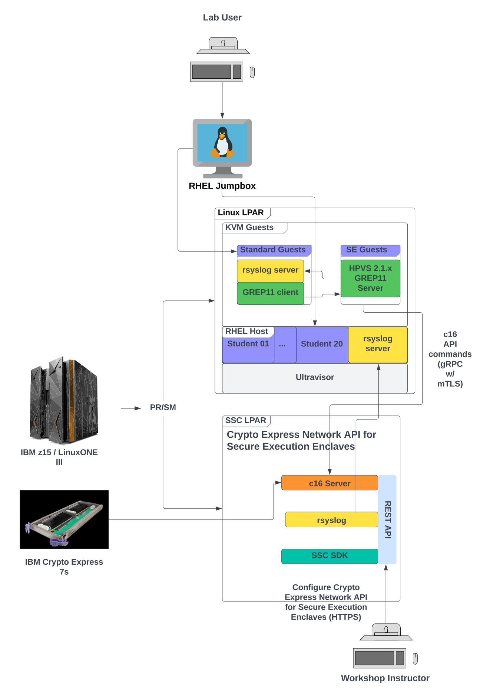

Print Site
Confidential Computing LinuxONE Workshop¶
Welcome to our Confidential Computing LinuxONE workshop. Organizations can leverage secure execution to protect Linux® workloads on IBM zSystems and LinuxONE. This workshop will cover how to get started with this technology on-premises using Hyper Protect Virtual Servers 2.1.x.
Agenda¶
Introductory Presentations¶
- Introduction to Hyper Protect Virtual Servers 2.1.x
Lab: Build and Deploy a GREP11 Server Using Hyper Protect Virtual Servers 2.1.x¶
In this lab, you will deploy a Hyper Protect Virtual Servers 2.1.x GREP11 instance and connect to it to secure your transactions. 1
Workshop authors¶
-
For the purposes of this lab, you are fulfilling the requirements of a fictional organization. These requirements could change for your specific organization but would follow a similar pattern with different specifics. ↩
Lab ↵
Lab Overview¶
Lab environment topology¶

Hyper Protect Virtual Servers 2.1.3 provides an IBM-provided and -supported Secure Execution-enabled KVM image that runs on a Linux LPAR on an IBM zSystems or LinuxONE server.
Hyper Protect Virtual Servers allows you to specify your workload via a "contract" that you define.
Within the contract you specify an OCI-compliant image that provides your workload.
For our lab this LPAR is running RHEL 8.5. You can use any distribution on IBM zSystems or LinuxONE that supports Secure Execution- i.e., recent versions of Ubuntu and SUSE as well as RHEL.
The Hyper Protect Virtual Servers 2.1.3 product provides a component, Crypto Express Network API for Secure Execution Enclaves (CENA4SEE) 1.1.1.3, that runs as an appliance in a Secure Service Container (SSC) LPAR that has direct-attached Crypto Express cards. CENA4SEE also provides a GREP11 Server OCI image that communicates with the CENA4SEE appliance.
This enables GREP11 client code written to call the GREP11 Server API to access the Crypto Express cards on the CENA4SEE SSC LPAR. The GREP11 client code can run from anywhere as long as it has network connectivity to the GREP11 Server. The GREP11 Server can run anywhere as long as it has network connectivity to the CENA4SEE server.
For our lab, The GREP11 client code will run in a KVM guest running Ubuntu 22.04 within our RHEL 8.5 Linux LPAR. Each student will start and use their own such guest. The GREP11 server will run in the same RHEL 8.5 Linux LPAR, and it will be a Secure Execution-enabled HPVS 2.1.3 KVM guest. (All HPVS 2.1.3 guests are by definition enabled for Secure Execution, so in the remainder of the lab we may not repeat the full phrase "Secure Execution-enabled HPVS 2.1.3 KVM guest", but we used it here for emphasis). Each student will start and use their own such GREP11 server guest.
Your HPVS 2.1.3 GREP11 Server guest will be configured to write log messages to an rsyslog service. For the lab, you will configure this rsyslog service on the same Ubuntu guest that you are using for the GREP11 client code.
A single SSC LPAR is used for the CENA4SEE server. Each student's HPVS 2.1.3 GREP11 Server will communicate with the CENA4SEE server- therefore, the instructors have already set up this server for you.
During the lab you will log in to two servers:
-
The RHEL 8.5 host. From here you will launch your Ubuntu KVM guest. You will also use your host login to define the "contract" that HPVS expects so that you can launch your HPVS 2.1.3 GREP11 Server
-
You will log in to your Ubuntu KVM guest for configuring the rsyslog service and for running the GREP11 client code
You will not log in directly to your HPVS 2.1.3 GREP11 Server, nor to the CENA4SEE SSC LPAR, but you will make use of them via your GREP11 Client code.
Lab logistics¶
Except for the RHEL Jumpbox, the systems used in the lab are in the IBM Washington Systems Center (WSC) in the WSC's private network. Access to the WSC private network is through a virtual private network (VPN) client running on the RHEL Jumpbox. The instructors access each student's RHEL Jumpbox in order to log in via the VPN client. Students access their jumpbox from a web browser- other than a modern web browser, no additional software is required on the student's laptop or workstation.
During the lab, students will be directed to open two terminal windows on their jumpbox- one will be designated for working on the RHEL host and the other will be designated for working on their KVM standard Ubuntu guest. Two separate terminal profiles have been created on the jumpbox- one for the RHEL host and one for the KVM standard Ubuntu guest- which have different background and text colors which will help the student more easily differentiate between the two windows. The student may wish to use a single terminal window with two tabs- one with each terminal profile- instead of two different windows. It is fine to do so.
Start Ubuntu KVM Guest¶
Overview of this page¶
This page will help you verify that your jumpbox is configured properly and then guide you to logging in to the RHEL Host from which you will start your student-assigned KVM standard Ubuntu guest.
Verify the student-specific environment variables on your jumpbox¶
You will first ensure that two crucial environment variables are set on your jumpbox. Under most circumstances, the instructors will have already set these variables for you. These variables will enable you to enter all of the commands in this lab without modification- where student-specific information is required in a command, the command will contain environment variables that will be resolved with the student-specific information.
Environment variables are set in three places:
-
On your jumpbox. In most cases, the instructors will have configured your jumpbox with your student-specific environment variables
-
You will have a userid on the RHEL host, and this userid has been configured with student-specific environment variables
-
You will have your own KVM standard guest running Ubuntu, and your guest is also configured with student-specific environment variables
Set or verify the environment variable on your jumpbox for your student ID¶
On your jumpbox, open a terminal window. Your terminal window should have a dark background with a green prompt for the font. You will use this window to perform work on the RHEL host, but before logging in you will ensure that an environment variable specifying your unique student ID has been set properly.
Each student has a unique userid assigned to them. It is likely set for you already. In an instructor-led class, your instructors will let you know if this has been set for you already.
Check this by entering this echo command:
echo ${StudentID}
Example output for student02 [click to expand me]
silliman@nat-147 ~ % echo ${StudentID}
student02
If a value starting with student and ending with a two-digit number is returned to you, then your jumpbox has been configured properly and you may scroll down a bit to the section Log in to the RHEL 8.5 host.
If no output is returned, set this variable to the userid assigned to you by the instructor. E.g., if the instructor assigned you the userid student00, enter this command:
export StudentID=student00
export command, repeat the prior echo command to ensure this was set correctly. Now, you should see your userid displayed:
echo ${StudentID}
Example output [click to expand me]
silliman@nat-147 ~ % echo ${StudentID}
student02
Why did you make me do this?
This way we could provide instructions throughout this lab that are generic enough that every student can just copy and paste most commands "as-is" from the lab guide. (At least that was our goal).
Optional but highly recommended- add your StudentID environment variable to your shell startup script¶
Note: If your StudentID variable was already present then your shell startup script was already updated appropriately and you can scroll down to the section with the title Log in to the RHEL 8.5 host
If we had our way in supplying a system from which you are running the lab, you are probably using bash.
If you are using your own workstation or laptop, if it is running Linux you are probably either using bash or you are savvy enough to figure out which shell you are running.
If you are running it on Apple hardware then you are probably running zsh or bash or are savvy enough to figure out which shell you are running.
If you are running on a Windows machine then we hope that you are using a modern enough version of Windows so that you can use the Windows Subsystem for Linux and pretend that you are using a Linux machine.
If you are running on an older Windows machine then you should ask your manager for a new laptop. If that doesn't work out for you then ask the instructors for help (but not for a new laptop).
If you are not sure what shell you're using, you can use this command to find out what your shell is:
echo ${SHELL}
Example output when using zsh [click to expand me]
silliman@nat-147 ~ % echo ${SHELL}
/bin/zsh
Garrett uses bash 5.x on his Mac. Barry uses zsh - zsh being the default shell on newer versions of MacOS.
Thus, we will show two commands to add the environment variable to your shell startup script, one for bash and one for zsh. If you are using a different shell, we trust you'll be able to figure out the equivalent command.
The Copy Button is Your Friend!
Please enter the appropriate command exactly as shown using the copy button whenever possible. Approximately 0.47% of students think they have to make the variable substitution before entering the command. That doesn't end well. This advice applies generally to every command in this lab unless we explicitly state otherwise.
For users of bash:
echo "export StudentID='${StudentID}'" >> "${HOME}/.bashrc"
For users of zsh:
echo "export StudentID='${StudentID}'" >> "${HOME}/.zshrc"
Why did I just do that?
If you use more than one terminal window to do this lab, then this would allow new terminal windows to be set with this StudentID variable so that you do not have to re-enter it. This will be handy if you either want to use multiple terminal windows for the lab or if you need to open a new window due to an old one closing for whatever reason. We are here to make your flight as comfortable as possible.
Log in to the RHEL 8.5 host¶
You will now sign into our z15 LPAR running Red Hat Enterprise Linux 8.5. This is a system that has been enabled for Secure Execution and so can run workloads provisioned with IBM Hyper Protect Virtual Servers 2.1.3.
Run this command:
ssh -l ${StudentID} 192.168.22.64
One of two things should happen:
a. If you are on an instructor-provided system and the instructors have had the time to load it with an appropriate RSA private key that matches an RSA public key that has been loaded into your assigned userid's account on the RHEL host:
- you will be able to sign in without a password!
OR
b. If you are not on an instructor-provided system or we did not have a chance to load the parts of the RSA key pair in the appropriate locations
- you will be prompted to enter a password. Your instructor will provide you a password by some clandestine means, surely we're not going to put it on a page on the Internet
 !
!
Example messages upon login [Click me]
*
* IBM Washington Systems Center (WSC) .....
* IBM zSystems and LinuxONE C C /
* /< /
* ___ __________/_#__=o
* /(- /(\_\________ \
* \ ) \ )_ \o \
* /|\ /|\ |' |
* | _|
* Red Hat Enterprise Linux 8.5 /o __\
* / ' |
* / / |
* /_/\______|
* ( _( <
* KVM Hypervisor for Blockchain \ \ \
* and Hyper Protect \ \ \
* and Digital Assets \____\____\
* on IBM zSystems and LinuxONE ____\_\__\_\
* /` /` o\
* "It's alive!" |___ |_______|..o-o-o-(#)
*
Activate the web console with: systemctl enable --now cockpit.socket
Register this system with Red Hat Insights: insights-client --register
Create an account or view all your systems at https://red.ht/insights-dashboard
Last login: Mon Feb 13 16:50:14 2023 from 192.168.215.147
[student02@bczkvm(192.168.22.64) ~ [19:11:51] (0)]$
Start your Ubuntu KVM guest¶
A KVM Guest has been defined for each student by the instructors. This guest has the Ubuntu 22.04.2 operating system installed on it. A very straightforward installation path was taken with no additional software packages selected during the installation. You will add additional software packages as necessary during the lab. This guest does not take advantage of the additional protection offered by Secure Execution and HPVS. It could have, but you will already be creating another KVM Guest that is protected by Secure Execution and HPVS. This also helps to make the point that you can run "standard", i.e., non-Secure Execution-protected guests, and Secure Execution-protected guests on the same LPAR.
Display your KVM guest's definition with this command:
sudo virsh dumpxml $(whoami)
We named your Ubuntu KVM guest the same as your userid on the RHEL host, which is why you can use the whoami command.
Example virsh dumpxml output [Click me]
<domain type='kvm'>
<name>student02</name>
<uuid>531199d9-3671-424e-a9c9-74ff5ca3980b</uuid>
<memory unit='KiB'>2097152</memory>
<currentMemory unit='KiB'>2097152</currentMemory>
<vcpu placement='static'>2</vcpu>
<os>
<type arch='s390x' machine='s390-ccw-virtio-rhel8.6.0'>hvm</type>
<boot dev='hd'/>
</os>
<cpu mode='host-model' check='partial'/>
<clock offset='utc'/>
<on_poweroff>destroy</on_poweroff>
<on_reboot>restart</on_reboot>
<on_crash>destroy</on_crash>
<devices>
<emulator>/usr/libexec/qemu-kvm</emulator>
<disk type='file' device='disk'>
<driver name='qemu' type='qcow2'/>
<source file='/var/lib/libvirt/images/hpvslab/student02/student02-ubuntu22.04.qcow2'/>
<target dev='vda' bus='virtio'/>
<address type='ccw' cssid='0xfe' ssid='0x0' devno='0x0000'/>
</disk>
<disk type='file' device='cdrom'>
<driver name='qemu' type='raw'/>
<target dev='sda' bus='scsi'/>
<readonly/>
<address type='drive' controller='0' bus='0' target='0' unit='0'/>
</disk>
<controller type='scsi' index='0' model='virtio-scsi'>
<address type='ccw' cssid='0xfe' ssid='0x0' devno='0x0002'/>
</controller>
<controller type='pci' index='0' model='pci-root'/>
<controller type='virtio-serial' index='0'>
<address type='ccw' cssid='0xfe' ssid='0x0' devno='0x0003'/>
</controller>
<interface type='network'>
<mac address='52:54:00:67:e5:c1'/>
<source network='default'/>
<model type='virtio'/>
<address type='ccw' cssid='0xfe' ssid='0x0' devno='0x0001'/>
</interface>
<console type='pty'>
<target type='sclp' port='0'/>
</console>
<channel type='unix'>
<target type='virtio' name='org.qemu.guest_agent.0'/>
<address type='virtio-serial' controller='0' bus='0' port='1'/>
</channel>
<audio id='1' type='none'/>
<memballoon model='virtio'>
<address type='ccw' cssid='0xfe' ssid='0x0' devno='0x0004'/>
</memballoon>
<panic model='s390'/>
</devices>
</domain>
Look for the your userid in the output of the virsh dumpxml command. You'll see it in two places- at the top where it names your guest, and then within the filepath and filename of the qcow2 image that provides your KVM guest.
Run this command to start your Ubuntu KVM guest:
sudo virsh start $(whoami)
Expected output (for student02)
Domain 'student02' started
You are off to a smashing start! 
You should now open a new window or tab using the terminal profile named KVM Standard Guest. From your current terminal window, click File on the menu bar, and then choose either New Tab or New Window based on your personal preference, but, in either case, choose the profile named KVM Standard Guest. This will create a terminal tab or window with a light beige background and a gray font. You'll be directed to use this new tab or window when doing work on your KVM Ubuntu guest and you'll be directed to use your original terminal tab or window when doing work on the RHEL host.
You have departed from the happy path... 
Please ask your instructor for help.
Configure rsyslog service¶
Overview of this page¶
The HPVS 2.1.3-protected GREP11 Server that you will create later in the lab will log its output to an rsyslog service on the Ubuntu KVM guest that you just started in the previous section. Rsyslog on your Ubuntu KVM guest is currently not set up for this, so you will configure rsyslog in this section of the lab.
Logging to IBM Log Analysis on IBM Cloud
You can also log the output of an HPVS 2.1.3 guest to an IBM Log Analysis instance on IBM Cloud. That is not covered in this lab but if you are interested in this, it is covered in the product documentation.
Log in to your Ubuntu KVM guest¶
How tricky can logging in be?
The Ubuntu KVM guest that you started is in a KVM internal private network that uses NAT (Network Address Translation) in order to communicate with the "outside world". "Outside world" in this context refers to any server outside of our RHEL 8.5 host.
Your home network is probably doing the same thing
Your cable modem or DSL modem or satellite modem provides NAT services for your home network. This modem connects to your network router either:
- combined into a single physical unit that acts as a modem and a router (and maybe a toaster or coffee maker- at least it should be given how much my wallet shrinks after paying my monthly bill!)
OR
- a separate modem and router you buy yourself for better performance or to save money in the long run by eliminating monthly equipment rental fees from your internet provider
tl;dr
You will use "port forwarding" to get from the RHEL 8.5 host to your Ubuntu KVM guest. It's a little tricky but we've set things up to make it easy for you.
How have we made it easy for you?
If you're on an instructor-provided system, we've hopefully set an environment variable for you that specifies the port you'll need to connect to on the RHEL 8.5 host that will allow it to successfully forward your login attempt to your Ubuntu KVM guest. Run this:
echo ${Student_SSH_Port}
Example output when variable was set
silliman@nat-147 ~ % echo ${Student_SSH_Port}
20024
If you don't see a port number somewhere between 20023 and 20042- each student will have a unique port- then ask the instructor for your port and set it with this command (changing 22222 from the example to your instructor-assigned port)
export Student_SSH_Port=22222
There is nothing magical about the port range 20023 to 20042- this just happens to be the range of ports the instructors configured on the host system. The secret formula used by the instructors is 20022 + last two digits of your student userid, and the system has been set up to allow twenty students to take the lab at the same time.
For the same reason as explained the in the beginning of the lab when we had you check that your student userid was set in a variable, if this variable was not already set and you had to set it, it is optional but recommended to update your shell so that this change will take effect in new terminal windows or tabs as well. Examples are shown for bash and zsh- pick the appropriate command or tailor for your shell:
echo "export Student_SSH_Port='${Student_SSH_Port}'" >> "${HOME}/.bashrc"
echo "export Student_SSH_Port='${Student_SSH_Port}'" >> "${HOME}/.zshrc"
Ensure that you are in the terminal tab or window for your KVM Standard Guest since you're now ready to log in to your Ubuntu KVM guest:
ssh -p ${Student_SSH_Port} -l student 192.168.22.64
Example messages logging into Ubuntu KVM guest
silliman@nat-147 ~ % ssh -p ${Student_SSH_Port} -l student 192.168.22.64
Last login: Thu Feb 9 19:32:09 2023 from 192.168.215.147
student@ubuntu2204:~$
Continue to enter commands in your KVM Standard Guest terminal tab or window until directed to switch to your other tab or window.
Is my userid really student?
That's right, your userid is student on your Ubuntu KVM guest. Each student has a unique userid on the RHEL 8.5 host, but since each student has their own unique Ubuntu KVM guest, you each have the same userid, student, since you have this guest all to yourself.
You should be able to log in without a password prompt, but if not, your instructor will provide you with the password.
Install rsyslog-gnutls package¶
The initial installation of Ubuntu installed an rsyslog service. Display it with this command:
sudo systemctl status rsyslog
Example output
● rsyslog.service - System Logging Service
Loaded: loaded (/lib/systemd/system/rsyslog.service; enabled; vendor preset: enabled)
Active: active (running) since Tue 2023-02-14 00:24:49 UTC; 12min ago
TriggeredBy: ● syslog.socket
Docs: man:rsyslogd(8)
man:rsyslog.conf(5)
https://www.rsyslog.com/doc/
Main PID: 654 (rsyslogd)
Tasks: 4 (limit: 2350)
Memory: 2.2M
CPU: 8ms
CGroup: /system.slice/rsyslog.service
└─654 /usr/sbin/rsyslogd -n -iNONE
Feb 14 00:24:49 ubuntu2204 systemd[1]: Starting System Logging Service...
Feb 14 00:24:49 ubuntu2204 systemd[1]: Started System Logging Service.
Feb 14 00:24:49 ubuntu2204 rsyslogd[654]: imuxsock: Acquired UNIX socket '/run/systemd/journal/syslog' (f>
Feb 14 00:24:49 ubuntu2204 rsyslogd[654]: rsyslogd's groupid changed to 115
Feb 14 00:24:49 ubuntu2204 rsyslogd[654]: rsyslogd's userid changed to 107
Feb 14 00:24:49 ubuntu2204 rsyslogd[654]: [origin software="rsyslogd" swVersion="8.2112.0" x-pid="654" x->
Feb 14 00:24:49 ubuntu2204 systemd[1]: rsyslog.service: Sent signal SIGHUP to main process 654 (rsyslogd)>
Feb 14 00:34:49 ubuntu2204 rsyslogd[654]: [origin software="rsyslogd" swVersion="8.2112.0" x-pid="654" x->
lines 1-22/22 (END)
If you're having trouble getting back to a command prompt, press q (for quit).
The default installation of rsyslog needs to be modified to allow it to receive messages sent across the network using the TCP protocol and with mutual TLS authentication.
You'll modify the configuration to allow this.
-
Become the root user:
sudo su -Example output when becoming root
student@ubuntu2204:~$ sudo su - root@ubuntu2204:~# -
Create the proper configuration file in the /etc/rsyslog.d/ directory:
cat << EOF > /etc/rsyslog.d/server.conf # output to journal module(load="omjournal") template(name="journal" type="list") { # can add other metadata here property(outname="PRIORITY" name="pri") property(outname="SYSLOG_FACILITY" name="syslogfacility") property(outname="SYSLOG_IDENTIFIER" name="app-name") property(outname="HOSTNAME" name="hostname") property(outname="MESSAGE" name="msg") } ruleset(name="journal-output") { action(type="omjournal" template="journal") } # make gtls driver the default and set certificate files \$DefaultNetstreamDriver "gtls" \$DefaultNetstreamDriverCAFile /var/lib/rsyslog/x509/ca.crt \$DefaultNetstreamDriverCertFile /var/lib/rsyslog/x509/server.crt \$DefaultNetstreamDriverKeyFile /var/lib/rsyslog/x509/server-key.pem # load TCP listener module( load="imtcp" StreamDriver.Name="gtls" StreamDriver.Mode="1" StreamDriver.Authmode="x509/certvalid" ) # start up listener at port 6514 input( type="imtcp" port="6514" ruleset="journal-output" ) EOFWe might have had you put the cart before the horse a little bit because there is some work to do to ensure that what you've added to this configuration file actually works! But we did this so that we can point out the sections that are requiring this extra work.
Take a look close to the bottom of the file
There are two sections of interest that are highlighted in the above code block. If these lines could speak to you, they would say, "We are going to receive TCP messages, and we will use TLS to authenticate with the sender of these messages and to enable encryption of the messages, and here are the certificate and keys needed to enable this to work".
For this configuration file to work, you'll need to install a software package to allow rsyslog to receive TLS-authenticated TCP messages and you'll need to create the certificate and keys and put them where the configuration file says you put them.
-
Prove to yourself that the rsyslog package has already been installed (by the "bare-bones" default Ubuntu setup):
apt-cache policy rsyslogOutput showing rsyslog is already installed
rsyslog: Installed: 8.2112.0-2ubuntu2.2 Candidate: 8.2112.0-2ubuntu2.2 Version table: *** 8.2112.0-2ubuntu2.2 500 500 http://ports.ubuntu.com/ubuntu-ports jammy-updates/main s390x Packages 500 http://ports.ubuntu.com/ubuntu-ports jammy-security/main s390x Packages 100 /var/lib/dpkg/status 8.2112.0-2ubuntu2 500 500 http://ports.ubuntu.com/ubuntu-ports jammy/main s390x Packages -
Prove to yourself that the rsyslog-gnutls package has not been installed yet:
apt-cache policy rsyslog-gnutlsOutput showing rsyslog-gnutls is not installed
rsyslog-gnutls: Installed: (none) Candidate: 8.2112.0-2ubuntu2.2 Version table: 8.2112.0-2ubuntu2.2 500 500 http://ports.ubuntu.com/ubuntu-ports jammy-updates/main s390x Packages 500 http://ports.ubuntu.com/ubuntu-ports jammy-security/main s390x Packages 8.2112.0-2ubuntu2 500 500 http://ports.ubuntu.com/ubuntu-ports jammy/main s390x Packages -
Remedy the situation (not having rsyslog-gnutls package installed):
apt-get install rsyslog-gnutlsOutput from installing rsyslog-gnutls
Reading package lists... Done Building dependency tree... Done Reading state information... Done Suggested packages: gnutls-bin The following NEW packages will be installed: rsyslog-gnutls 0 upgraded, 1 newly installed, 0 to remove and 0 not upgraded. Need to get 17.8 kB of archives. After this operation, 90.1 kB of additional disk space will be used. Get:1 http://ports.ubuntu.com/ubuntu-ports jammy-updates/main s390x rsyslog-gnutls s390x 8.2112.0-2ubuntu2.2 [17.8 kB] Fetched 17.8 kB in 0s (71.9 kB/s) Selecting previously unselected package rsyslog-gnutls. (Reading database ... 56568 files and directories currently installed.) Preparing to unpack .../rsyslog-gnutls_8.2112.0-2ubuntu2.2_s390x.deb ... Unpacking rsyslog-gnutls (8.2112.0-2ubuntu2.2) ... Setting up rsyslog-gnutls (8.2112.0-2ubuntu2.2) ... Scanning processes... Scanning linux images... Running kernel seems to be up-to-date (ABI upgrades are not detected). No services need to be restarted. No containers need to be restarted. No user sessions are running outdated binaries. No VM guests are running outdated hypervisor (qemu) binaries on this host. -
Optional: Repeat
apt-cache policy rsyslog-gnutlsto see that the package is now installed:apt-cache policy rsyslog-gnutlsOutput showing that rsyslog-gnutls is installed
rsyslog-gnutls: Installed: 8.2112.0-2ubuntu2.2 Candidate: 8.2112.0-2ubuntu2.2 Version table: *** 8.2112.0-2ubuntu2.2 500 500 http://ports.ubuntu.com/ubuntu-ports jammy-updates/main s390x Packages 500 http://ports.ubuntu.com/ubuntu-ports jammy-security/main s390x Packages 100 /var/lib/dpkg/status 8.2112.0-2ubuntu2 500 500 http://ports.ubuntu.com/ubuntu-ports jammy/main s390x Packages
Create a Certification Authority (CA) for your rsyslog service¶
Background Information¶
The TLS authentication for communication with the rysyslog service requires an X509 certificate and private key. An X509 certificate contains a public key that goes with the private key. An X509 certificate also contains metadata including the identification of the holder of the certificate, the purposes the certificate is intended for, and more. Think of a public key as a yummy cake baked with yellow dough, it's moist and tastes pretty good- but the X509 certificate wrapped around it is like the chocolate icing and the rainbow sprinkles- it's delicious! (Break time!!) If you haven't given up on the analogy, think of the private key as the secret recipe to bake the cake that nobody but you knows about. For a slightly more technical (but still just scratching the surface), but perhaps not as tasty, description of public key cryptography check out this description from one of our earlier labs.
An X509 certificate needs to be created and signed by a certification authority (CA).
The authority prefers certification
Most people call a CA a "certificate authority" but actually the Internet Request for Comment (RFC) that defines the X509 standard uses the term "certification authority". Imagine that! 
For the lab you will create your own CA- what is often called a "self-signed" CA. A utility called openssl can be used to do this. A CA signs certificates that it creates. In order to digitally sign something, you use a private key. In simple terms, a publicly known algorithm- which can be poked at and prodded at by researchers and academics in an effort to prove its security or to hopefully win a large bounty by proving its insecurity- is run against a private key that nobody else knows, and produces a unique output, or signature. This signature can be verified algorithmically by anybody who holds the private key's corresponding public key.
Who holds the public key?
That's right, the public  ! It is safe to share your public key with others- it is your private key that you must protect from loss, theft or exposure.
! It is safe to share your public key with others- it is your private key that you must protect from loss, theft or exposure.
If you receive a piece of digital information that is signed, and the public key that corresponds to the private key used to create the signature, you can prove that whoever signed this had to have held the private key in order to create the signature. Okay, cool. But what if a malicious actor had the private key and gave you the public key? Would you feel so great knowing you verified the signer if they were malicious? No! That is where a CA comes in. The idea is that the following process occurs:
- An individual or organization submits a request for a certificate (CSR) with their public key
- The CA takes the effort to verify that the owner of the public key is a good actor and is who they say they are and can be trusted
- The CA creates the certificate that holds the public key, essentially stating "I am a CA and you can trust me and the holder of this certificate that I just signed is a good person and they are who they say they are, so you can trust this certificate and anything it signs".
How is that working out for us?
The X509 Certification Authority protocol is outstanding in theory. In practice its vulnerability lies in the need for the holders of private keys to protect them with diligence. Losing your private key is akin to losing your wallet or your house key or your drivers license or ... you get the picture. Attacks such as software supply chain attacks are often accomplished by malicious actors who have stolen others' private keys. This is why initiatives like Confidential Computing and technologies like Hardware Security Modules are important.
In real world practice, for external, customer-facing applications an enterprise will ask a well-known and trusted third-party CA to issue its certificates. In many cases an enterprise may run its own internal CA for certificates for internal applications. In this lab you're going to create your own CAs. Hopefully, you trust yourself  enough to feel comfortable with this...
enough to feel comfortable with this...
Hands on keyboard time¶
-
Get out of root for the moment, as you'll be doing this certificate work with your regular authority:
exitOutput when getting out of root
root@ubuntu2204:~# exit logoutYour prompt should now end with a dollar sign ($) indicating you are operating with your regular authority as userid student, as opposed to the hash sign (#) prompt that you had when you were operating with root authority.
-
Run this command sequence:
cd ${HOME} && mkdir -p rsyslogWork && cd rsyslogWorkIt accomplishes the following:
- Ensures you are in your home directory (which you already are in unless you wandered off on your own)
- Creates a fresh directory that you'll work in for this activity
- Switches to this new directory
-
Create a private key. It will be the private key your self-signed CA will use so call it
ca-key.pem:openssl genrsa -out ca-key.pem 4096 -
Run the following command to create a configuration file for your CA
cat << EOF > ca.cnf [ req ] default_bits = 2048 default_md = sha256 prompt = no encrypt_key = no distinguished_name = dn [ dn ] C = US O = IBM WSC zSystems and LinuxONE CN = CA for rsyslog for SE-enabled KVM guests EOFWhy are we using .cnf configuration files?
Some
opensslcommands have a tendency to ask a bunch of questions which can be tedious and error-prone when typing the answers, but you can avoid that by creating a configuration file that provides the answers and thus avoids the questions. You'll see this pattern throughout the lab. -
A CA itself has a certificate that it can send or make available to others (others being people, or computer processes, or whomever). You don't have one yet- all you have is a private key. A certificate signing request (CSR) can be created from a private key- it derives the public key from the private key and creates an object called a Certificate Signing Request (CSR) that contians the public key and other identifying information and can be sent to a CA. Create your CSR:
openssl req -config ca.cnf -key ca-key.pem -new -out ca-req.csrCertificate Signing Request (CSR)
The RSA algorithm is a magical mystery tour to most mortals, but the algorithm is such that the public key can be extracted from a private key. You will use the private key as input to a command that will create what is known as a CSR. A CSR is a file that contains the public key (the yellow dough) and other information (the icing and the sprinkles) that you then send to the CA and say "please, please, I'm a good person and you can trust me and please create a real certificate for me". A CSR is like a caterpillar
 and the resulting certificate is like a beautiful butterfly
and the resulting certificate is like a beautiful butterfly  .
.Now you have a certificate signing request.
So you normally send a CSR to a CA to sign. There's a "chicken or the egg" problem here. If a CA needs a Certificate, and a Certificate has to be created by another CA, then how did that CA get created? By another CA? Yes, possibly. But, does the chain go on forever? No- at some point in the chain the CA's certificate was signed by its own private key, and not a higher CA. This is the root of the chain, and it is self-signed. In real life, a chain could be many layers deep, but it eventually has to stop. Think of it like a management chain in an organization's org chart- there are first-line managers, second-line managers, and so forth up to the CEO. The Root certificate is like the CEO.
-
Since you're the boss of your lab, and the worker, you don't need a big long chain of CA's. Just one will do fine. So you'll build a single root, or self-signed, CA, and you'll like it!
 :
:openssl x509 -signkey ca-key.pem -in ca-req.csr -req -days 365 -out ca.crtOutput from creating self-signed CA certificate
Certificate request self-signature ok subject=C = US, O = IBM WSC zSystems and LinuxONE, CN = CA for rsyslog for SE-enabled KVM guests
Create certificate and key for your rsyslog service¶
Process Overview¶
In real life, a CA will probably issue lots of certificates- it's how they make money. Your CA is only going to create a couple:
- a certificate for the rsyslog service which you will create next.
- a certificate for the client (your future GREP11 Server) of the rsyslog service, which you will create later in the lab.
The process is the same as what you just went through for creating your CA for steps 1-3 below but differs slightly for step 4:
- Create a private key
- Create a configuration file to answer questions ahead of time
- Use the key and the config file to create a CSR
- This time you'll have your "self-signed" CA create and sign the certificate.
Creation time¶
-
Create the private key:
openssl genrsa -out server-key.pem 4096 -
Create the configuration file to preemptively answer the inevitable questions. We've used a command pipe to extract your guest's IP address into a variable and then we use that variable in two places in the configuration file. If you borrow this technique for your system please ensure that this command pipe works on your system:
export ip="$(ip route get 1.1.1.1 | grep -oP 'src \K[^ ]+')" && \ cat << EOF > server.cnf [ req ] default_bits = 2048 default_md = sha256 prompt = no encrypt_key = no distinguished_name = dn [ server ] subjectAltName = IP:${ip} extendedKeyUsage = serverAuth [ dn ] C = US O = Rsyslog Service CN = ${ip} EOFOptional: You know you can't resist looking at the output file to see if that IP magic worked, so just do it:
cat server.cnf -
Create the rsyslog service's CSR:
openssl req -config server.cnf -key server-key.pem -new -out server-req.csr -
"Send" the request to your "self-signed" CA in order to create the certificate:
openssl x509 -req -in server-req.csr -days 365 -CA ca.crt -CAkey ca-key.pem -CAcreateserial -extfile server.cnf -extensions server -out server.crtExample output from certificate creation
Certificate request self-signature ok subject=C = US, O = Rsyslog Test Server, CN = 172.16.0.42-
Run this command to display the rsyslog service's certificate in a form that a human can comprehend:
openssl x509 -noout -text -in server.crtExample human-readable display of certificate
Certificate: Data: Version: 3 (0x2) Serial Number: 72:1b:54:77:9d:c9:28:b0:7c:f0:b8:d6:dc:24:e1:b1:60:fa:59:f7 Signature Algorithm: sha256WithRSAEncryption Issuer: C = US, O = IBM WSC zSystems and LinuxONE, CN = CA for rsyslog for SE-enabled KVM guests Validity Not Before: Feb 14 01:18:18 2023 GMT Not After : Feb 14 01:18:18 2024 GMT Subject: C = US, O = Rsyslog Test Server, CN = 172.16.0.42 Subject Public Key Info: Public Key Algorithm: rsaEncryption Public-Key: (4096 bit) Modulus: 00:aa:ed:d0:83:3c:65:8c:6c:4d:f5:bc:bc:56:e9: 3c:57:ab:b8:3c:29:14:2a:73:d6:ca:a0:7e:0c:00: fc:4f:cc:28:88:1c:01:e9:26:9e:5e:0b:60:5e:ee: 69:f3:c7:c8:f9:26:19:71:a7:1a:c1:54:3a:3d:6b: 01:4a:e2:20:ab:89:a5:31:a7:f4:a2:39:71:30:21: 29:17:4f:04:15:73:1d:b7:b6:c2:81:c2:f1:d9:a8: 29:d8:ca:c9:d6:97:f3:37:8e:17:9d:a7:b1:30:c8: 5c:1c:be:e2:75:5e:9f:88:08:76:54:5a:ee:40:d4: 90:26:2b:74:35:71:a2:d1:4d:86:db:46:bf:18:38: 0a:fb:e4:1a:ab:ef:f6:49:1e:7b:bc:76:71:3a:b7: 5e:e8:c0:c7:3d:db:74:2d:87:20:5b:e6:5e:27:67: 1a:e9:e1:ea:20:b8:d2:fc:5e:2d:79:c0:e5:46:22: cf:6e:26:54:c6:00:d1:d0:05:46:0b:9d:97:8c:cb: 68:e7:a4:b2:9a:47:21:67:e5:56:32:cb:ba:c3:0e: c8:f3:f4:17:02:ca:ee:ac:37:0e:f3:40:cf:a4:56: 98:9d:b3:e3:e2:c2:43:d7:3b:a5:c1:09:92:2b:e9: fb:5b:a6:73:d0:83:97:c9:70:7f:f8:84:59:b3:b6: 4f:e8:40:98:92:74:5c:8c:9f:db:27:7f:94:4b:00: a6:cf:06:9b:0f:a9:f4:35:17:01:e6:d6:6d:c2:78: f8:41:59:f6:f6:f2:11:d1:52:28:b5:06:78:ba:db: 12:f2:3f:c6:ef:14:64:cd:85:49:ce:8e:fc:91:b8: 2a:c3:25:6a:cc:3c:46:9d:e8:10:aa:30:fd:3b:55: 3a:26:97:00:8b:62:c4:d6:89:f0:36:68:13:63:19: ba:18:f4:0c:4f:bc:5d:34:c8:24:d9:8e:2f:4b:e5: d9:dd:9f:39:8d:00:54:fe:d9:00:d7:f1:71:6b:8b: 9c:ed:66:de:6a:26:3f:48:cb:3a:4a:fc:9c:50:12: f5:da:dc:e7:e5:08:6c:0a:6d:60:73:cf:e6:b2:3e: 06:59:98:00:2c:97:25:38:01:50:2e:c2:c6:35:fa: e4:d5:20:01:fb:9d:ca:4c:78:3f:7a:ad:c7:5d:db: 5e:04:c7:0f:e2:9f:a1:e9:27:f8:f2:a9:9f:00:07: 58:68:c9:3f:d6:41:5b:46:90:f5:26:6a:04:2c:cf: 44:c9:f8:1e:5d:38:95:95:71:e2:30:57:d5:83:41: 73:a4:00:88:6b:99:84:71:d3:60:ce:32:9c:bb:3b: 39:46:a7:77:fd:7e:ed:1c:81:02:e3:da:83:85:2c: c9:60:c7 Exponent: 65537 (0x10001) X509v3 extensions: X509v3 Subject Alternative Name: IP Address:172.16.0.42 X509v3 Extended Key Usage: TLS Web Server Authentication X509v3 Subject Key Identifier: CC:01:AD:BA:8C:5F:31:B9:58:A9:2D:4E:05:C7:B1:B7:82:10:90:05 X509v3 Authority Key Identifier: DirName:/C=US/O=IBM WSC zSystems and LinuxONE/CN=CA for rsyslog for SE-enabled KVM guests serial:0B:4A:84:C6:84:00:F8:7F:B7:0A:F0:82:FD:4E:C1:F2:99:C2:63:BC Signature Algorithm: sha256WithRSAEncryption Signature Value: 4c:a3:7a:76:21:0d:8f:db:e9:3a:a6:3f:6b:3a:9a:5d:bb:ac: 7e:75:5c:ed:69:3c:b9:2b:6e:84:1c:fc:1f:56:47:ff:b3:38: 92:fe:0f:5b:2c:87:32:0e:8f:60:c3:33:ff:d5:89:26:61:9a: 7f:ce:ae:f3:6b:cc:77:1b:4d:d0:59:5f:d9:09:e1:fa:21:5c: 6a:6f:b3:71:45:10:98:4f:6e:fe:08:7f:31:42:e6:dd:83:9a: 11:de:2d:eb:b5:b9:40:4d:80:86:7f:f8:88:cc:87:60:38:d4: e2:9a:89:9d:ec:43:61:ad:34:96:38:93:ca:4a:63:8d:cc:b7: 33:98:33:e2:63:c1:7b:04:98:80:b3:e1:54:df:f6:24:57:82: 98:c4:e8:64:8a:3b:d2:af:65:56:d7:97:c0:c3:dc:45:06:c9: 4f:ce:5b:d3:49:7f:2b:28:83:27:57:b9:bf:1a:46:81:68:4c: 6b:85:d7:db:f0:d4:25:7b:3d:92:63:d0:91:b5:ec:df:cb:e4: 6b:6c:b0:c4:47:3c:c6:91:64:33:f6:11:6b:5b:f7:70:bd:e1: 71:ef:a6:28:57:b2:a0:e0:2e:ef:ab:34:7a:c4:b8:24:18:88: 5f:92:0b:92:ca:14:a2:b6:62:ab:2c:e6:c2:bb:27:91:54:de: 84:56:1e:ed:f3:7d:b7:e8:34:b4:78:76:2c:1f:af:d9:61:b7: 6e:59:fa:e8:33:38:b4:5e:30:69:71:06:4d:df:fe:cb:46:03: ba:69:7c:85:3c:f0:73:f7:d8:4e:b0:39:aa:79:72:1f:52:2e: 05:cb:81:9f:e3:62:6b:66:55:7c:92:13:21:62:dc:fd:9d:8f: f8:77:dd:d2:b6:61:c4:8f:fa:fa:a0:74:95:fa:9d:f2:5d:d2: 7d:d4:41:95:d8:41:50:99:7d:80:3d:36:28:75:28:62:67:05: 11:a3:95:c7:85:8f:20:37:d6:b8:b5:8a:f6:8a:e3:d0:85:6e: cd:2a:41:f9:e7:48:bb:b0:b7:54:dc:6b:df:c9:a2:5e:f7:61: c2:3a:4c:82:7e:6b:e9:82:cf:c6:3a:7f:a2:ae:39:00:d9:ac: bf:8a:84:72:e6:ae:c1:75:e0:92:60:5e:cd:4b:64:1f:5a:44: 3a:09:15:2c:95:b8:c3:ca:44:ec:79:1e:d5:96:bc:20:9a:7a: cf:6b:e4:cf:e0:91:f2:c2:e6:fd:f1:8a:66:c4:ae:eb:90:90: f4:ec:64:66:9a:9a:11:8d:11:ab:ef:05:d2:42:fb:e5:2c:78: 8a:db:16:b7:96:ae:06:b8:42:b4:c7:23:26:b2:9a:c2:85:d8: 6b:6d:d8:4e:84:0e:ab:a1
-
Copy certificates and private key to the location specified in the /etc/rsyslog.d/server.conf file¶
The configuration file you created in rsyslog a little while ago (near the top of this page) specified /var/lib/rsyslog/x509 as the directory to hold some files. You just created these files in your rsyslogWork directory, so now create the /var/lib/rsyslog/x509 directory and copy the files in there:
sudo mkdir -p /var/lib/rsyslog/x509 && \
for file in ca.crt server.crt server-key.pem ; do \
sudo cp -ipv ${file} /var/lib/rsyslog/x509/. ; \
done \
&& sudo chown -R syslog:syslog /var/lib/rsyslog
Output from copying files
'ca.crt' -> '/var/lib/rsyslog/x509/./ca.crt'
'server.crt' -> '/var/lib/rsyslog/x509/./server.crt'
'server-key.pem' -> '/var/lib/rsyslog/x509/./server-key.pem'
Restart your rsyslog service¶
You'll truly know that you configured everything correctly later in the lab when you try to write messages to it from your yet-to-be-created HPVS 2.1.3 GREP11 Server. But for now, you will verify it somewhat by taking a before and after snapshot of which TCP ports on your system are listening.
Run this command, and then in a moment you'll repeat the command. What you should notice here is the absence of port 6514 in the output:
sudo lsof -nP -iTCP -sTCP:LISTEN
Output showing listening TCP ports
COMMAND PID USER FD TYPE DEVICE SIZE/OFF NODE NAME
systemd-r 602 systemd-resolve 14u IPv4 15472 0t0 TCP 127.0.0.53:53 (LISTEN)
sshd 709 root 3u IPv4 16871 0t0 TCP *:22 (LISTEN)
sshd 709 root 4u IPv6 16882 0t0 TCP *:22 (LISTEN)
You are now ready to restart the rsyslog service on your machine:
sudo systemctl restart rsyslog
No news is good news on the above command- it's pretty quiet when it works.
Display the rsyslog service's status and notice it hasn't been active very long, since it was just restarted:
sudo systemctl status rsyslog
Reminder: q gets you back to a command prompt.
Output showing rsyslog status after restart
● rsyslog.service - System Logging Service
Loaded: loaded (/lib/systemd/system/rsyslog.service; enabled; vendor preset: enabled)
Active: active (running) since Tue 2023-02-14 01:30:47 UTC; 13s ago
TriggeredBy: ● syslog.socket
Docs: man:rsyslogd(8)
man:rsyslog.conf(5)
https://www.rsyslog.com/doc/
Main PID: 1439 (rsyslogd)
Tasks: 9 (limit: 2350)
Memory: 1.8M
CPU: 1.008s
CGroup: /system.slice/rsyslog.service
└─1439 /usr/sbin/rsyslogd -n -iNONE
Feb 14 01:30:46 ubuntu2204 systemd[1]: Starting System Logging Service...
Feb 14 01:30:47 ubuntu2204 rsyslogd[1439]: imuxsock: Acquired UNIX socket '/run/systemd/journal/syslog' (>
Feb 14 01:30:47 ubuntu2204 rsyslogd[1439]: rsyslogd's groupid changed to 115
Feb 14 01:30:47 ubuntu2204 rsyslogd[1439]: rsyslogd's userid changed to 107
Feb 14 01:30:47 ubuntu2204 rsyslogd[1439]: [origin software="rsyslogd" swVersion="8.2112.0" x-pid="1439" >
Feb 14 01:30:47 ubuntu2204 systemd[1]: Started System Logging Service.
Now when you rerun the command to see the listening TCP ports, seeing 6514 in the output is an indication of success. If you don't see 6514 in the output, it's time to make those instructors earn their keep:
sudo lsof -nP -iTCP -sTCP:LISTEN
Expected output showing port 6514 is listening
COMMAND PID USER FD TYPE DEVICE SIZE/OFF NODE NAME
systemd-r 602 systemd-resolve 14u IPv4 15472 0t0 TCP 127.0.0.53:53 (LISTEN)
sshd 709 root 3u IPv4 16871 0t0 TCP *:22 (LISTEN)
sshd 709 root 4u IPv6 16882 0t0 TCP *:22 (LISTEN)
rsyslogd 1439 syslog 6u IPv4 22401 0t0 TCP *:6514 (LISTEN)
rsyslogd 1439 syslog 7u IPv6 22402 0t0 TCP *:6514 (LISTEN)
Switch to your terminal tab or window for your session with the RHEL host, as you will start the next section of the lab working on the RHEL host.
Please proceed to the next section of the lab by clicking the Next link on the bottom right of this page.
Create rsyslog client certificate for the GREP11 Server¶
Overview of this section¶
In the last section you created the following:
- self-signed CA for the rsyslog service
- server certificate for the rsyslog service
In this section you will use your self-signed CA (1 above) to create:
- client certificate for your (not-yet-created) HPVS 2.1.3 GREP11 Server
Your GREP11 Server will be a client to the rsyslog service. (It serves clients who want to make GREP11 requests, but for logging it is a client to the rsyslog service).
Please read the instructions carefully
You'll be switching between both of your userids in this section:
- your studentnn userid on the RHEL host where nn is unique to you and between 01 and 20
- your student userid on your Ubuntu KVM guest
We'll do our part by telling you when to switch. Please do your part by reading the instructions carefully!
If necessary, log in to the RHEL host¶
If you are following the lab in order in one sitting, you are already logged in and have switched to the correct terminal tab and window.
But if you need to log in for any reason, the command is ssh -l ${StudentID} 192.168.22.64
Create certificate for client access to rsyslog¶
Steps 1 through 5 will be performed on the RHEL host.
-
Create a working directory and switch to it:
mkdir ~/rsyslogClientWork && cd rsyslogClientWork -
Create a new private key:
openssl genrsa -out client-key.pem 4096Example output when creating RSA private key
Generating RSA private key, 4096 bit long modulus (2 primes) ..++++ ................................................................................++++ e is 65537 (0x010001)You should see output similar to what is shown above on the RHEL 8.5 host. This same command was very quiet on your Ubuntu KVM guest.
-
Create a configuration file:
cat << EOF > client.cnf [ req ] default_bits = 2048 default_md = sha256 prompt = no encrypt_key = no distinguished_name = dn [ dn ] C = US O = IBM WSC zSystems and LinuxONE CN = SE-enabled HPVS 2.1.3 Grep11 Server EOF -
Create a certificate signing request (CSR):
openssl req -config client.cnf -key client-key.pem -new -out client-req.csr -
Now you are going to use a pattern that is similar to a real-world pattern:
You are going to send your CSR, which you just created on the RHEL host, to the Rsyslog CA which you created on your Ubuntu KVM guest:
scp client-req.csr student@${StudentGuestIP}:./rsyslogWork/.As shown in the sample output below, you may need to type yes since this is the first connection between the two systems, and you may have to enter a password that will be supplied by the instructors:
Example prompt and output when sending file
The authenticity of host '172.16.0.42 (172.16.0.42)' can't be established. ECDSA key fingerprint is SHA256:QBZpZnpbKTyu8uG3XmcB3z2STnArtTjeVPwBtQONSnc. Are you sure you want to continue connecting (yes/no/[fingerprint])? yes Warning: Permanently added '172.16.0.42' (ECDSA) to the list of known hosts. student@172.16.0.42's password: client-req.csr 100% 1691 9.2MB/s 00:00 -
Switch to your terminal tab or window for your KVM Ubuntu guest.
-
If you are doing the lab in one sitting, in order, then you are already logged in. If you need to login for any reason the command is
ssh -p ${Student_SSH_Port} -l student 192.168.22.64. Steps 8 through 12 will be performed on your Ubuntu KVM guest. -
You are now the CA registrar. Switch to your working directory and find the certificate signing request(CSR) that your customer (i.e., you) sent to you.
cd ${HOME}/rsyslogWork && ls -l client*.csrMake sure your csr is listed
-rw-r--r-- 1 student student 1691 Feb 14 01:47 client-req.csr -
You will do your due diligence and check the contents of the CSR:
openssl req -noout -text -in client-req.csrExample human-readable display of CSR
Certificate Request: Data: Version: 1 (0x0) Subject: C = US, O = IBM WSC zSystems and LinuxONE, CN = SE-enabled HPVS 2.1.3 Grep11 Server Subject Public Key Info: Public Key Algorithm: rsaEncryption Public-Key: (4096 bit) Modulus: 00:b0:38:b1:27:ee:a2:9f:35:10:dd:74:b2:46:e6: b8:2a:e4:c9:7f:7d:b3:1d:45:96:7d:bc:9d:5a:90: 06:64:da:b8:23:73:f3:99:46:54:a3:2a:a8:8e:db: 10:96:7e:de:04:65:81:ee:68:f1:5e:4d:a1:3d:db: 2e:44:3a:ff:e2:fe:60:86:ad:90:b9:91:f1:4b:94: c9:43:4a:85:56:32:2a:ab:c9:2a:71:de:b7:fc:40: e2:1b:aa:17:08:3a:65:4a:b8:70:d8:5c:b4:b6:ca: 4f:8d:a1:d0:03:04:20:4e:7e:23:26:20:85:45:e4: 21:ec:bb:f8:38:64:36:6d:7c:a1:8a:d8:af:14:1b: 72:bf:e8:cd:2f:2d:2c:0b:5a:39:4e:53:41:f8:a0: 33:91:be:90:64:18:1c:cf:c2:d9:a0:bf:78:db:88: 19:6b:be:0c:10:76:fc:96:fb:01:14:f5:90:8a:4d: a8:0c:0b:10:29:1d:fb:45:e1:f2:59:b5:33:e5:20: f8:76:22:c8:4d:d1:55:dc:de:10:79:66:b8:ff:fa: ee:e4:03:a5:77:9d:50:a1:f2:60:35:84:e1:44:ef: f4:be:be:a9:1b:17:5e:26:4a:ea:24:7d:ff:80:d2: d6:95:4f:1b:b6:5e:22:c6:f2:81:17:bb:fe:ce:f6: 44:29:79:4e:ad:76:04:db:a7:8d:a4:db:8c:e3:cd: bf:48:37:99:4c:1c:e0:26:0f:9f:8b:a4:1f:48:71: 44:d0:5f:ae:c6:93:83:ab:b8:7b:7b:b8:f3:1d:f1: 7d:34:3b:d5:32:f0:74:d9:ee:0b:cd:e7:a9:54:49: 2b:23:dc:1a:57:ae:a3:03:d8:9c:47:14:75:0c:47: c6:be:e3:84:61:e7:15:b8:fe:0b:5f:53:a0:f6:a8: 92:e4:2c:c9:51:43:de:3f:be:0f:a6:c7:44:1f:81: c9:c0:9d:d3:3a:42:2f:b0:52:59:47:c6:da:96:93: ba:e7:11:f4:dd:ba:75:46:86:b5:ef:ee:49:34:92: 36:03:32:00:99:71:ed:83:1a:cd:3f:e3:79:7b:ee: 04:49:59:aa:01:ce:4d:67:0e:0f:88:e6:62:82:1e: 0b:07:01:cf:74:38:20:7b:0d:69:f5:2e:09:e5:84: 20:f3:82:15:7f:a4:0d:ae:35:da:de:f2:a9:30:6e: 3e:e3:72:26:b3:18:10:6c:d7:df:4c:fc:bf:e3:33: 8c:c6:e3:83:04:db:c9:a9:a8:41:d2:97:be:a0:ec: bd:f1:89:18:eb:c5:e7:0b:fc:47:30:c8:e1:cd:e6: 54:cd:f1:e7:c3:23:51:48:4f:fd:89:49:43:6d:96: e0:cc:69 Exponent: 65537 (0x10001) Attributes: (none) Requested Extensions: Signature Algorithm: sha256WithRSAEncryption Signature Value: 8d:0b:7b:fd:eb:6b:04:85:4f:b6:a8:81:8f:03:77:aa:26:7d: 58:44:3a:af:1b:de:fe:73:52:38:7c:8b:e9:2d:47:34:93:31: 9d:04:0b:08:3a:3c:92:72:cf:60:c6:3b:83:6c:9a:8d:7b:08: 4b:13:44:8b:3c:14:58:f7:b6:26:8c:c8:d5:29:f7:f8:fb:98: a6:9f:78:6a:9a:f4:10:88:16:55:b8:83:ee:7d:1b:95:4c:02: 77:10:9c:ca:61:01:c7:33:7f:65:81:6e:5e:18:25:a7:68:26: e0:5e:b5:6d:89:00:31:ed:21:bf:32:c8:13:4b:00:c6:a3:b5: 5f:4d:13:4c:86:51:31:59:02:92:fd:88:30:3a:1f:ac:da:8b: 82:25:b2:3d:7e:1d:1f:e3:55:aa:7a:26:1f:85:b6:86:87:34: 9a:36:5e:55:0b:a9:6b:dd:77:56:4f:54:3e:27:ec:ac:a7:aa: ea:bb:86:40:a2:e8:af:88:77:5b:41:ec:42:0f:06:1e:7a:36: 85:5f:36:14:d4:02:30:3c:27:8d:85:61:0c:93:83:a0:0d:cd: e7:c3:ac:02:d9:49:2e:58:a5:a1:24:33:56:a6:6c:e1:dc:dc: 5b:11:32:65:84:08:70:7e:b2:52:2f:34:5e:83:46:45:8e:91: dc:4a:2d:31:2d:3e:3a:4a:03:a2:c4:02:d9:7f:6a:89:42:10: da:a4:7a:24:c2:2a:b5:fb:25:c8:1b:45:5f:f1:85:91:ca:0a: 44:74:8f:60:44:86:e5:49:ab:d9:d1:d8:fa:0c:6d:1f:a8:7c: 7c:6f:3f:66:0b:d9:46:5a:5c:4d:6e:79:7a:c2:eb:d2:02:a9: 80:1e:66:53:b9:fd:5d:cf:6e:86:e7:58:7f:a4:74:31:cd:9f: b6:c2:b0:24:69:70:2f:9e:6e:4f:2d:74:53:8b:15:74:6c:08: bd:f0:b9:d2:e4:e0:a4:14:cf:b1:77:4d:6d:88:8a:ee:c7:6c: 4b:15:c9:91:85:7d:a2:fa:cd:10:27:b3:27:fc:3b:f2:d1:86: 57:33:0d:27:02:f2:c6:ab:46:8e:00:de:88:1f:59:d0:fd:6f: 30:39:94:ba:af:17:89:37:df:0d:9e:1a:a7:d6:49:de:f5:40: 61:e3:fa:52:70:3d:57:76:9f:fa:15:30:be:64:85:27:61:b0: 02:9f:f6:20:c3:2d:1a:84:44:48:f6:08:db:f8:80:b9:ea:38: 16:52:fe:2a:c0:f1:d9:8f:80:37:9f:fd:e2:ec:1e:99:c3:01: 2d:b6:11:dd:5a:29:c8:02:2c:aa:d7:3f:78:c5:f2:fe:29:d7: 98:f4:d1:1d:7e:9e:5d:8d -
Time to mint the certificate
Due diligence check
For the purposes of this lab assume you've done a background check on the customer, checked their reviews on Yelp and NextDoor, looked at their Facebook page and LinkedIn profiles. You're a little concerned with some of those college fraternity party pictures on Facebook, but, what the heck, their check has cleared the bank, so you decide to go ahead and mint the certificate.
openssl x509 -req -in client-req.csr \ -days 365 -CA ca.crt -CAkey ca-key.pem \ -CAcreateserial -out client.crtOutput from creating the certificate
Certificate request self-signature ok subject=C = US, O = IBM WSC zSystems and LinuxONE, CN = SE-enabled HPVS 2.1.3 Grep11 Server -
Your quality control department asks you to display the certificate before sending it to the customer:
openssl x509 -noout -text -in client.crtIt should look similar to this [click to expand]
Certificate: Data: Version: 1 (0x0) Serial Number: 29:4a:dd:c7:66:81:ab:5a:1d:bb:20:76:a0:25:34:90:21:93:40:6b Signature Algorithm: sha256WithRSAEncryption Issuer: C = US, O = IBM WSC zSystems and LinuxONE, CN = CA for rsyslog for SE-enabled KVM guests Validity Not Before: Feb 14 01:58:14 2023 GMT Not After : Feb 14 01:58:14 2024 GMT Subject: C = US, O = IBM WSC zSystems and LinuxONE, CN = SE-enabled HPVS 2.1.3 Grep11 Server Subject Public Key Info: Public Key Algorithm: rsaEncryption Public-Key: (4096 bit) Modulus: 00:b0:38:b1:27:ee:a2:9f:35:10:dd:74:b2:46:e6: b8:2a:e4:c9:7f:7d:b3:1d:45:96:7d:bc:9d:5a:90: 06:64:da:b8:23:73:f3:99:46:54:a3:2a:a8:8e:db: 10:96:7e:de:04:65:81:ee:68:f1:5e:4d:a1:3d:db: 2e:44:3a:ff:e2:fe:60:86:ad:90:b9:91:f1:4b:94: c9:43:4a:85:56:32:2a:ab:c9:2a:71:de:b7:fc:40: e2:1b:aa:17:08:3a:65:4a:b8:70:d8:5c:b4:b6:ca: 4f:8d:a1:d0:03:04:20:4e:7e:23:26:20:85:45:e4: 21:ec:bb:f8:38:64:36:6d:7c:a1:8a:d8:af:14:1b: 72:bf:e8:cd:2f:2d:2c:0b:5a:39:4e:53:41:f8:a0: 33:91:be:90:64:18:1c:cf:c2:d9:a0:bf:78:db:88: 19:6b:be:0c:10:76:fc:96:fb:01:14:f5:90:8a:4d: a8:0c:0b:10:29:1d:fb:45:e1:f2:59:b5:33:e5:20: f8:76:22:c8:4d:d1:55:dc:de:10:79:66:b8:ff:fa: ee:e4:03:a5:77:9d:50:a1:f2:60:35:84:e1:44:ef: f4:be:be:a9:1b:17:5e:26:4a:ea:24:7d:ff:80:d2: d6:95:4f:1b:b6:5e:22:c6:f2:81:17:bb:fe:ce:f6: 44:29:79:4e:ad:76:04:db:a7:8d:a4:db:8c:e3:cd: bf:48:37:99:4c:1c:e0:26:0f:9f:8b:a4:1f:48:71: 44:d0:5f:ae:c6:93:83:ab:b8:7b:7b:b8:f3:1d:f1: 7d:34:3b:d5:32:f0:74:d9:ee:0b:cd:e7:a9:54:49: 2b:23:dc:1a:57:ae:a3:03:d8:9c:47:14:75:0c:47: c6:be:e3:84:61:e7:15:b8:fe:0b:5f:53:a0:f6:a8: 92:e4:2c:c9:51:43:de:3f:be:0f:a6:c7:44:1f:81: c9:c0:9d:d3:3a:42:2f:b0:52:59:47:c6:da:96:93: ba:e7:11:f4:dd:ba:75:46:86:b5:ef:ee:49:34:92: 36:03:32:00:99:71:ed:83:1a:cd:3f:e3:79:7b:ee: 04:49:59:aa:01:ce:4d:67:0e:0f:88:e6:62:82:1e: 0b:07:01:cf:74:38:20:7b:0d:69:f5:2e:09:e5:84: 20:f3:82:15:7f:a4:0d:ae:35:da:de:f2:a9:30:6e: 3e:e3:72:26:b3:18:10:6c:d7:df:4c:fc:bf:e3:33: 8c:c6:e3:83:04:db:c9:a9:a8:41:d2:97:be:a0:ec: bd:f1:89:18:eb:c5:e7:0b:fc:47:30:c8:e1:cd:e6: 54:cd:f1:e7:c3:23:51:48:4f:fd:89:49:43:6d:96: e0:cc:69 Exponent: 65537 (0x10001) Signature Algorithm: sha256WithRSAEncryption Signature Value: 9f:41:62:18:0f:db:0a:84:f6:59:bc:cd:22:e4:73:d6:18:b0: d0:4e:2a:da:8f:5c:46:06:f1:80:f3:4b:5d:cf:fe:a2:a3:97: cc:bd:96:8e:d2:d4:58:ab:ac:56:dd:6f:12:3b:52:a8:df:e5: 4b:26:8e:92:b3:ed:28:9a:c3:28:6d:8b:f9:13:b0:01:fa:ed: 8f:48:08:08:07:ac:8f:61:00:fc:53:41:9e:d2:53:c5:b8:d7: f4:f2:c9:cc:87:58:2d:48:f3:34:be:fe:0d:dc:9e:b6:11:74: 18:da:92:db:db:b3:c6:4f:10:63:6c:4c:fb:5f:86:36:9a:a8: 58:a9:d3:d9:7c:e0:8d:2f:96:f3:64:85:bf:8d:39:28:d2:06: 8b:63:93:d6:42:e3:ad:6d:5b:2e:d3:5a:3d:3c:af:1e:a2:61: a0:d7:c7:a0:4f:b7:16:f1:3b:94:44:23:d8:16:6f:d7:38:36: 84:10:31:ac:e7:17:43:2a:24:04:26:5b:46:50:03:05:7c:8d: cc:77:f5:c1:c1:e3:a2:04:4a:6d:7c:b2:c7:1e:e3:68:b0:4e: 24:92:63:dd:bd:87:3c:af:8c:63:a5:ea:2f:41:90:67:79:e3: 31:89:41:54:be:aa:44:89:45:65:85:2e:5e:b9:8c:af:7c:7e: 0f:08:9a:9b:97:7c:6f:fc:9f:30:e8:0c:30:c4:be:7a:0c:7d: d0:45:71:f2:a7:35:c3:f9:f1:b7:2c:9e:1d:a1:da:3b:70:59: 5b:05:93:a3:fc:59:41:c5:db:bf:0f:20:ec:15:ef:64:61:7e: 52:3b:6a:a1:69:0b:73:93:52:a4:a3:79:ca:b3:0c:b8:cd:2b: 59:b5:19:03:2e:21:b8:b5:d3:8d:05:2e:d6:0d:b0:9a:7d:e9: f9:e7:2b:96:3a:a5:e3:05:b6:d8:0a:e2:ea:2f:b0:02:42:ba: a5:9c:1d:d8:29:7f:3b:bd:7c:73:1a:4a:ae:ca:3a:1d:50:16: 3a:42:3c:0c:23:6a:15:ed:57:01:88:f3:dc:b7:e3:3e:55:48: 31:07:4f:38:9c:dc:10:71:e8:8c:82:d3:9e:a6:97:ca:70:20: e9:70:31:b2:46:09:79:03:20:93:b0:16:af:07:67:eb:0c:4f: b0:c0:a9:e8:eb:bc:ab:74:37:93:76:89:92:82:f3:48:a5:a1: 16:62:39:2d:d5:79:67:e2:ea:6e:a9:6e:40:e1:7f:da:01:df: f0:4f:6f:a0:36:80:ae:ab:a2:4d:07:6e:ba:14:bf:85:82:50: e1:3d:df:64:bc:91:3d:60:c4:90:8c:3b:6f:0f:11:31:a6:5f: 4f:36:5a:69:04:05:88:b5 -
Now you send the certificate to the customer:
scp client.crt ${StudentID}@192.168.22.64:./rsyslogClientWork/.You may be prompted to type yes before connecting and you may be asked to enter an instructor-provided password, as shown in the example below:
Example prompt and output from sending file
The authenticity of host '192.168.22.64 (192.168.22.64)' can't be established. ED25519 key fingerprint is SHA256:IJQFhwQnu7GDWPZmz+ICLIIld9FBLJcD+anb2Bu9y7w. This key is not known by any other names Are you sure you want to continue connecting (yes/no/[fingerprint])? yes Warning: Permanently added '192.168.22.64' (ED25519) to the list of known hosts. student02@192.168.22.64's password: client.crt 100% 1907 9.7MB/s 00:00 -
Now switch back to your terminal tab or window for your session on the RHEL host.
-
If you are doing the lab in one sitting, in order, then you are still logged in on the RHEL host. If you need to login for any reason the command is
ssh -l ${StudentID} 192.168.22.64. Steps 15 and 16 will be performed on the RHEL 8.5 host. -
Switch to the directory where the CA "sent" your new certificate and list the files:
cd ${HOME}/rsyslogClientWork/ && ls -ltrFile listing shows your client certificate (client.crt)
total 16 -rw------- 1 student02 hpvs_students 3247 Feb 13 20:42 client-key.pem -rw-r--r-- 1 student02 hpvs_students 192 Feb 13 20:44 client.cnf -rw-r--r-- 1 student02 hpvs_students 1691 Feb 13 20:45 client-req.csr -rw-r--r-- 1 student02 hpvs_students 1907 Feb 13 21:06 client.crt -
Display your certificate in human-readable form to make sure your CA did their job correctly:
openssl x509 -noout -text -issuer -subject -in client.crtExample display of certificate
Certificate: Data: Version: 1 (0x0) Serial Number: 29:4a:dd:c7:66:81:ab:5a:1d:bb:20:76:a0:25:34:90:21:93:40:6b Signature Algorithm: sha256WithRSAEncryption Issuer: C = US, O = IBM WSC zSystems and LinuxONE, CN = CA for rsyslog for SE-enabled KVM guests Validity Not Before: Feb 14 01:58:14 2023 GMT Not After : Feb 14 01:58:14 2024 GMT Subject: C = US, O = IBM WSC zSystems and LinuxONE, CN = SE-enabled HPVS 2.1.3 Grep11 Server Subject Public Key Info: Public Key Algorithm: rsaEncryption RSA Public-Key: (4096 bit) Modulus: 00:b0:38:b1:27:ee:a2:9f:35:10:dd:74:b2:46:e6: b8:2a:e4:c9:7f:7d:b3:1d:45:96:7d:bc:9d:5a:90: 06:64:da:b8:23:73:f3:99:46:54:a3:2a:a8:8e:db: 10:96:7e:de:04:65:81:ee:68:f1:5e:4d:a1:3d:db: 2e:44:3a:ff:e2:fe:60:86:ad:90:b9:91:f1:4b:94: c9:43:4a:85:56:32:2a:ab:c9:2a:71:de:b7:fc:40: e2:1b:aa:17:08:3a:65:4a:b8:70:d8:5c:b4:b6:ca: 4f:8d:a1:d0:03:04:20:4e:7e:23:26:20:85:45:e4: 21:ec:bb:f8:38:64:36:6d:7c:a1:8a:d8:af:14:1b: 72:bf:e8:cd:2f:2d:2c:0b:5a:39:4e:53:41:f8:a0: 33:91:be:90:64:18:1c:cf:c2:d9:a0:bf:78:db:88: 19:6b:be:0c:10:76:fc:96:fb:01:14:f5:90:8a:4d: a8:0c:0b:10:29:1d:fb:45:e1:f2:59:b5:33:e5:20: f8:76:22:c8:4d:d1:55:dc:de:10:79:66:b8:ff:fa: ee:e4:03:a5:77:9d:50:a1:f2:60:35:84:e1:44:ef: f4:be:be:a9:1b:17:5e:26:4a:ea:24:7d:ff:80:d2: d6:95:4f:1b:b6:5e:22:c6:f2:81:17:bb:fe:ce:f6: 44:29:79:4e:ad:76:04:db:a7:8d:a4:db:8c:e3:cd: bf:48:37:99:4c:1c:e0:26:0f:9f:8b:a4:1f:48:71: 44:d0:5f:ae:c6:93:83:ab:b8:7b:7b:b8:f3:1d:f1: 7d:34:3b:d5:32:f0:74:d9:ee:0b:cd:e7:a9:54:49: 2b:23:dc:1a:57:ae:a3:03:d8:9c:47:14:75:0c:47: c6:be:e3:84:61:e7:15:b8:fe:0b:5f:53:a0:f6:a8: 92:e4:2c:c9:51:43:de:3f:be:0f:a6:c7:44:1f:81: c9:c0:9d:d3:3a:42:2f:b0:52:59:47:c6:da:96:93: ba:e7:11:f4:dd:ba:75:46:86:b5:ef:ee:49:34:92: 36:03:32:00:99:71:ed:83:1a:cd:3f:e3:79:7b:ee: 04:49:59:aa:01:ce:4d:67:0e:0f:88:e6:62:82:1e: 0b:07:01:cf:74:38:20:7b:0d:69:f5:2e:09:e5:84: 20:f3:82:15:7f:a4:0d:ae:35:da:de:f2:a9:30:6e: 3e:e3:72:26:b3:18:10:6c:d7:df:4c:fc:bf:e3:33: 8c:c6:e3:83:04:db:c9:a9:a8:41:d2:97:be:a0:ec: bd:f1:89:18:eb:c5:e7:0b:fc:47:30:c8:e1:cd:e6: 54:cd:f1:e7:c3:23:51:48:4f:fd:89:49:43:6d:96: e0:cc:69 Exponent: 65537 (0x10001) Signature Algorithm: sha256WithRSAEncryption 9f:41:62:18:0f:db:0a:84:f6:59:bc:cd:22:e4:73:d6:18:b0: d0:4e:2a:da:8f:5c:46:06:f1:80:f3:4b:5d:cf:fe:a2:a3:97: cc:bd:96:8e:d2:d4:58:ab:ac:56:dd:6f:12:3b:52:a8:df:e5: 4b:26:8e:92:b3:ed:28:9a:c3:28:6d:8b:f9:13:b0:01:fa:ed: 8f:48:08:08:07:ac:8f:61:00:fc:53:41:9e:d2:53:c5:b8:d7: f4:f2:c9:cc:87:58:2d:48:f3:34:be:fe:0d:dc:9e:b6:11:74: 18:da:92:db:db:b3:c6:4f:10:63:6c:4c:fb:5f:86:36:9a:a8: 58:a9:d3:d9:7c:e0:8d:2f:96:f3:64:85:bf:8d:39:28:d2:06: 8b:63:93:d6:42:e3:ad:6d:5b:2e:d3:5a:3d:3c:af:1e:a2:61: a0:d7:c7:a0:4f:b7:16:f1:3b:94:44:23:d8:16:6f:d7:38:36: 84:10:31:ac:e7:17:43:2a:24:04:26:5b:46:50:03:05:7c:8d: cc:77:f5:c1:c1:e3:a2:04:4a:6d:7c:b2:c7:1e:e3:68:b0:4e: 24:92:63:dd:bd:87:3c:af:8c:63:a5:ea:2f:41:90:67:79:e3: 31:89:41:54:be:aa:44:89:45:65:85:2e:5e:b9:8c:af:7c:7e: 0f:08:9a:9b:97:7c:6f:fc:9f:30:e8:0c:30:c4:be:7a:0c:7d: d0:45:71:f2:a7:35:c3:f9:f1:b7:2c:9e:1d:a1:da:3b:70:59: 5b:05:93:a3:fc:59:41:c5:db:bf:0f:20:ec:15:ef:64:61:7e: 52:3b:6a:a1:69:0b:73:93:52:a4:a3:79:ca:b3:0c:b8:cd:2b: 59:b5:19:03:2e:21:b8:b5:d3:8d:05:2e:d6:0d:b0:9a:7d:e9: f9:e7:2b:96:3a:a5:e3:05:b6:d8:0a:e2:ea:2f:b0:02:42:ba: a5:9c:1d:d8:29:7f:3b:bd:7c:73:1a:4a:ae:ca:3a:1d:50:16: 3a:42:3c:0c:23:6a:15:ed:57:01:88:f3:dc:b7:e3:3e:55:48: 31:07:4f:38:9c:dc:10:71:e8:8c:82:d3:9e:a6:97:ca:70:20: e9:70:31:b2:46:09:79:03:20:93:b0:16:af:07:67:eb:0c:4f: b0:c0:a9:e8:eb:bc:ab:74:37:93:76:89:92:82:f3:48:a5:a1: 16:62:39:2d:d5:79:67:e2:ea:6e:a9:6e:40:e1:7f:da:01:df: f0:4f:6f:a0:36:80:ae:ab:a2:4d:07:6e:ba:14:bf:85:82:50: e1:3d:df:64:bc:91:3d:60:c4:90:8c:3b:6f:0f:11:31:a6:5f: 4f:36:5a:69:04:05:88:b5 issuer=C = US, O = IBM WSC zSystems and LinuxONE, CN = CA for rsyslog for SE-enabled KVM guests subject=C = US, O = IBM WSC zSystems and LinuxONE, CN = SE-enabled HPVS 2.1.3 Grep11 Server
Click the Next link at the bottom of the page to continue to the next part of the lab, where you will create the contract that HPVS 2.1.3 expects, so that you can run your GREP11 Server.
Create Contract for GREP11 Server¶
Overview of this section¶
IBM provides the Secure Execution feature on z15 and newer generations of its IBM zSystems and LinuxONE servers. Currently, that's z15 and LinuxONE III for the "z15" generation and z16 and LinuxONE Emperor 4 for the "z16" generation.
You could create your own Secure Execution-enabled KVM guests and run a workload in it without Hyper Protect Virtual Servers 2.1.3. However, there's non-trivial work involved in setting this up. HPVS 2.1.3 has done that hard work for you, and provided a KVM guest image that will run your application workload as an OCI-compliant (again, think "Docker" in the popular vernacular) container within the HPVS 2.1.3 KVM guest. There is still some work involved in setting up the contract that HPVS 2.1.3 expects- but this is work closer to the application or business level. There is also added value in HPVS 2.1.3 in areas such as:
- logging
- attestation
- verification during boot
- encryption
- persistent disk protection
- separation of duties
This lab covers the features that are checked in the list above. (We won't rest on our laurels until we've built this lab out to cover everything under the sun, but, as the saying goes, Rome wasn't built in a day).
One of the things we just mentioned in the previous paragraph was separation of duties. In a real world situation, multiple personas could create different portions of the contract:
- an application owner deployer might create the workload section of the contract
- a systems administrator might create the environment section of the contract
Then, you could imagine the following scenario taking place:
- application owner can encrypt their piece of the contract such that it can only be decrypted within the HPVS 2.1.3 runtime
- application owner passes their encrypted piece of the contract to the systems administrator
- the systems administrator encrypts their own section
- the systems administrator combines the two sections and signs the resultant contract so that it can be verified by the HPVS 2.1.3 runtime.
Your inquiring mind may say, well that's all well and good, but what about the disk storage of the machine?
If your workload requires persistent disk storage (to survive a container restart) then each of the two personas supplies part of a seed that is used in the calculation of an encryption key for the persistent disk. Neither persona has knowledge of the other's part of the seed if it is passed between parties encrypted, so that no human has the ability to decrypt the persistent disk. The HPVS developers have thought through security very carefully! 
Now our lab does not include all of the above features (yet)- for example, the GREP11 Server is stateless (this is a feature, not a bug) so we do not need persistent disk storage. And for this lab, you have and will continue to wear many hats, including both the application owner workload deployer and the system administrator environment deployer. We are not going to cover attestation in this lab either, but hope to do so in a future lab.
Creation of directory structure for contract¶
This command will create the directory structure expected by the lab instructions:
mkdir -p ${HOME}/contract/grep11Server/{workload,environment}
A contract requires a workload section and an environment section, and they each get their own directory. Then the sections are packaged together, and signed, and the signature is added as the third section. This final result- the contract- will be stored in your ${HOME}/contract/grep11Server directory.
Create workload section of the contract¶
Switch to your workload directory:
cd ${HOME}/contract/grep11Server/workload
HPVS expects the contract to specify an OCI container specified by a Docker Compose file. The Docker Compose file specifies an OCI image to run and other information necessary to configure the resulting container. Your workload is the GREP11 Server, so, yes, there's an OCI image for that. The container that runs the GREP11 Server will be configured with information such as:
- the port it listens on
- a configuration file that describes the GREP11 server
- another configuration file that describes its connection to the CENA4SEE server
- certificates and keys to enable TLS communication with the CENA4SEE server
- certificates and keys to enable TLS communication with clients that call the GREP11 Server
That's right, two more "sets" of X509 certificates, egads!! You've already worked with one set for the rsyslog service, so we'll offer the commands for these next two sets without as much commentary.
A brief history of the term 'CENA4SEE', or, you say to-MAY-toe and I say to-MAH-toe
You will not see the term CENA4SEE in any official product documentation. Try googling it. CENA4SEE is the instructor's abbreviation for Crypto Express Network API for Secure Execution Enclaves. The product documentation often uses the term c16. When the instructor inquired to the developers what c16 stood for, because he is sure that customers will ask that question, and was told that it doesn't stand for anything, he coined this acronym and will continue to use it until he is threatened with either legal action or involuntary termination of employment.
You are going to put the building blocks for the workload section of the contract together in the following order:
-
You will create a docker-compose file
- docker-compose.yml - this file will reference each of the files listed in items 2-5 of this list
-
You will create a GREP11 Server configuration file
- ep11server.yaml
-
You will create a configuration file for the GREP11 Server to the CENA4SEE server connection
- c16client.yaml
-
You will create x509 material to enable secure communication between GREP11 clients and the GREP11 Server
-
grep11-ca.pem
-
grep11-server.pem
-
grep11-server.key
-
-
You will create or obtain x509 material to enable secure communication between GREP11 Server and the CENA4SEE server
-
c16-ca.pem - this file has already been created by the instructors
-
c16-client.key
-
c16-client.pem - the instructors will create this file upon your request in a subsequent step in the lab
-
Let's get started!
Create docker-compose file¶
Create a directory and switch to it:
mkdir -p compose && cd compose
Create the docker-compose file:
cat << EOF > docker-compose.yml
services:
$(whoami)-ep11server:
user: "0"
image: quay.io/gmoney23/grep11server@sha256:a864174faadc39650e61ca45d8a3ceb01ea88602cfe6f4bd4e35c48e60556900
ports:
- 9876:9876
volumes:
- ./c16client.yaml:/etc/c16/c16client.yaml
- ./c16-ca.pem:/cfg/c16-ca.pem
- ./c16-client.key:/cfg/c16-client.key
- ./c16-client.pem:/cfg/c16-client.pem
- ./grep11server.yaml:/etc/ep11server/ep11server.yaml
- ./grep11-ca.pem:/cfg/grep11-ca.pem
- ./grep11-server.pem:/cfg/grep11-server.pem
- ./grep11-server.key:/cfg/grep11-server.key
EOF
Notice the value of the image key. This is the GREP11 Server OCI image provided with the Crypto Express Network API for Secure Execution Enclaves 1.1.1.3 (CENA4SEE) that Garrett (gmoney23) has uploaded to his account on Quay.io for this lab. (Not for your production usage as it could disappear at any time).
Notice the list of eight items under the volumes section. The left side of each entry in the list specifies the name of the file on the RHEL host. The value after the ':' specifies where that file is mapped to within the OCI container that will run in the HPVS 2.1.3 guest. Taking the first item in the list as an example, you will create a file named c16client.yaml and then within the OCI container it will be available at /etc/c16/c16client.yaml. (As an aside, you can also map entire directories from your host to a Docker container, although this example only maps individual files).
Create the configuration file for the GREP11 server¶
Run this command to create the configuration file for the GREP11 server:
cat << EOF > grep11server.yaml
#
# Copyright IBM Corp. All Rights Reserved.
#
# SPDX-License-Identifier: Apache-2.0
#
logging:
# Package log levels
# Levels: info, warning, debug, error, fatal, trace, and panic
levels:
entry: debug
# example below
# entry: info
###################################
## GRPC SERVICES TALKING TO GREP11 server ##
ep11crypto:
enabled: true
connection:
address: 0.0.0.0
port: 9876
# Secure connection TLS options
tls:
enabled: true
# certfile, keyfilie and cacert refer to the pem files that holds the certs
certfile: /cfg/grep11-server.pem
keyfile: /cfg/grep11-server.key
mutual: true
cacert: /cfg/grep11-ca.pem
# same as above, but instead of filename, contents of PEM can be in an environment
# variable (i.e. to avoid mounting files into docker container)
cacertbytes:
certfilebytes:
keyfilebytes:
# Server TCP/IP connection monitoring
# serverKeepaliveTime is the duration in seconds after which if the server
# does not see any activity from the client it pings the client to see
# if it is alive
# serverKeepaliveTimeout is the duration the server waits for a response
# from the client after sending a ping before closing the connection
keepalive:
serverKeepaliveTime: 30
serverKeepaliveTimeout: 5
# Comma-separated list of card.domain tuples. card and domain are hex numbers
# i.e. "08.0016,0a.0016" corresponds to 22nd (x16) domain on eighth card and 22nd domain on tenth (x0a) card
domain: "08.0016,0a.0016"
EOF
Create the client configuration file for the CENA4SEE server.¶
-
Run this command to create the client configuration for the the CENA4SEE server:
cat << EOF > c16client.yaml #trace, debug, info, warn, err, error, critical, off loglevel: 'debug' servers: - hostname: 192.168.22.80 port: 9001 mTLS: true server_cert_file: "/cfg/c16-ca.pem" client_key_file: "/cfg/c16-client.key" client_cert_file: "/cfg/c16-client.pem" EOFDebug log level for lab purposes
For the two configuration files you just created, you set the log level to debug. We would probably not recommend a log level of debug for most normal production use cases but you won't be trodding too heavily on the server in the lab and it provides extra information for your current pursuit of knowledge.
The value for the hostname in c16client.yaml, 192.168.22.80, is the IP address of the CENA4SEE server running on the SSC LPAR used in the lab.
-
Pick out the names of the files you will be creating from the grep11server.yaml file with the following command:
grep -e 'file:' -e 'cacert:' grep11server.yamlYour output should look like this:
You will create these files in the lab [Click me]
certfile: /cfg/grep11-server.pem keyfile: /cfg/grep11-server.key cacert: /cfg/grep11-ca.pem -
Pick out the names of the files you will be creating or getting from the instructors from the c16client.yaml file with the following command:
grep 'file:' c16client.yamlYou get the first file and create the other two [Click me]
server_cert_file: "/cfg/c16-ca.pem" client_key_file: "/cfg/c16-client.key" client_cert_file: "/cfg/c16-client.pem"
Create x509 material for GREP11 client to GREP11 Server communication¶
Your GREP11 Server acts as both a server and a client. Its primary purpose is to be a server- to serve requests from GREP11 clients. But in order to get its job done, the GREP11 Server must send requests to the CENA4SEE server, so it is a client to the CENA4SEE server. (It is also a client to the rsyslog service so that it can send its log messages there).
In this section, you'll set up the material to enable the GREP11 Server's role as a, well, GREP11 Server!
-
Create and change to a new directory which you will use for your self-signed GREP11 Server CA:
mkdir -p ${HOME}/GREP11CAwork && cd ${HOME}/GREP11CAwork -
Create an RSA private key for your self-signed GREP11 Server CA:
openssl genrsa -out grep11-ca-key.pem 2048 -
Create a configuration file to assist in creation of your self-signed CA for the GREP11 Server:
cat << EOF > ca.cnf [ req ] default_bits = 2048 default_keyfile = keyfile.pem distinguished_name = req_distinguished_name attributes = req_attributes prompt = no output_password = mypass [ req_distinguished_name ] C = US ST = Virginia L = Herndon O = IBM OU = Washington Systems Center - IBM zSystems and LinuxONE CN = WSC $(whoami) HPVS CA emailAddress = student@notreal.email.com [ req_attributes ] challengePassword = A challenge password [ x509_extensions ] subjectKeyIdentifier = hash authorityKeyIdentifier = keyid,issuer basicConstraints = critical,CA:TRUE EOF -
Create your self-signed CA for the GREP11 Server. Notice it uses the private key you created two commands ago and refers to the configuration file your last command created:
openssl req -new -x509 \ -key grep11-ca-key.pem \ -out grep11-ca.pem \ -days 395 -config ca.cnf \ -extensions x509_extensions -
Display the CA certificate that you just created:
openssl x509 -noout -text -in grep11-ca.pemYour output will look similar to this:
Example of display of certificate:
Certificate: Data: Version: 3 (0x2) Serial Number: 61:1d:d1:10:f4:34:bd:84:7b:ca:0b:59:2b:cf:1e:e2:16:5a:01:5c Signature Algorithm: sha256WithRSAEncryption Issuer: C = US, ST = Virginia, L = Herndon, O = IBM, OU = Washington Systems Center - IBM zSystems and LinuxONE, CN = WSC student02 HPVS CA, emailAddress = student@notreal.email.com.com Validity Not Before: Feb 14 14:36:41 2023 GMT Not After : Mar 15 14:36:41 2024 GMT Subject: C = US, ST = Virginia, L = Herndon, O = IBM, OU = Washington Systems Center - IBM zSystems and LinuxONE, CN = WSC student02 HPVS CA, emailAddress = student@notreal.email.com Subject Public Key Info: Public Key Algorithm: rsaEncryption RSA Public-Key: (2048 bit) Modulus: 00:a6:56:f3:c4:81:58:e0:d5:cd:87:28:38:bc:6b: e3:0f:b4:c7:61:2e:bd:4e:17:b0:a2:65:2e:ad:63: d1:2a:b4:a2:45:d6:f3:9d:ba:8a:0d:66:72:fd:15: b1:d3:4c:08:ff:3c:8d:c0:c4:23:86:c2:65:18:19: 35:03:bb:3c:d5:e2:7a:66:47:4a:6e:d1:eb:37:3f: f7:62:c0:35:45:5f:38:7a:2f:4a:1e:aa:f7:8b:4a: 55:6f:bb:b4:e3:1e:a6:62:20:55:df:1f:04:1e:70: 73:c5:32:b5:5e:77:6f:45:6d:43:fd:01:76:84:83: 6f:c8:9a:6e:20:27:81:94:af:e7:fb:7c:c0:8c:91: bf:f1:47:d3:05:a7:56:69:29:bd:1b:59:0d:54:c0: 53:e1:d8:58:a9:f1:d1:fb:d4:c0:e1:9d:f3:f2:36: 51:ff:60:2a:91:28:9d:07:5e:27:5f:3a:68:f0:7e: 5a:29:cb:1a:5e:b1:c5:98:e1:14:fa:38:29:67:81: 4e:e3:4b:a2:bb:c7:c3:b5:24:c4:d4:c5:23:d8:70: 2b:98:97:e2:ef:26:32:5a:ea:02:ea:3f:48:90:7f: a5:6f:b3:49:68:0a:31:d6:c9:18:c8:57:f7:7c:e0: 4d:e4:46:f7:3c:30:7a:4a:16:df:f4:c9:b7:d8:c0: e7:bb Exponent: 65537 (0x10001) X509v3 extensions: X509v3 Subject Key Identifier: E3:62:2B:39:9A:DB:57:77:DE:A2:C5:7E:11:A6:76:22:5F:F7:91:9D X509v3 Authority Key Identifier: keyid:E3:62:2B:39:9A:DB:57:77:DE:A2:C5:7E:11:A6:76:22:5F:F7:91:9D X509v3 Basic Constraints: critical CA:TRUE Signature Algorithm: sha256WithRSAEncryption 88:11:95:13:b8:fb:f8:b0:67:2c:a7:8f:d5:7b:27:24:e1:77: 45:4a:9d:af:fe:8b:34:f8:84:dc:80:69:a6:fb:50:5f:ce:86: 5d:a2:30:f5:f0:d9:1b:7a:92:9e:c1:69:78:f3:42:65:9f:2f: 3e:c9:61:96:bf:93:5a:4f:e9:70:16:de:b1:91:78:b7:0a:38: 2c:54:6c:21:32:be:90:e9:b5:25:29:d7:df:b2:a5:86:2d:bc: 04:9a:ca:ee:cb:1b:29:02:6e:59:4f:86:85:d9:06:a3:1b:8e: 94:df:9b:9b:56:20:f2:33:02:3c:ff:17:c3:46:04:2d:db:64: 1a:0f:9d:7b:2d:b6:af:dd:c4:5b:ad:70:89:09:5d:3b:02:b7: 74:24:79:e2:b5:a4:1a:ed:f9:8a:55:73:f6:20:4d:4f:88:42: 24:77:08:92:09:7d:42:2e:40:88:fa:42:1a:2b:10:b6:8f:28: a1:b8:33:7c:99:fa:c6:29:0f:50:85:cd:f7:e0:b1:b7:ea:14: 0f:ac:a6:cd:16:3a:a9:7a:0e:f4:13:b5:35:f0:87:0d:5d:67: d3:14:c3:e8:0e:b7:b1:4f:60:0b:c5:ca:23:93:6e:38:15:ee: 0b:e4:97:79:f9:97:43:ff:9d:42:f5:ea:80:96:d7:7b:b3:2b: d1:4d:7f:36Within your
${HOME}/GREP11CAWorkdirectory, you are a certification authority! -
If you change to this directory, you will be soon be a customer of your CA:
cd ${HOME}/contract/grep11Server/workload/compose -
You want to create a certificate for your GREP11 Server to use for authenticating to GREP11 clients. Start by creating an RSA private key:
openssl genrsa -out grep11-server.key 2048 -
Create a configuration file to assist the creation of your GREP11 Server's CSR:
cat << EOF > serverCSR.cnf # OpenSSL configuration file. # # Establish working directory. dir = . [ ca ] default_ca = CA_default [ CA_default ] serial = $dir/serial default_days = 365 default_md = sha256 preserve = no email_in_dn = no nameopt = default_ca certopt = default_ca default_crl_days = 45 policy = policy_match [ policy_match ] countryName = match stateOrProvinceName = optional organizationName = match organizationalUnitName = optional commonName = supplied emailAddress = optional [ req ] default_md = sha256 distinguished_name = req_distinguished_name prompt = no [ req_distinguished_name ] C = US ST = Virginia L = Herndon O = IBM OU = Washington Systems Center - IBM zSystems and LinuxONE CN = \$ENV::COMMON_NAME EOF -
Create the certificate signing request:
COMMON_NAME=${GREP11ServerIP} openssl req -new -key grep11-server.key \ -out grep11-server.csr -config serverCSR.cnf -
In your current directory,
${HOME}/contract/grep11Server/workload/compose, you are a "customer" of the CA you created in${HOME}/GREP11CAwork. Thus, "send" your CSR to your CA:cp -ipv grep11-server.csr ${HOME}/GREP11CAwork/. -
Put your CA hat back on and go to the CA directory:
cd ${HOME}/GREP11CAwork/ -
Create a configuration file to assist the creation of your GREP11 Server certificate:
cat << EOF > server.cnf # OpenSSL configuration file. # # Establish working directory. dir = . [ ca ] default_ca = CA_default [ CA_default ] serial = $dir/serial default_days = 365 default_md = sha256 preserve = no email_in_dn = no nameopt = default_ca certopt = default_ca default_crl_days = 45 policy = policy_match [ policy_match ] countryName = match stateOrProvinceName = optional organizationName = match organizationalUnitName = optional commonName = supplied emailAddress = optional [ req ] default_md = sha256 distinguished_name = req_distinguished_name prompt = no [ req_distinguished_name ] C = US ST = Virginia L = Herndon O = IBM OU = Washington Systems Center - IBM zSystems and LinuxONE CN = \${ENV::COMMON_NAME} [ server ] basicConstraints = CA:FALSE keyUsage = digitalSignature, keyEncipherment, dataEncipherment extendedKeyUsage = serverAuth nsCertType = server crlDistributionPoints = @crl subjectAltName = \${ENV::SUBJECT_ALT_NAME} [ crl ] URI=http://localhost/ca.crl EOF -
Now, create the certificate:
SUBJECT_ALT_NAME=DNS:192.168.22.64:${GREP11ServerForwardedPort},IP:192.168.22.64,DNS:${GREP11ServerIP}:9876,IP:${GREP11ServerIP} \ COMMON_NAME=${GREP11ServerIP} openssl x509 -sha256 -req \ -in grep11-server.csr -CA grep11-ca.pem -CAkey grep11-ca-key.pem \ -set_serial 8086 -extfile server.cnf -extensions server \ -days 390 -outform PEM -out grep11-server.pemExample output from certificate creation
Signature ok subject=C = US, ST = Virginia, L = Herndon, O = IBM, OU = Washington Systems Center - IBM zSystems and LinuxONE, CN = 172.16.0.61 Getting CA Private Key -
Display the info of the certificate you just created:
openssl x509 -noout -text -in grep11-server.pemYour certificate will look similar to this:
Certificate info
Certificate: Data: Version: 3 (0x2) Serial Number: 8086 (0x1f96) Signature Algorithm: sha256WithRSAEncryption Issuer: C = US, ST = Virginia, L = Herndon, O = IBM, OU = Washington Systems Center - IBM zSystems and LinuxONE, CN = WSC student02 HPVS CA, emailAddress = student@notreal.email.com.com Validity Not Before: Feb 14 14:47:20 2023 GMT Not After : Mar 10 14:47:20 2024 GMT Subject: C = US, ST = Virginia, L = Herndon, O = IBM, OU = Washington Systems Center - IBM zSystems and LinuxONE, CN = 172.16.0.61 Subject Public Key Info: Public Key Algorithm: rsaEncryption RSA Public-Key: (2048 bit) Modulus: 00:ac:16:8c:e2:82:f2:18:4d:b0:c2:6b:1e:62:93: a2:6b:58:8f:eb:60:78:49:20:e1:68:64:d9:b7:a1: a7:3d:ce:ae:ca:f9:86:8e:c8:bd:f8:fc:e3:b6:bb: 19:7d:d7:8d:59:36:c6:d6:63:44:d3:14:06:ff:92: d6:ee:c9:fe:ad:4c:a0:fe:c6:96:fa:5b:29:e4:bd: 08:0b:da:1a:d0:38:eb:f6:90:12:a4:34:a4:b3:21: 63:31:06:32:19:9b:33:d6:f1:93:36:f1:b7:27:c3: 8f:9b:31:c7:ce:e9:b6:61:15:48:c7:a2:c6:80:18: 46:79:73:75:67:6d:78:d1:ec:28:19:24:fc:72:38: 37:49:be:05:60:54:0c:9f:fe:52:5f:a1:16:77:98: fc:a3:d8:2e:fe:f3:b2:4f:eb:2f:45:ad:b1:c9:35: 05:f3:ab:e5:44:13:24:53:e9:67:93:47:08:a8:42: f3:68:61:66:14:65:d2:c1:fe:09:05:06:3d:5f:72: 5c:8b:8b:6b:c4:13:3d:71:9b:f3:5b:29:95:33:e4: 3e:d4:1a:04:9a:93:71:07:ec:02:58:c9:f2:47:b8: d3:dc:db:6f:c4:bc:ff:67:e9:b0:bb:f7:5e:f8:ca: a4:cf:5e:ef:05:cf:06:25:56:1e:c4:ee:24:0d:4e: c9:e7 Exponent: 65537 (0x10001) X509v3 extensions: X509v3 Basic Constraints: CA:FALSE X509v3 Key Usage: Digital Signature, Key Encipherment, Data Encipherment X509v3 Extended Key Usage: TLS Web Server Authentication Netscape Cert Type: SSL Server X509v3 CRL Distribution Points: Full Name: URI:http://localhost/ca.crl X509v3 Subject Alternative Name: DNS:192.168.22.64:19878, IP Address:192.168.22.64, DNS:172.16.0.61:9876, IP Address:172.16.0.61 Signature Algorithm: sha256WithRSAEncryption 84:1e:74:25:f5:7b:d5:c4:d1:7a:7e:5d:c6:84:87:96:2a:75: 7c:20:ce:40:c4:8d:54:d5:2a:cd:53:81:b6:c0:46:73:e8:55: 88:ac:8c:21:0e:71:3c:1a:8f:3e:25:34:55:fc:aa:23:dc:9b: ba:0b:5f:4a:e3:c3:09:d6:c4:d7:4c:27:a1:d3:d2:0d:f0:a2: e0:64:d2:89:b6:61:18:1e:c9:a7:ee:66:fb:36:53:58:3d:a9: 5c:03:4a:fa:5f:e7:10:08:5a:8b:e0:24:1a:90:48:b2:1c:5e: 63:d9:23:60:24:80:5f:f6:27:7e:9f:6c:d9:9e:58:98:71:80: e3:ea:1b:fa:4a:dc:67:7e:e9:23:fe:5f:d1:09:a9:3f:bc:6e: 9b:09:47:3a:4e:df:50:8d:26:0f:e2:75:25:ec:ce:80:1d:a7: 38:29:ef:b2:d6:f0:4e:7d:68:c2:b4:7e:00:7a:ff:79:8f:32: 8e:c1:79:54:38:3a:40:de:6b:d3:b7:6f:31:7d:ac:71:7e:37: 27:ac:7c:e7:b9:7e:12:b2:78:41:68:f4:5e:35:77:8c:d9:3c: 94:f7:0f:95:1c:1b:31:62:9c:f9:99:09:2c:60:03:7c:9c:c1: 56:c7:a0:7e:7b:0e:c3:22:42:95:76:ee:9c:1a:b4:e5:a8:a8: 6d:0f:b3:1f -
"Send" the completed certificate to the "customer":
cp -ipv grep11-server.pem ${HOME}/contract/grep11Server/workload/compose/. -
Also send your public certificate to the customer as they will need it to verify certificates that are sent by their connection partners. (GREP11 clients in this case).
cp -ipv grep11-ca.pem ${HOME}/contract/grep11Server/workload/compose/. -
Switch directories again:
cd ${HOME}/contract/grep11Server/workload/compose
Create x509 material for GREP11 Server to CENA4SEE Server communication¶
-
Learn a new argument (--after-context) to the grep command and display just a portion of the docker-compose file:
grep --after-context 8 volumes docker-compose.ymlExpected output
volumes: - ./c16client.yaml:/etc/c16/c16client.yaml - ./c16-ca.pem:/cfg/c16-ca.pem - ./c16-client.key:/cfg/c16-client.key - ./c16-client.pem:/cfg/c16-client.pem - ./grep11server.yaml:/etc/ep11server/ep11server.yaml - ./grep11-ca.pem:/cfg/grep11-ca.pem - ./grep11-server.pem:/cfg/grep11-server.pem - ./grep11-server.key:/cfg/grep11-server.keyOf the eight files, you have created five of them:
- 2 .yaml files
- 3 grep11-* files
- 3 c16-* files
-
Now it is time to create or acquire the three files called for from c16client.yaml.
There is only one CENA4SEE server that all of the lab students will use. The instructors have set this up, and have created the "self-signed" CA that governs communication between the CENA4SEE server and its clients (each student's GREP11 Server is a client of the CENA4SEE server). You need to acquire the certificate of the CA the instructors created:
cp -ipv /data/lab/c16-ca-public/c16-ca.pem . -
Create an RSA private key using certtool:
Certtool
You used openssl for your previous certificate work. You will use another tool called certtool now.
certtool --generate-privkey --outfile c16-client.keyOutput from private key creation
Generating a 3072 bit RSA private key... -
Create the following template file to avoid being asked questions from certtool:
cat << EOF > csr.cfg # The common name of the certificate owner. cn = "c16client" # The organizational unit of the subject. unit = "IBM WSC zSystems and LinuxONE" # The organization of the subject organization = "IBM WSC" # The location of the subject locality = "Herndon" # The state of the subject. state = "Virginia" # The country of the subject. Two letter code. country = "US" # The subject's domain component dc = "bczkvm" # A dnsname dns_name = ${GREP11ServerIP} # An IP address ip_address = ${GREP11ServerIP} # Use certificate for TLS client tls_www_client EOF -
Now create a CSR:
certtool --generate-request \ --load-privkey c16-client.key \ --template csr.cfg \ --outfile c16-client.csrOutput from creating CSR
Generating a PKCS #10 certificate request... -
Display information about your CSR:
certtool --crq-info --infile c16-client.csrYour output should look similar to this:
Example CSR info
PKCS #10 Certificate Request Information: Version: 1 Subject: DC=bczkvm,C=US,ST=Virginia,L=Herndon,O=IBM WSC,OU=IBM WSC zSystems and LinuxONE,CN=c16client Subject Public Key Algorithm: RSA Algorithm Security Level: High (3072 bits) Modulus (bits 3072): 00:b8:89:6a:97:6f:fd:78:30:e0:c0:16:0e:64:42:fa e6:b9:6b:b1:c2:fd:25:c2:0f:f6:9d:f8:29:14:c5:38 0f:a2:0e:57:07:30:4f:bb:23:03:af:52:fb:65:e5:5b e6:fe:93:21:74:8d:5c:e3:de:e0:1c:3b:47:1f:2f:4d c2:8d:e1:87:01:f7:6b:d9:c0:5d:c4:2e:53:d1:64:39 90:be:a9:76:38:5b:52:14:aa:26:b1:9c:1b:24:18:f4 7c:d7:02:27:3d:08:4a:16:b3:83:c5:70:37:d9:ae:a9 b4:94:cf:a9:77:d0:96:19:f1:06:5d:5e:b6:ff:76:85 d3:88:fe:b1:b3:40:a7:75:61:1b:d8:23:93:1f:01:3f 4a:5e:a3:4b:95:26:36:37:b7:3e:14:c8:dc:c2:d1:1c ee:0a:60:a8:57:18:c1:ef:6f:9a:4f:e7:95:93:6a:a6 15:41:34:d1:9c:51:f6:74:28:5c:79:cb:61:86:f2:73 db:f0:7d:78:1b:4f:a2:08:92:c5:6d:8f:11:02:28:fd 70:27:17:88:7f:6c:42:d5:c5:90:06:06:34:a7:bc:cd d9:c5:c3:4e:00:48:88:7b:d4:53:d2:63:9e:c6:6e:a8 6e:29:a5:57:38:7d:c3:02:05:8c:ec:83:95:43:b9:5e 28:fd:1d:a0:9d:b0:98:58:2e:31:b4:fd:78:75:e7:6a 40:60:eb:1c:53:eb:ef:31:6a:fd:96:49:c1:db:c7:53 c6:f8:ca:7c:db:c3:16:31:37:32:2e:25:ed:d4:96:08 4e:bc:ce:04:b2:ed:c4:91:c1:72:1b:b0:9f:16:3d:17 df:0f:b3:b7:4d:25:db:c4:ad:b4:42:b9:b2:a8:3c:41 52:5c:d7:20:40:62:61:29:cf:89:0f:29:db:e9:53:17 51:65:fc:50:0b:79:13:b5:d6:ab:cb:f8:92:e2:e9:b5 0d:87:d3:c9:5f:d1:dc:c7:03:c4:e9:6c:ce:f2:09:22 f1 Exponent (bits 24): 01:00:01 Signature Algorithm: RSA-SHA256 Attributes: Extensions: Subject Alternative Name (not critical): DNSname: 172.16.0.61 IPAddress: 172.16.0.61 Basic Constraints (critical): Certificate Authority (CA): FALSE Key Usage (critical): Digital signature. Key Purpose (critical): TLS WWW Client. Other Information: Public Key ID: sha1:70d0427d152be23fc9015be370581d19f3c47ff7 sha256:8f5547027afe8e10cd64d840903692e6a703b61a63fdbaebf9e0f446013a2ee6 Public Key PIN: pin-sha256:j1VHAnr+jhDNZNhAkDaS5qcDthpj/brr+eD0RgE6LuY= Self signature: verified -----BEGIN NEW CERTIFICATE REQUEST----- MIIERDCCAqwCAQAwgZgxEjAQBgNVBAMTCWMxNmNsaWVudDEmMCQGA1UECxMdSUJN IFdTQyB6U3lzdGVtcyBhbmQgTGludXhPTkUxEDAOBgNVBAoTB0lCTSBXU0MxEDAO BgNVBAcTB0hlcm5kb24xETAPBgNVBAgTCFZpcmdpbmlhMQswCQYDVQQGEwJVUzEW MBQGCgmSJomT8ixkARkWBmJjemt2bTCCAaIwDQYJKoZIhvcNAQEBBQADggGPADCC AYoCggGBALiJapdv/Xgw4MAWDmRC+ua5a7HC/SXCD/ad+CkUxTgPog5XBzBPuyMD r1L7ZeVb5v6TIXSNXOPe4Bw7Rx8vTcKN4YcB92vZwF3ELlPRZDmQvql2OFtSFKom sZwbJBj0fNcCJz0IShazg8VwN9muqbSUz6l30JYZ8QZdXrb/doXTiP6xs0CndWEb 2COTHwE/Sl6jS5UmNje3PhTI3MLRHO4KYKhXGMHvb5pP55WTaqYVQTTRnFH2dChc ecthhvJz2/B9eBtPogiSxW2PEQIo/XAnF4h/bELVxZAGBjSnvM3ZxcNOAEiIe9RT 0mOexm6obimlVzh9wwIFjOyDlUO5Xij9HaCdsJhYLjG0/Xh152pAYOscU+vvMWr9 lknB28dTxvjKfNvDFjE3Mi4l7dSWCE68zgSy7cSRwXIbsJ8WPRffD7O3TSXbxK20 QrmyqDxBUlzXIEBiYSnPiQ8p2+lTF1Fl/FALeRO11qvL+JLi6bUNh9PJX9HcxwPE 6WzO8gki8QIDAQABoGYwZAYJKoZIhvcNAQkOMVcwVTAcBgNVHREEFTATggsxNzIu MTYuMC42MYcErBAAPTAMBgNVHRMBAf8EAjAAMA8GA1UdDwEB/wQFAwMHgAAwFgYD VR0lAQH/BAwwCgYIKwYBBQUHAwIwDQYJKoZIhvcNAQELBQADggGBAA17uU7a2aJx FNi2syniSomFbZSVQBBTJop7mplzpdyH+/IN/2eJU6wakXuuvCp6Yo2UYd6wMD5V jl9AuZssXYZZRxfCzLtZ/KhCmNzFqnJIGMPpaPW5W72Jtmo3GE1VRRYEnVGZGqbx hnUzY0uiHThT+M31P+ZwpYwsPZmWYm0zBT2NfMAPpgYC0EqXstSqUdksgK1Qxa/L T3pede66CtIDbO+cRCv2ITWyfElZ7HZU93fDAG+R9kSMQDxNyjFQQ1H/b0F155hZ DjkGJ/VSU5RAv59oud4ZUYkGFOFOXlH+4fRhszAGOA53mDGUxL+Oh1VuYijeWyWo kepWkbYZ1o39pb5Zj1PEN6V2pwrLVg1My0VWNoxgnOWVJOGUnAt1jFYo+1fNMBsg xx44AFTZKvKJmHoOnbcSw/maVqg8taeF4vyPHOddsrK9fC4lg5+ZWrLoqhh7t0Ac TNVxGDGmyklOsttcINyIfbyQGMUTURDEDYLl7xLNX8IFTcG+xtlS1g== -----END NEW CERTIFICATE REQUEST-----The "self-signed" CA for the CENA4SEE server is under instructor control- since there is only one CENA4SEE for the class to share, there is only one CA. Let the instructors know that you are ready to have a client certificate created and the instructors will create a certificate for you and place it in the same directory that you are presently working in.
How the instructors will create this certificate for you
In the interests of transparency, this is the command the instructors will use to create your certificate (after setting the ${student} environment variable appropriately). Don't try to run this command as it won't work for you because you do not have access to the "self-signed" CA's private key. (You can try- if you succeed, you are either an excellent hacker, or the instructors are not excellent system administrators, or some combination thereof).
### for your information only certtool --generate-certificate \ --load-request /home/${student}/contract/grep11Server/workload/compose/c16-client.csr \ --outfile ${student}-c16-client.pem \ --load-ca-certificate c16server-ca.pem \ --load-ca-privkey c16server-ca.key \ --template cert.cfg cp -ipv ${student}-c16-client.pem /home/${student}/contract/grep11Server/workload/compose/c16-client.pem chown ${student}:hpvs_students /home/${student}/contract/grep11Server/workload/compose/c16-client.pemThis is also for information only- it is the contents of the configuration file cert.cfg that the instructors use in the above command:
cert.cfg# Expiration days expiration_days = 300 # Honor certificate request extensions #honor_crq_extensions # keyUsage honor_crq_ext = 2.5.29.15 # extKeyUsage honor_crq_ext = 2.5.27.39 # subjectAltName honor_crq_ext = 2.5.29.17 # basicConstraints honor_crq_ext = 2.5.29.19 tls_www_client -
After the instructors notify you that your certificate is ready
 , display it:
, display it:certtool --certificate-info --infile c16-client.pemYour certificate will look like this:
CENA4SEE client certificate info
X.509 Certificate Information: Version: 3 Serial Number (hex): 6c8e1ecbc1ee385c441c03bd1dd64759641c5073 Issuer: DC=hpvs1,C=US,ST=Virginia,L=Herndon,O=IBM WSC zSystems and LinuxONE,OU=IBM WSC,CN=c16server CA Validity: Not Before: Tue Feb 14 15:41:45 UTC 2023 Not After: Mon Dec 11 15:41:45 UTC 2023 Subject: DC=bczkvm,C=US,ST=Virginia,L=Herndon,O=IBM WSC,OU=IBM WSC zSystems and LinuxONE,CN=c16client Subject Public Key Algorithm: RSA Algorithm Security Level: High (3072 bits) Modulus (bits 3072): 00:b8:89:6a:97:6f:fd:78:30:e0:c0:16:0e:64:42:fa e6:b9:6b:b1:c2:fd:25:c2:0f:f6:9d:f8:29:14:c5:38 0f:a2:0e:57:07:30:4f:bb:23:03:af:52:fb:65:e5:5b e6:fe:93:21:74:8d:5c:e3:de:e0:1c:3b:47:1f:2f:4d c2:8d:e1:87:01:f7:6b:d9:c0:5d:c4:2e:53:d1:64:39 90:be:a9:76:38:5b:52:14:aa:26:b1:9c:1b:24:18:f4 7c:d7:02:27:3d:08:4a:16:b3:83:c5:70:37:d9:ae:a9 b4:94:cf:a9:77:d0:96:19:f1:06:5d:5e:b6:ff:76:85 d3:88:fe:b1:b3:40:a7:75:61:1b:d8:23:93:1f:01:3f 4a:5e:a3:4b:95:26:36:37:b7:3e:14:c8:dc:c2:d1:1c ee:0a:60:a8:57:18:c1:ef:6f:9a:4f:e7:95:93:6a:a6 15:41:34:d1:9c:51:f6:74:28:5c:79:cb:61:86:f2:73 db:f0:7d:78:1b:4f:a2:08:92:c5:6d:8f:11:02:28:fd 70:27:17:88:7f:6c:42:d5:c5:90:06:06:34:a7:bc:cd d9:c5:c3:4e:00:48:88:7b:d4:53:d2:63:9e:c6:6e:a8 6e:29:a5:57:38:7d:c3:02:05:8c:ec:83:95:43:b9:5e 28:fd:1d:a0:9d:b0:98:58:2e:31:b4:fd:78:75:e7:6a 40:60:eb:1c:53:eb:ef:31:6a:fd:96:49:c1:db:c7:53 c6:f8:ca:7c:db:c3:16:31:37:32:2e:25:ed:d4:96:08 4e:bc:ce:04:b2:ed:c4:91:c1:72:1b:b0:9f:16:3d:17 df:0f:b3:b7:4d:25:db:c4:ad:b4:42:b9:b2:a8:3c:41 52:5c:d7:20:40:62:61:29:cf:89:0f:29:db:e9:53:17 51:65:fc:50:0b:79:13:b5:d6:ab:cb:f8:92:e2:e9:b5 0d:87:d3:c9:5f:d1:dc:c7:03:c4:e9:6c:ce:f2:09:22 f1 Exponent (bits 24): 01:00:01 Extensions: Key Usage (critical): Digital signature. Subject Alternative Name (not critical): DNSname: 172.16.0.61 IPAddress: 172.16.0.61 Basic Constraints (critical): Certificate Authority (CA): FALSE Key Purpose (not critical): TLS WWW Client. Subject Key Identifier (not critical): 70d0427d152be23fc9015be370581d19f3c47ff7 Authority Key Identifier (not critical): a9a6c37c6e9d71c63f44db39cb5d5fca84228467 Signature Algorithm: RSA-SHA256 Signature: 16:5d:90:43:8d:ab:7e:5a:d5:7f:3a:20:36:0c:8e:04 5d:58:32:27:e1:80:19:f2:7e:2a:9e:9d:c1:11:50:6e 11:03:16:f5:90:4a:32:32:73:b5:59:1d:ef:a0:2e:26 3b:dc:09:ee:9b:c9:02:99:97:7e:54:d5:93:b1:18:5d 42:4f:f8:29:5e:f0:60:2c:b0:51:28:52:a3:6f:5c:93 be:e3:38:2a:cf:23:bf:3e:ce:6e:39:ff:7f:02:44:c3 9e:2b:54:8a:a7:14:17:75:32:38:ea:e4:0f:12:db:22 0b:07:93:bd:8f:5a:5e:00:1f:40:67:77:4a:1c:6a:5e bf:d2:46:53:42:80:87:d5:67:0e:54:dc:ce:60:92:9b 15:4f:0c:eb:d2:4a:cb:5e:c0:ad:1c:00:80:66:fb:22 b1:87:fd:cf:43:f1:21:0d:e6:76:03:ed:99:d0:01:e2 07:fb:e3:b1:d6:a9:b3:5f:28:8e:48:4b:0b:b8:fa:b3 3e:f6:c4:66:39:ea:2d:97:fe:56:38:69:52:bb:31:ba bc:04:6f:99:ee:f5:0e:02:e7:d1:56:87:22:a8:cd:09 c2:be:1a:31:a4:87:42:ff:ba:f7:43:d5:b1:d7:f5:5d 8c:fc:18:8d:5c:78:ef:ce:83:30:76:7c:99:dd:98:d4 cd:3b:ba:24:5b:bf:a0:be:d4:e5:aa:c2:db:fb:ca:9a 52:99:6d:02:f4:c7:da:bc:f0:76:d3:54:3a:91:5d:55 37:13:84:e4:ca:71:6e:1d:24:8b:05:ad:54:15:ee:02 9d:66:04:2a:eb:82:9e:53:a1:90:7d:43:4d:0e:ab:61 76:2e:ba:32:4a:10:41:c5:8b:4c:e7:1f:11:0a:7b:17 37:4b:b6:28:60:5c:69:6c:ae:ac:53:6b:6a:e4:f7:2a b6:d1:7d:c4:9b:ea:8c:88:d4:de:11:13:ee:15:7e:d7 3e:4a:37:bc:19:de:8e:8e:ac:3d:e7:55:bf:8f:8d:6c Other Information: Fingerprint: sha1:479b56297c57950ebc2a112e651f9e2031bb3e5f sha256:63bbb36695023e4abcb92222eccb15b43d2b8bc8d80b9e35ec9eb89ea5dd816b Public Key ID: sha1:70d0427d152be23fc9015be370581d19f3c47ff7 sha256:8f5547027afe8e10cd64d840903692e6a703b61a63fdbaebf9e0f446013a2ee6 Public Key PIN: pin-sha256:j1VHAnr+jhDNZNhAkDaS5qcDthpj/brr+eD0RgE6LuY= -----BEGIN CERTIFICATE----- MIIFWDCCA8CgAwIBAgIUbI4ey8HuOFxEHAO9HdZHWWQcUHMwDQYJKoZIhvcNAQEL BQAwgZoxFTATBgNVBAMTDGMxNnNlcnZlciBDQTEQMA4GA1UECxMHSUJNIFdTQzEm MCQGA1UEChMdSUJNIFdTQyB6U3lzdGVtcyBhbmQgTGludXhPTkUxEDAOBgNVBAcT B0hlcm5kb24xETAPBgNVBAgTCFZpcmdpbmlhMQswCQYDVQQGEwJVUzEVMBMGCgmS JomT8ixkARkWBWhwdnMxMB4XDTIzMDIxNDE1NDE0NVoXDTIzMTIxMTE1NDE0NVow gZgxEjAQBgNVBAMTCWMxNmNsaWVudDEmMCQGA1UECxMdSUJNIFdTQyB6U3lzdGVt cyBhbmQgTGludXhPTkUxEDAOBgNVBAoTB0lCTSBXU0MxEDAOBgNVBAcTB0hlcm5k b24xETAPBgNVBAgTCFZpcmdpbmlhMQswCQYDVQQGEwJVUzEWMBQGCgmSJomT8ixk ARkWBmJjemt2bTCCAaIwDQYJKoZIhvcNAQEBBQADggGPADCCAYoCggGBALiJapdv /Xgw4MAWDmRC+ua5a7HC/SXCD/ad+CkUxTgPog5XBzBPuyMDr1L7ZeVb5v6TIXSN XOPe4Bw7Rx8vTcKN4YcB92vZwF3ELlPRZDmQvql2OFtSFKomsZwbJBj0fNcCJz0I Shazg8VwN9muqbSUz6l30JYZ8QZdXrb/doXTiP6xs0CndWEb2COTHwE/Sl6jS5Um Nje3PhTI3MLRHO4KYKhXGMHvb5pP55WTaqYVQTTRnFH2dChcecthhvJz2/B9eBtP ogiSxW2PEQIo/XAnF4h/bELVxZAGBjSnvM3ZxcNOAEiIe9RT0mOexm6obimlVzh9 wwIFjOyDlUO5Xij9HaCdsJhYLjG0/Xh152pAYOscU+vvMWr9lknB28dTxvjKfNvD FjE3Mi4l7dSWCE68zgSy7cSRwXIbsJ8WPRffD7O3TSXbxK20QrmyqDxBUlzXIEBi YSnPiQ8p2+lTF1Fl/FALeRO11qvL+JLi6bUNh9PJX9HcxwPE6WzO8gki8QIDAQAB o4GVMIGSMA8GA1UdDwEB/wQFAwMHgAAwHAYDVR0RBBUwE4ILMTcyLjE2LjAuNjGH BKwQAD0wDAYDVR0TAQH/BAIwADATBgNVHSUEDDAKBggrBgEFBQcDAjAdBgNVHQ4E FgQUcNBCfRUr4j/JAVvjcFgdGfPEf/cwHwYDVR0jBBgwFoAUqabDfG6dccY/RNs5 y11fyoQihGcwDQYJKoZIhvcNAQELBQADggGBABZdkEONq35a1X86IDYMjgRdWDIn 4YAZ8n4qnp3BEVBuEQMW9ZBKMjJztVkd76AuJjvcCe6byQKZl35U1ZOxGF1CT/gp XvBgLLBRKFKjb1yTvuM4Ks8jvz7Objn/fwJEw54rVIqnFBd1Mjjq5A8S2yILB5O9 j1peAB9AZ3dKHGpev9JGU0KAh9VnDlTczmCSmxVPDOvSSstewK0cAIBm+yKxh/3P Q/EhDeZ2A+2Z0AHiB/vjsdaps18ojkhLC7j6sz72xGY56i2X/lY4aVK7Mbq8BG+Z 7vUOAufRVociqM0Jwr4aMaSHQv+690PVsdf1XYz8GI1ceO/OgzB2fJndmNTNO7ok W7+gvtTlqsLb+8qaUpltAvTH2rzwdtNUOpFdVTcThOTKcW4dJIsFrVQV7gKdZgQq 64KeU6GQfUNNDqthdi66MkoQQcWLTOcfEQp7FzdLtihgXGlsrqxTa2rk9yq20X3E m+qMiNTeERPuFX7XPko3vBnejo6sPedVv4+NbA== -----END CERTIFICATE----- -
Switch directories:
cd ${HOME}/contract/grep11Server/workload/. -
Time to add a convenience script
You are almost finished with the workload section. One thing to do is to add a convenience script to the workload directory. This script is not supplied with the product, but is very useful in the creation of the contract. Create it now and feel free to peruse it but do not run it now. It will be called later by another script. Comments have been added to help explain what the script does.
cat <<-EOF > flow.workload # Create the workload section of the contract and add the contents in the workload.yaml file. # # The Docker Compose file and all supporting configuration files are assumed to be in the ./compose directory # There should not be any unnecessary files as they will get tarred up and added to the COMPOSE_B64 variable # COMPOSE_B64=\$(tar -czv -C compose . | base64 -w0) # # This specifies an intermediate file that could be deleted at the end of the script but # is left intact for lab learning purposes- it is plaintext so keeping it implies that # you would have to protect it appropriately. In production you'll probably want to delete it # WORKLOAD_PLAIN=./workload.yaml.plaintext # # This specifies a file will be encrypted and signed and is the primary output of this script. # It is combined with the encrypted and signed environment section that is created by # another script (flow.signature which is one directory level higher) # Note: this file will also wind up one directory level higher # WORKLOAD=workload.yaml echo " type: workload compose: archive: \${COMPOSE_B64}" > \${WORKLOAD_PLAIN} # # This is the encryption certificate for Hyper Protect Container Runtime and it is # provided with the Hyper Protect Virtual Servers v2.1.3 product # CONTRACT_KEY=/data/lab/hpvs213Certs/ibm-hyper-protect-container-runtime-23.1.0-encrypt.crt # # This variable holds a random password: # PASSWORD_WORKLOAD="\$(openssl rand 32 | base64 -w0)" # # This variable holds the output of the command pipe that # takes your plaintext workload yaml ($WORKLOAD_PLAIN) and encrypts it using the password that # was generated above ($PASSWORD_WORKLOAD) and then base64 encodes this encrypted workload # # As long as nobody else knows your random password ($PASSWORD_WORKLOAD) your data is safe. # But, the Hyper Protect Container Runtime has to encrypt it, so it needs your password. # How will it get that password securely? Read the next set of comment lines to find out. # ENCRYPTED_WORKLOAD="\$(echo -n "\$PASSWORD_WORKLOAD" | base64 -d | openssl enc -aes-256-cbc -pbkdf2 -pass stdin -in "\$WORKLOAD_PLAIN" | base64 -w0)" # # This variable provides secure passage of your random password. How? # It encrypts it with the encryption key of the Hyper Protect Container Runtime (HPCR). # (A key that is encrypted by another key is often called a wrapped key). # Only the HPCR image has the private key which can decrypt this. It is protected from # access from any administrators. So, malicious actors cannot do anything with this # wrapped key, even if they were able to get a hold of it. # # ENCRYPTED_WORKLOAD_PASSWORD="\$(echo -n "\$PASSWORD_WORKLOAD" | base64 -d | openssl rsautl -encrypt -inkey \$CONTRACT_KEY -certin | base64 -w0 )" # # Use the following command to get the encrypted section of the contract: # This variable holds the output of a concatenation of a header, "hyper-protect-basic", # Your wrapped key, and your encrypted workload. # WORKLOAD_ENCRYPTED="hyper-protect-basic.\${ENCRYPTED_WORKLOAD_PASSWORD}.\${ENCRYPTED_WORKLOAD}" # # The above variable is echoed to the a file the directory one level above # echo "\$WORKLOAD_ENCRYPTED" > ../\$WORKLOAD # # NOTE: In a production scenario the plaintext workload section would be # deleted or stored securely but it has been left here for student perusal. # The filename is workload.yaml.plaintext # EOF
Create environment section of the contract¶
-
Change to the directory where you will prepare for environment section of the contract:
cd ../environment -
In the environment section of the contract you are going to specify the information in order to have your GREP11 Server log to the rsyslog that you configured earlier in the lab.
-
Create a directory to gather some files you will need for this rsyslog configuration and change to it:
mkdir -p rsyslog && cd rsyslog -
You will need the CA certificate of the rsyslog service that you created on your Ubuntu KVM guest which you can get via scp:
scp student@${StudentGuestIP}:rsyslogWork/ca.crt . -
Copy your rsyslog client certificate from your working directory:
cp -ipv ${HOME}/rsyslogClientWork/client.crt . -
Convert the client certificate to PKCS#8 format
The directory you just copied the client certificate from also has your private key that you need. However, the HPCR image requires this to be in PKCS#8 (Public Key Cryptography Standard #8) format. Therefore you can't just copy it over- you need to convert it to PKCS#8 format:
openssl pkcs8 -topk8 -inform PEM -outform PEM -nocrypt \ -in ${HOME}/rsyslogClientWork/client-key.pem \ -out client-key-pkcs8.pem -
Go back up one directory level:
cd .. && pwd -
We have provided a convenience script to assist in creating the environment section of the contract
This script is not supplied with the product, but is very useful in the creation of the contract. Create it now and feel free to peruse it but do not run it now. It will be called later by another script. Comments have been added to help explain what the script does.
cat <<-EOF > flow.env # Create the env section of the contract and add the contents in the env.yaml file. # # set some file locations at the top of the file here # RSYSLOG_CA_CRT="./rsyslog/ca.crt" RSYSLOG_CLIENT_CRT="./rsyslog/client.crt" RSYSLOG_CLIENT_KEY="./rsyslog/client-key-pkcs8.pem" # # This specifies an intermediate file that could be deleted at the end of the script but # is left intact for lab learning purposes- it is plaintext so keeping it implies that # you would have to protect it appropriately. In production you'll probably want to delete it # ENV_PLAIN="./env.yaml.plaintext" # # This specifies a file will be encrypted and signed and is the primary output of this script. # It is combined with the encrypted and signed workload section that is created by # another script (flow.signature which is one directory level higher) # Note: this file will also wind up one directory level higher # ENV="env.yaml" # # This variable holds the output of taking all the newlines out of the rsyslog CA certificate and # replacing them with the "\n" characters. In other words, a multiple line file is squashed down # to one line. The HPCR runtime image will then convert it back to the multiple line format # ENV_RSYSLOG_SERVER=\$(awk -vRS="\n" -vORS="\\\\\n" '1' \${RSYSLOG_CA_CRT}) # # This variable holds the output of taking all the newlines out of the client certificate that the # HPCR runtime uses for communicating with rsyslog and replacing them with the "\n" characters. # In other words, a multiple line file is squashed down to one line. THe HPCR runtime image will # then convert it back to the multiple line format # ENV_RSYSLOG_CERT=\$(awk -vRS="\n" -vORS="\\\\\n" '1' \${RSYSLOG_CLIENT_CRT}) # # This variable holds the output of taking all the newlines out of the client private key that the # HPCR runtime uses for communicating with rsyslog and replacing them with the "\n" characters. # In other words, a multiple line file is squashed down to one line. THe HPCR runtime image will # then convert it back to the multiple line format. Before this all happens, the Private Key is # converted to PKCS#8 format # ENV_RSYSLOG_KEY=\$(awk -vRS="\n" -vORS="\\\\\n" '1' \${RSYSLOG_CLIENT_KEY}) echo " type: env logging: syslog: hostname: \"\${StudentGuestIP}\" port: 6514 server: \"\${ENV_RSYSLOG_SERVER}\" cert: \"\${ENV_RSYSLOG_CERT}\" key: \"\${ENV_RSYSLOG_KEY}\"" >\${ENV_PLAIN} # # This command adds the public signing key to the plaintext environment yaml. This key is used inside # the Hyper Protect Container Runtime image to verify the signature over workload and environment sections of # the contract. # cat ./pubSigningKey.yaml >> \${ENV_PLAIN} # This is the encryption certificate for Hyper Protect Container Runtime and it is # provided with the Hyper Protect Virtual Servers v2.1.3 product # CONTRACT_KEY=/data/lab/hpvs213Certs/ibm-hyper-protect-container-runtime-23.1.0-encrypt.crt # # This variable holds a random password: # PASSWORD_ENV="\$(openssl rand 32 | base64 -w0)" # # This variable holds the output of the command pipe that # takes your plaintext environment yaml (\$ENV_PLAIN) and encrypts it using the password that # was generated above (\$PASSWORD_ENV) and then base64 encodes this encrypted environment yaml # # As long as nobody else knows your random password (\$PASSWORD_ENV) your data is safe. # But, the Hyper Protect Container Runtime has to encrypt it, so it needs your password. # How will it get that password securely? Read the next set of comment lines to find out. # ENCRYPTED_ENV="\$(echo -n "\$PASSWORD_ENV" | base64 -d | openssl enc -aes-256-cbc -pbkdf2 -pass stdin -in "\$ENV_PLAIN" | base64 -w0)" # # This variable provides secure passage for your random password. How? # It encrypts it with the encryption key of the Hyper Protect Container Runtime (HPCR). # (A key that is encrypted by another key is often called a wrapped key). # Only the HPCR image has the private key which can decrypt this. It is protected from # access from any administrators. So, malicious actors cannot do anything with this # wrapped key, even if they were able to get a hold of it. # ENCRYPTED_ENV_PASSWORD="\$(echo -n "\$PASSWORD_ENV" | base64 -d | openssl rsautl -encrypt -inkey \$CONTRACT_KEY -certin | base64 -w0 )" # # Use the following command to get the encrypted environment section of the contract: # This variable holds the output of a concatenation of a header, "hyper-protect-basic", # Your wrapped key, and your encrypted environment yaml.. # ENV_ENCRYPTED="hyper-protect-basic.\${ENCRYPTED_ENV_PASSWORD}.\${ENCRYPTED_ENV}" # # The above variable writes the encrypted environment section to the directory one level above # echo "\$ENV_ENCRYPTED" > ../\$ENV EOF
-
-
Backup one more directory level:
cd .. -
You will create three more files that are convenience scripts, similar to flow.workload and flow.env which you have already created:
-
The first script will provide some preparation steps. Create it, peruse it, love it, but don't run it yet:
cat << EOF > flow.prepare # Use the following command to generate a key pair to sign the contract openssl genrsa -aes128 -passout pass:test1234 -out private.pem 4096 openssl rsa -in private.pem -passin pass:test1234 -pubout -out public.pem # The following command is an example of how you can get the signing key: key=\$(awk -vRS="\n" -vORS="\\\\\n" '1' public.pem) echo " signingKey: \"\${key%\\\\n}\"" > environment/pubSigningKey.yaml EOF -
Create the second script which signs the concatenated workload and environment sections of the contract and then appends the signature as the third and final element of the contract. Don't run it yet!
cat << EOF > flow.signature # combine workload and environment cat workload.yaml env.yaml | tr -d '\n' > contract.yaml # Sign the combination from workload and env being approved echo \$( cat contract.yaml | openssl dgst -sha256 -sign private.pem | openssl enc -base64) | tr -d ' ' > signature.yaml # Create user data and add signature: echo "workload: \$(cat workload.yaml) env: \$(cat env.yaml) envWorkloadSignature: \$(cat signature.yaml)" > user_data.yaml echo "" echo "import \`pwd\`/user_data.yaml into User Data or copy and paste from below:" echo "" cat user_data.yaml EOF -
This script isn't strictly necessary for the lab for reasons stated in the comments in the script, but you can create it anyway:
cat << EOF > flow.clear # # It isn't really necessary to run this in our lab environment # because the other scripts will happily trod on these files # as necessary. # # It is more likely that you would run this after running the # other scripts in order to remove these files for security # reasons # # But if you ever had a need to save your signing key pair, # you would want to save private.pem somewhere safe. # rm private.pem public.pem rm environment/pubSigningKey.yaml environment/env.yaml.plaintext rm workload/workload.yaml.plaintext rm env.yaml workload.yaml contract.yaml signature.yaml user_data.yaml EOF
-
Encrypt and sign the contract¶
-
Create a final helper script which calls the flow.* scripts you created earlier:
cat << EOF > makeContract . ./flow.prepare cd workload . ./flow.workload cd ../environment . ./flow.env cd .. . ./flow.signature EOF -
Now run the helper script that you just created:
. ./makeContract
You will be prompted to enter a passphrase. In real life this is something that you would set yourself and have to keep track of. For this lab, the script has hard-coded test1234 so you must type that in and press enter when prompted for it.
The script creates the final contract in a file named user_data.yaml. It also displays the contents of this file to the screen. At the bottom of the output you will see an envWorkloadSignature key. If there is a gobbledygook value (base64-encoded text) associated with this key then things went well.
Create the startup file for the HPVS 2.1.3 GREP11 guest¶
-
Create a copy of the
user_data.yamlfile that your createdThe contract that you just created is going to be packaged with some other files into a startup file for the HPVS 2.1.3 guest that will run your GREP11 Server. One of the files expected is a file named
user-datathat is just a copy of theuser_data.yamlfile that was just createdcp -ipv user_data.yaml user-dataWhy didn't the script just do the above copy for me
We kept user-data intact in case something went wrong in the process, in which case user_data.yaml may be rubbish but at least you haven't trampled on a good user-data that might already be in use.
-
Create
vendor-datawhich is another file required by the process:cat << EOF > vendor-data #cloud-config users: - default EOF -
Create
meta-datawhich is also required, and it will have a hostname tailored for your userid:cat << EOF > meta-data local-hostname: $(whoami)-grep11server EOF -
Run this command (RHEL-specific, see product documentation for Ubuntu command) in order to create the startup file, ciiso.iso:
genisoimage -output /var/lib/libvirt/images/hpvslab/$(whoami)/ciiso.iso \ -volid cidata -joliet -rock user-data meta-data vendor-dataYour output will look like this:
Output from genisoimage command
I: -input-charset not specified, using utf-8 (detected in locale settings) Total translation table size: 0 Total rockridge attributes bytes: 414 Total directory bytes: 0 Path table size(bytes): 10 Max brk space used 0 203 extents written (0 MB)
Please click the Next link at the bottom of the page to continue with the lab.
Start the GREP11 Server as a Secure Execution-enabled, HPVS 2.1.3 guest¶
launch the HPVS 2.1.3 GREP11 server¶
You will start this section from your login session on the RHEL host, and will soon be instructed to switch to your Ubuntu KVM guest session.
This fancy command figures out the last two characters of your assigned userid and is used in other commands in this section, so that the lab instructions will work for everybody:
suffix=$(temp=$(whoami) && echo ${temp: -2})
You aren't going to change anything here since it's already been defined for you by the instructors, but you can display the KVM guest definition of your HPVS 2.1.3 GREP11 Server:
sudo virsh dumpxml grep11se${suffix}
Definition of KVM guest for GREP11 Server
<domain type='kvm'>
<name>grep11se02</name>
<uuid>2315f8ea-a340-4506-abbf-ae04cf7ea868</uuid>
<metadata>
<libosinfo:libosinfo xmlns:libosinfo="http://libosinfo.org/xmlns/libvirt/domain/1.0">
<libosinfo:os id="http://ubuntu.com/ubuntu/20.04"/>
</libosinfo:libosinfo>
</metadata>
<memory unit='KiB'>3903488</memory>
<currentMemory unit='KiB'>3903488</currentMemory>
<vcpu placement='static'>2</vcpu>
<os>
<type arch='s390x' machine='s390-ccw-virtio-rhel8.2.0'>hvm</type>
<boot dev='hd'/>
</os>
<cpu mode='host-model' check='partial'/>
<clock offset='utc'/>
<on_poweroff>destroy</on_poweroff>
<on_reboot>restart</on_reboot>
<on_crash>destroy</on_crash>
<devices>
<emulator>/usr/libexec/qemu-kvm</emulator>
<disk type='file' device='disk'>
<driver name='qemu' type='qcow2' iommu='on'/>
<source file='/var/lib/libvirt/images/hpcr/student02/ibm-hyper-protect-container-runtime-23.1.0.qcow2'/>
<backingStore/>
<target dev='vda' bus='virtio'/>
<address type='ccw' cssid='0xfe' ssid='0x0' devno='0x0000'/>
</disk>
<disk type='file' device='disk'>
<driver name='qemu' type='raw' cache='none' io='native' iommu='on'/>
<source file='/var/lib/libvirt/images/hpvslab/student02/ciiso.iso'/>
<target dev='vdc' bus='virtio'/>
<readonly/>
<address type='ccw' cssid='0xfe' ssid='0x0' devno='0x0002'/>
</disk>
<controller type='pci' index='0' model='pci-root'/>
<interface type='network'>
<mac address='52:54:00:b1:e0:11'/>
<source network='default'/>
<model type='virtio'/>
<driver name='vhost' iommu='on'/>
<address type='ccw' cssid='0xfe' ssid='0x0' devno='0x0001'/>
</interface>
<console type='pty'>
<target type='sclp' port='0'/>
</console>
<audio id='1' type='none'/>
<memballoon model='none'/>
<panic model='s390'/>
</devices>
</domain>
Start your GREP11 Server and attach to its console. Watch the messages carefully. You should not see any failures:
sudo virsh start grep11se${suffix} --console
This is what success looks like
Domain 'grep11se02' started
Connected to domain 'grep11se02'
Escape character is ^] (Ctrl + ])
# HPL11 build:23.1.0 enabler:22.11.6
# Tue Feb 14 17:37:53 UTC 2023
# delete old root partition...
# create new root partition...
# encrypt root partition...
# create root filesystem...
# write OS to root disk...
# decrypt user-data...
2 token decrypted, 0 encrypted token ignored
# run attestation...
# set hostname...
# finish root disk setup...
# Tue Feb 14 17:38:18 UTC 2023
# HPL11 build:23.1.0 enabler:22.11.6
# HPL11099I: bootloader end
hpcr-dnslookup[889]: HPL14000I: Network connectivity check completed successfully.
hpcr-logging[1094]: Configuring logging ...
hpcr-logging[1095]: Version [1.1.74]
hpcr-logging[1095]: Configuring logging, input [/var/hyperprotect/user-data.decrypted] ...
hpcr-logging[1095]: HPL01010I: Logging has been setup successfully.
hpcr-logging[1094]: Logging has been configured
hpcr-catch-success[1391]: VSI Status is: Success
hpcr-catch-success[1391]: VSI has started successfully.
You will have to enter the Ctrl + ] key-combination to break out of the console.
verify that GREP11 server log messages are received by rsyslog¶
The logging of the GREP11 server is going to the rsyslog service that you configured on your Ubuntu guest, so switch to the terminal tab or window for your KVM standard guest.
The arguments to the journalctl command here aren't the most elegant in the world, but, unless midnight passed since you started your GREP11 Server, you will be able to see messages in rsyslog from when you just started up your GREP11 Server:
journalctl --since today --no-pager
There are a lot of messages logged, a veritable trove of treasure for the curious. Here is an example of what you should be able to see:
Log messages in rsyslog from starting the GREP11 Server
Feb 14 17:38:20 ubuntu2204 vpcnode[1439]: authentication probe
Feb 14 17:38:21 ubuntu2204 kernel[1439]: Linux version 5.4.0-136-generic (buildd@bos02-s390x-017) (gcc version 9.4.0 (Ubuntu 9.4.0-1ubuntu1~20.04.1)) #153-Ubuntu SMP Thu Nov 24 15:57:18 UTC 2022 (Ubuntu 5.4.0-136.153-generic 5.4.218)
Feb 14 17:38:21 ubuntu2204 kernel[1439]: setup.289988: Linux is running under KVM in 64-bit mode
Feb 14 17:38:21 ubuntu2204 kernel[1439]: setup.b050d0: The maximum memory size is 3812MB
Feb 14 17:38:21 ubuntu2204 kernel[1439]: numa.196305: NUMA mode: plain
Feb 14 17:38:21 ubuntu2204 kernel[1439]: cpu.33a262: 2 configured CPUs, 0 standby CPUs
Feb 14 17:38:21 ubuntu2204 kernel[1439]: Write protected kernel read-only data: 14928k
Feb 14 17:38:21 ubuntu2204 kernel[1439]: Zone ranges:
Feb 14 17:38:21 ubuntu2204 kernel[1439]: DMA [mem 0x0000000000000000-0x000000007fffffff]
Feb 14 17:38:21 ubuntu2204 kernel[1439]: Normal [mem 0x0000000080000000-0x00000000ee3fffff]
Feb 14 17:38:21 ubuntu2204 kernel[1439]: Movable zone start for each node
Feb 14 17:38:21 ubuntu2204 kernel[1439]: Early memory node ranges
Feb 14 17:38:21 ubuntu2204 kernel[1439]: node 0: [mem 0x0000000000000000-0x00000000ee3fffff]
Feb 14 17:38:21 ubuntu2204 kernel[1439]: Zeroed struct page in unavailable ranges: 7168 pages
Feb 14 17:38:21 ubuntu2204 kernel[1439]: Initmem setup node 0 [mem 0x0000000000000000-0x00000000ee3fffff]
Feb 14 17:38:21 ubuntu2204 kernel[1439]: On node 0 totalpages: 975872
Feb 14 17:38:21 ubuntu2204 kernel[1439]: DMA zone: 8192 pages used for memmap
Feb 14 17:38:21 ubuntu2204 kernel[1439]: DMA zone: 0 pages reserved
Feb 14 17:38:21 ubuntu2204 kernel[1439]: DMA zone: 524288 pages, LIFO batch:63
Feb 14 17:38:21 ubuntu2204 kernel[1439]: Normal zone: 7056 pages used for memmap
Feb 14 17:38:21 ubuntu2204 kernel[1439]: Normal zone: 451584 pages, LIFO batch:63
Feb 14 17:38:21 ubuntu2204 kernel[1439]: percpu: Embedded 34 pages/cpu s98816 r8192 d32256 u139264
Feb 14 17:38:21 ubuntu2204 kernel[1439]: pcpu-alloc: s98816 r8192 d32256 u139264 alloc=34*4096
Feb 14 17:38:21 ubuntu2204 kernel[1439]: pcpu-alloc: [0] 0 [0] 1
Feb 14 17:38:21 ubuntu2204 kernel[1439]: Built 1 zonelists, mobility grouping on. Total pages: 960624
Feb 14 17:38:21 ubuntu2204 kernel[1439]: Policy zone: Normal
Feb 14 17:38:21 ubuntu2204 kernel[1439]: Kernel command line: panic=0 blacklist=virtio_rng swiotlb=262144 cloud-init=disabled console=ttyS0 quiet loglevel=0 systemd.show_status=0 printk.time=0 systemd.getty_auto=0 systemd.firstboot=0 module.sig_enforce=1
Feb 14 17:38:21 ubuntu2204 kernel[1439]: Dentry cache hash table entries: 524288 (order: 10, 4194304 bytes, linear)
Feb 14 17:38:21 ubuntu2204 kernel[1439]: Inode-cache hash table entries: 262144 (order: 9, 2097152 bytes, linear)
Feb 14 17:38:21 ubuntu2204 kernel[1439]: mem auto-init: stack:off, heap alloc:on, heap free:off
Feb 14 17:38:21 ubuntu2204 kernel[1439]: software IO TLB: mapped [mem 0x5fffc000-0x7fffc000] (512MB)
Feb 14 17:38:21 ubuntu2204 kernel[1439]: Memory: 3277624K/3903488K available (9216K kernel code, 1716K rwdata, 5708K rodata, 3436K init, 960K bss, 625864K reserved, 0K cma-reserved)
Feb 14 17:38:21 ubuntu2204 kernel[1439]: SLUB: HWalign=256, Order=0-3, MinObjects=0, CPUs=2, Nodes=1
Feb 14 17:38:21 ubuntu2204 kernel[1439]: ftrace: allocating 29715 entries in 117 pages
Feb 14 17:38:21 ubuntu2204 kernel[1439]: rcu: Hierarchical RCU implementation.
Feb 14 17:38:21 ubuntu2204 kernel[1439]: rcu: #011RCU restricting CPUs from NR_CPUS=512 to nr_cpu_ids=2.
Feb 14 17:38:21 ubuntu2204 kernel[1439]: #011Tasks RCU enabled.
Feb 14 17:38:21 ubuntu2204 kernel[1439]: rcu: RCU calculated value of scheduler-enlistment delay is 10 jiffies.
Feb 14 17:38:21 ubuntu2204 kernel[1439]: rcu: Adjusting geometry for rcu_fanout_leaf=16, nr_cpu_ids=2
Feb 14 17:38:21 ubuntu2204 kernel[1439]: NR_IRQS: 3, nr_irqs: 3, preallocated irqs: 3
Feb 14 17:38:21 ubuntu2204 kernel[1439]: clocksource: tod: mask: 0xffffffffffffffff max_cycles: 0x3b0a9be803b0a9, max_idle_ns: 1805497147909793 ns
Feb 14 17:38:21 ubuntu2204 kernel[1439]: random: crng init done
Feb 14 17:38:21 ubuntu2204 kernel[1439]: Console: colour dummy device 80x25
Feb 14 17:38:21 ubuntu2204 kernel[1439]: printk: console [ttyS0] enabled
Feb 14 17:38:21 ubuntu2204 kernel[1439]: printk: console [ttysclp0] enabled
Feb 14 17:38:21 ubuntu2204 kernel[1439]: Calibrating delay loop (skipped)... 24038.00 BogoMIPS preset
Feb 14 17:38:21 ubuntu2204 kernel[1439]: pid_max: default: 32768 minimum: 301
Feb 14 17:38:21 ubuntu2204 kernel[1439]: LSM: Security Framework initializing
Feb 14 17:38:21 ubuntu2204 kernel[1439]: Yama: becoming mindful.
Feb 14 17:38:21 ubuntu2204 kernel[1439]: AppArmor: AppArmor initialized
Feb 14 17:38:21 ubuntu2204 kernel[1439]: Mount-cache hash table entries: 8192 (order: 4, 65536 bytes, linear)
Feb 14 17:38:21 ubuntu2204 kernel[1439]: Mountpoint-cache hash table entries: 8192 (order: 4, 65536 bytes, linear)
Feb 14 17:38:21 ubuntu2204 kernel[1439]: *** VALIDATE tmpfs ***
Feb 14 17:38:21 ubuntu2204 kernel[1439]: *** VALIDATE proc ***
Feb 14 17:38:21 ubuntu2204 kernel[1439]: *** VALIDATE cgroup1 ***
Feb 14 17:38:21 ubuntu2204 kernel[1439]: *** VALIDATE cgroup2 ***
Feb 14 17:38:21 ubuntu2204 kernel[1439]: rcu: Hierarchical SRCU implementation.
Feb 14 17:38:21 ubuntu2204 kernel[1439]: smp: Bringing up secondary CPUs ...
Feb 14 17:38:21 ubuntu2204 kernel[1439]: smp: Brought up 1 node, 2 CPUs
Feb 14 17:38:21 ubuntu2204 kernel[1439]: devtmpfs: initialized
Feb 14 17:38:21 ubuntu2204 kernel[1439]: clocksource: jiffies: mask: 0xffffffff max_cycles: 0xffffffff, max_idle_ns: 19112604462750000 ns
Feb 14 17:38:21 ubuntu2204 kernel[1439]: futex hash table entries: 512 (order: 5, 131072 bytes, linear)
Feb 14 17:38:21 ubuntu2204 kernel[1439]: NET: Registered protocol family 16
Feb 14 17:38:21 ubuntu2204 kernel[1439]: audit: initializing netlink subsys (disabled)
Feb 14 17:38:21 ubuntu2204 kernel[1439]: audit: type=2000 audit(1676396272.929:1): state=initialized audit_enabled=0 res=1
Feb 14 17:38:21 ubuntu2204 kernel[1439]: Spectre V2 mitigation: etokens
Feb 14 17:38:21 ubuntu2204 kernel[1439]: HugeTLB registered 1.00 MiB page size, pre-allocated 0 pages
Feb 14 17:38:21 ubuntu2204 kernel[1439]: iommu: Default domain type: Translated
Feb 14 17:38:21 ubuntu2204 kernel[1439]: SCSI subsystem initialized
Feb 14 17:38:21 ubuntu2204 kernel[1439]: NetLabel: Initializing
Feb 14 17:38:21 ubuntu2204 kernel[1439]: NetLabel: domain hash size = 128
Feb 14 17:38:21 ubuntu2204 kernel[1439]: NetLabel: protocols = UNLABELED CIPSOv4 CALIPSO
Feb 14 17:38:21 ubuntu2204 kernel[1439]: NetLabel: unlabeled traffic allowed by default
Feb 14 17:38:21 ubuntu2204 kernel[1439]: *** VALIDATE bpf ***
Feb 14 17:38:21 ubuntu2204 kernel[1439]: VFS: Disk quotas dquot_6.6.0
Feb 14 17:38:21 ubuntu2204 kernel[1439]: VFS: Dquot-cache hash table entries: 512 (order 0, 4096 bytes)
Feb 14 17:38:21 ubuntu2204 kernel[1439]: *** VALIDATE ramfs ***
Feb 14 17:38:21 ubuntu2204 kernel[1439]: *** VALIDATE hugetlbfs ***
Feb 14 17:38:21 ubuntu2204 kernel[1439]: AppArmor: AppArmor Filesystem Enabled
Feb 14 17:38:21 ubuntu2204 kernel[1439]: NET: Registered protocol family 2
Feb 14 17:38:21 ubuntu2204 kernel[1439]: IP idents hash table entries: 65536 (order: 7, 524288 bytes, linear)
Feb 14 17:38:21 ubuntu2204 kernel[1439]: tcp_listen_portaddr_hash hash table entries: 2048 (order: 3, 32768 bytes, linear)
Feb 14 17:38:21 ubuntu2204 kernel[1439]: TCP established hash table entries: 32768 (order: 6, 262144 bytes, linear)
Feb 14 17:38:21 ubuntu2204 kernel[1439]: TCP bind hash table entries: 32768 (order: 7, 524288 bytes, linear)
Feb 14 17:38:21 ubuntu2204 kernel[1439]: TCP: Hash tables configured (established 32768 bind 32768)
Feb 14 17:38:21 ubuntu2204 kernel[1439]: UDP hash table entries: 2048 (order: 4, 65536 bytes, linear)
Feb 14 17:38:21 ubuntu2204 kernel[1439]: UDP-Lite hash table entries: 2048 (order: 4, 65536 bytes, linear)
Feb 14 17:38:21 ubuntu2204 kernel[1439]: NET: Registered protocol family 1
Feb 14 17:38:21 ubuntu2204 kernel[1439]: NET: Registered protocol family 44
Feb 14 17:38:21 ubuntu2204 kernel[1439]: Trying to unpack rootfs image as initramfs...
Feb 14 17:38:21 ubuntu2204 kernel[1439]: Freeing initrd memory: 8780K
Feb 14 17:38:21 ubuntu2204 kernel[1439]: kvm-s390.a3074b: SIE is not available
Feb 14 17:38:21 ubuntu2204 kernel[1439]: hypfs.7f5705: The hardware system does not support hypfs
Feb 14 17:38:21 ubuntu2204 kernel[1439]: Initialise system trusted keyrings
Feb 14 17:38:21 ubuntu2204 kernel[1439]: Key type blacklist registered
Feb 14 17:38:21 ubuntu2204 kernel[1439]: workingset: timestamp_bits=42 max_order=20 bucket_order=0
Feb 14 17:38:21 ubuntu2204 kernel[1439]: zbud: loaded
Feb 14 17:38:21 ubuntu2204 kernel[1439]: squashfs: version 4.0 (2009/01/31) Phillip Lougher
Feb 14 17:38:21 ubuntu2204 kernel[1439]: fuse: init (API version 7.31)
Feb 14 17:38:21 ubuntu2204 kernel[1439]: *** VALIDATE fuse ***
Feb 14 17:38:21 ubuntu2204 kernel[1439]: *** VALIDATE fuse ***
Feb 14 17:38:21 ubuntu2204 kernel[1439]: Platform Keyring initialized
Feb 14 17:38:21 ubuntu2204 kernel[1439]: Key type asymmetric registered
Feb 14 17:38:21 ubuntu2204 kernel[1439]: Asymmetric key parser 'x509' registered
Feb 14 17:38:21 ubuntu2204 kernel[1439]: Block layer SCSI generic (bsg) driver version 0.4 loaded (major 250)
Feb 14 17:38:21 ubuntu2204 kernel[1439]: io scheduler mq-deadline registered
Feb 14 17:38:21 ubuntu2204 kernel[1439]: hvc_iucv.691dff: The z/VM IUCV HVC device driver cannot be used without z/VM
Feb 14 17:38:21 ubuntu2204 kernel[1439]: loop: module loaded
Feb 14 17:38:21 ubuntu2204 kernel[1439]: tun: Universal TUN/TAP device driver, 1.6
Feb 14 17:38:21 ubuntu2204 kernel[1439]: device-mapper: uevent: version 1.0.3
Feb 14 17:38:21 ubuntu2204 kernel[1439]: device-mapper: ioctl: 4.41.0-ioctl (2019-09-16) initialised: dm-devel@redhat.com
Feb 14 17:38:21 ubuntu2204 kernel[1439]: cio.b5d5f6: Channel measurement facility initialized using format extended (mode autodetected)
Feb 14 17:38:21 ubuntu2204 kernel[1439]: sclp_sd.ef2911: Store Data request failed (eq=2, di=3, response=0x40f0, flags=0x00, status=0, rc=-5)
Feb 14 17:38:21 ubuntu2204 kernel[1439]: ap.3677f7: The hardware system does not support AP instructions
Feb 14 17:38:21 ubuntu2204 kernel[1439]: drop_monitor: Initializing network drop monitor service
Feb 14 17:38:21 ubuntu2204 kernel[1439]: NET: Registered protocol family 10
Feb 14 17:38:21 ubuntu2204 kernel[1439]: Segment Routing with IPv6
Feb 14 17:38:21 ubuntu2204 kernel[1439]: NET: Registered protocol family 17
Feb 14 17:38:21 ubuntu2204 kernel[1439]: Key type dns_resolver registered
Feb 14 17:38:21 ubuntu2204 kernel[1439]: registered taskstats version 1
Feb 14 17:38:21 ubuntu2204 kernel[1439]: Loading compiled-in X.509 certificates
Feb 14 17:38:21 ubuntu2204 kernel[1439]: Loaded X.509 cert 'Build time autogenerated kernel key: 33ff8022a129d630916009cb7675eb5fd18109f5'
Feb 14 17:38:21 ubuntu2204 kernel[1439]: Loaded X.509 cert 'Canonical Ltd. Live Patch Signing: 14df34d1a87cf37625abec039ef2bf521249b969'
Feb 14 17:38:21 ubuntu2204 kernel[1439]: Loaded X.509 cert 'Canonical Ltd. Kernel Module Signing: 88f752e560a1e0737e31163a466ad7b70a850c19'
Feb 14 17:38:21 ubuntu2204 kernel[1439]: blacklist: Loading compiled-in revocation X.509 certificates
Feb 14 17:38:21 ubuntu2204 kernel[1439]: Loaded X.509 cert 'Canonical Ltd. Secure Boot Signing: 61482aa2830d0ab2ad5af10b7250da9033ddcef0'
Feb 14 17:38:21 ubuntu2204 kernel[1439]: zswap: loaded using pool lzo/zbud
Feb 14 17:38:21 ubuntu2204 kernel[1439]: Key type ._fscrypt registered
Feb 14 17:38:21 ubuntu2204 kernel[1439]: Key type .fscrypt registered
Feb 14 17:38:21 ubuntu2204 kernel[1439]: Key type big_key registered
Feb 14 17:38:21 ubuntu2204 kernel[1439]: Key type encrypted registered
Feb 14 17:38:21 ubuntu2204 kernel[1439]: AppArmor: AppArmor sha1 policy hashing enabled
Feb 14 17:38:21 ubuntu2204 kernel[1439]: ima: No TPM chip found, activating TPM-bypass!
Feb 14 17:38:21 ubuntu2204 kernel[1439]: ima: Allocated hash algorithm: sha1
Feb 14 17:38:21 ubuntu2204 kernel[1439]: ima: No architecture policies found
Feb 14 17:38:21 ubuntu2204 kernel[1439]: evm: Initialising EVM extended attributes:
Feb 14 17:38:21 ubuntu2204 kernel[1439]: evm: security.selinux
Feb 14 17:38:21 ubuntu2204 kernel[1439]: evm: security.SMACK64
Feb 14 17:38:21 ubuntu2204 kernel[1439]: evm: security.SMACK64EXEC
Feb 14 17:38:21 ubuntu2204 kernel[1439]: evm: security.SMACK64TRANSMUTE
Feb 14 17:38:21 ubuntu2204 kernel[1439]: evm: security.SMACK64MMAP
Feb 14 17:38:21 ubuntu2204 kernel[1439]: evm: security.apparmor
Feb 14 17:38:21 ubuntu2204 kernel[1439]: evm: security.ima
Feb 14 17:38:21 ubuntu2204 kernel[1439]: evm: security.capability
Feb 14 17:38:21 ubuntu2204 kernel[1439]: evm: HMAC attrs: 0x1
Feb 14 17:38:21 ubuntu2204 kernel[1439]: Freeing unused kernel memory: 3436K
Feb 14 17:38:21 ubuntu2204 kernel[1439]: Write protected read-only-after-init data: 88k
Feb 14 17:38:21 ubuntu2204 kernel[1439]: Run /init as init process
Feb 14 17:38:21 ubuntu2204 kernel[1439]: virtio_blk virtio1: [vda] 816 512-byte logical blocks (418 kB/408 KiB)
Feb 14 17:38:21 ubuntu2204 kernel[1439]: virtio_blk virtio0: [vdb] 209715200 512-byte logical blocks (107 GB/100 GiB)
Feb 14 17:38:21 ubuntu2204 kernel[1439]: vdb: vdb1 vdb2
Feb 14 17:38:21 ubuntu2204 kernel[1439]: EXT4-fs (dm-0): mounted filesystem with ordered data mode. Opts: (null)
Feb 14 17:38:21 ubuntu2204 kernel[1439]: EXT4-fs (vdb1): mounted filesystem with ordered data mode. Opts: (null)
Feb 14 17:38:21 ubuntu2204 kernel[1439]: ISO 9660 Extensions: Microsoft Joliet Level 3
Feb 14 17:38:21 ubuntu2204 kernel[1439]: ISO 9660 Extensions: RRIP_1991A
Feb 14 17:38:21 ubuntu2204 kernel[1439]: EXT4-fs (dm-0): re-mounted. Opts: (null)
Feb 14 17:38:21 ubuntu2204 systemd[1439]: systemd 245.4-4ubuntu3.19 running in system mode. (+PAM +AUDIT +SELINUX +IMA +APPARMOR +SMACK +SYSVINIT +UTMP +LIBCRYPTSETUP +GCRYPT +GNUTLS +ACL +XZ +LZ4 +SECCOMP +BLKID +ELFUTILS +KMOD +IDN2 -IDN +PCRE2 default-hierarchy=hybrid)
Feb 14 17:38:21 ubuntu2204 systemd[1439]: Detected virtualization kvm.
Feb 14 17:38:21 ubuntu2204 systemd[1439]: Detected architecture s390x.
Feb 14 17:38:21 ubuntu2204 systemd[1439]: Set hostname to <student02-grep11server>.
Feb 14 17:38:21 ubuntu2204 systemd[1439]: Initializing machine ID from D-Bus machine ID.
Feb 14 17:38:21 ubuntu2204 systemd[1439]: Installed transient /etc/machine-id file.
Feb 14 17:38:21 ubuntu2204 systemd[1439]: /usr/lib/systemd/system-generators/s390-cpi-vars failed with exit status 1.
Feb 14 17:38:21 ubuntu2204 systemd[1439]: Created slice system-modprobe.slice.
Feb 14 17:38:21 ubuntu2204 systemd[1439]: Created slice system-systemd\x2dfsck.slice.
Feb 14 17:38:21 ubuntu2204 systemd[1439]: Created slice User and Session Slice.
Feb 14 17:38:21 ubuntu2204 systemd[1439]: Started Forward Password Requests to Wall Directory Watch.
Feb 14 17:38:21 ubuntu2204 systemd[1439]: Set up automount Arbitrary Executable File Formats File System Automount Point.
Feb 14 17:38:21 ubuntu2204 systemd[1439]: Reached target Slices.
Feb 14 17:38:21 ubuntu2204 systemd[1439]: Reached target Swap.
Feb 14 17:38:21 ubuntu2204 systemd[1439]: Listening on Device-mapper event daemon FIFOs.
Feb 14 17:38:21 ubuntu2204 systemd[1439]: Listening on LVM2 poll daemon socket.
Feb 14 17:38:21 ubuntu2204 systemd[1439]: Listening on multipathd control socket.
Feb 14 17:38:21 ubuntu2204 systemd[1439]: Listening on Syslog Socket.
Feb 14 17:38:21 ubuntu2204 systemd[1439]: Listening on fsck to fsckd communication Socket.
Feb 14 17:38:21 ubuntu2204 systemd[1439]: Listening on initctl Compatibility Named Pipe.
Feb 14 17:38:21 ubuntu2204 systemd[1439]: Listening on Journal Audit Socket.
Feb 14 17:38:21 ubuntu2204 systemd[1439]: Listening on Journal Socket (/dev/log).
Feb 14 17:38:21 ubuntu2204 systemd[1439]: Listening on Journal Socket.
Feb 14 17:38:21 ubuntu2204 systemd[1439]: Listening on Network Service Netlink Socket.
Feb 14 17:38:21 ubuntu2204 systemd[1439]: Listening on udev Control Socket.
Feb 14 17:38:21 ubuntu2204 systemd[1439]: Listening on udev Kernel Socket.
Feb 14 17:38:21 ubuntu2204 systemd[1439]: Mounting Huge Pages File System...
Feb 14 17:38:21 ubuntu2204 systemd[1439]: Mounting POSIX Message Queue File System...
Feb 14 17:38:21 ubuntu2204 systemd[1439]: Mounting Kernel Debug File System...
Feb 14 17:38:21 ubuntu2204 systemd[1439]: Mounting Kernel Trace File System...
Feb 14 17:38:21 ubuntu2204 systemd[1439]: Starting Journal Service...
Feb 14 17:38:21 ubuntu2204 systemd[1439]: Starting Set the console keyboard layout...
Feb 14 17:38:21 ubuntu2204 systemd[1439]: Starting Create list of static device nodes for the current kernel...
Feb 14 17:38:21 ubuntu2204 systemd[1439]: Starting Monitoring of LVM2 mirrors, snapshots etc. using dmeventd or progress polling...
Feb 14 17:38:21 ubuntu2204 systemd[1439]: Starting Load Kernel Module chromeos_pstore...
Feb 14 17:38:21 ubuntu2204 systemd[1439]: Starting Load Kernel Module drm...
Feb 14 17:38:21 ubuntu2204 systemd[1439]: Starting Load Kernel Module efi_pstore...
Feb 14 17:38:21 ubuntu2204 systemd[1439]: Starting Load Kernel Module pstore_blk...
Feb 14 17:38:21 ubuntu2204 systemd[1439]: Starting Load Kernel Module pstore_zone...
Feb 14 17:38:21 ubuntu2204 systemd[1439]: Starting Load Kernel Module ramoops...
Feb 14 17:38:21 ubuntu2204 systemd[1439]: Condition check resulted in OpenVSwitch configuration for cleanup being skipped.
Feb 14 17:38:21 ubuntu2204 systemd[1439]: Condition check resulted in Set Up Additional Binary Formats being skipped.
Feb 14 17:38:21 ubuntu2204 systemd[1439]: Starting File System Check on Root Device...
Feb 14 17:38:21 ubuntu2204 systemd[1439]: Starting Load Kernel Modules...
Feb 14 17:38:21 ubuntu2204 systemd[1439]: Starting udev Coldplug all Devices...
Feb 14 17:38:21 ubuntu2204 systemd[1439]: Mounted Huge Pages File System.
Feb 14 17:38:21 ubuntu2204 systemd[1439]: Mounted POSIX Message Queue File System.
Feb 14 17:38:21 ubuntu2204 systemd[1439]: Mounted Kernel Debug File System.
Feb 14 17:38:21 ubuntu2204 systemd[1439]: Mounted Kernel Trace File System.
Feb 14 17:38:21 ubuntu2204 systemd[1439]: Finished Create list of static device nodes for the current kernel.
Feb 14 17:38:21 ubuntu2204 systemd[1439]: modprobe@chromeos_pstore.service: Succeeded.
Feb 14 17:38:21 ubuntu2204 systemd[1439]: Finished Load Kernel Module chromeos_pstore.
Feb 14 17:38:21 ubuntu2204 systemd[1439]: modprobe@efi_pstore.service: Succeeded.
Feb 14 17:38:21 ubuntu2204 systemd[1439]: Finished Load Kernel Module efi_pstore.
Feb 14 17:38:21 ubuntu2204 systemd[1439]: modprobe@pstore_blk.service: Succeeded.
Feb 14 17:38:21 ubuntu2204 systemd[1439]: Finished Load Kernel Module pstore_blk.
Feb 14 17:38:21 ubuntu2204 systemd[1439]: modprobe@pstore_zone.service: Succeeded.
Feb 14 17:38:21 ubuntu2204 systemd[1439]: Finished Load Kernel Module pstore_zone.
Feb 14 17:38:21 ubuntu2204 systemd[1439]: Finished Load Kernel Modules.
Feb 14 17:38:21 ubuntu2204 systemd[1439]: Mounting FUSE Control File System...
Feb 14 17:38:21 ubuntu2204 systemd[1439]: Mounting Kernel Configuration File System...
Feb 14 17:38:21 ubuntu2204 systemd[1439]: Starting Apply Kernel Variables...
Feb 14 17:38:21 ubuntu2204 systemd[1439]: Mounted FUSE Control File System.
Feb 14 17:38:21 ubuntu2204 systemd[1439]: Started File System Check Daemon to report status.
Feb 14 17:38:21 ubuntu2204 systemd[1439]: Mounted Kernel Configuration File System.
Feb 14 17:38:21 ubuntu2204 systemd[1439]: Finished File System Check on Root Device.
Feb 14 17:38:21 ubuntu2204 systemd[1439]: Starting Remount Root and Kernel File Systems...
Feb 14 17:38:21 ubuntu2204 systemd[1439]: Finished Apply Kernel Variables.
Feb 14 17:38:21 ubuntu2204 kernel[1439]: EXT4-fs (dm-0): re-mounted. Opts: errors=remount-ro
Feb 14 17:38:21 ubuntu2204 systemd[1439]: Finished Remount Root and Kernel File Systems.
Feb 14 17:38:21 ubuntu2204 systemd[1439]: Condition check resulted in Rebuild Hardware Database being skipped.
Feb 14 17:38:21 ubuntu2204 systemd[1439]: Starting Load/Save Random Seed...
Feb 14 17:38:21 ubuntu2204 systemd[1439]: Starting Create System Users...
Feb 14 17:38:21 ubuntu2204 systemd[1439]: Finished Create System Users.
Feb 14 17:38:21 ubuntu2204 systemd[1439]: Starting Create Static Device Nodes in /dev...
Feb 14 17:38:21 ubuntu2204 systemd[1439]: Finished udev Coldplug all Devices.
Feb 14 17:38:21 ubuntu2204 systemd[1439]: Starting udev Wait for Complete Device Initialization...
Feb 14 17:38:21 ubuntu2204 systemd[1439]: Finished Create Static Device Nodes in /dev.
Feb 14 17:38:21 ubuntu2204 systemd[1439]: Starting udev Kernel Device Manager...
Feb 14 17:38:21 ubuntu2204 systemd-journald[1439]: Journal started
Feb 14 17:38:21 ubuntu2204 systemd-journald[1439]: Runtime Journal (/run/log/journal/1dcc72ccd9744ca4bf0ed36a45a64fde) is 4.0M, max 32.1M, 28.1M free.
Feb 14 17:38:21 ubuntu2204 systemd-modules-load[1439]: Failed to find module 'ipmi-devintf'
Feb 14 17:38:21 ubuntu2204 systemd[1439]: Started Journal Service.
Feb 14 17:38:21 ubuntu2204 systemd-sysctl[1439]: Not setting net/ipv4/conf/all/promote_secondaries (explicit setting exists).
Feb 14 17:38:21 ubuntu2204 systemd-journald[1439]: Time spent on flushing to /var/log/journal/1dcc72ccd9744ca4bf0ed36a45a64fde is 1.088ms for 239 entries.
Feb 14 17:38:21 ubuntu2204 systemd-journald[1439]: System Journal (/var/log/journal/1dcc72ccd9744ca4bf0ed36a45a64fde) is 8.0M, max 4.0G, 3.9G free.
Feb 14 17:38:21 ubuntu2204 systemd-sysctl[1439]: Not setting net/ipv4/conf/default/promote_secondaries (explicit setting exists).
Feb 14 17:38:21 ubuntu2204 systemd[1439]: Starting Flush Journal to Persistent Storage...
Feb 14 17:38:21 ubuntu2204 systemd[1439]: Finished Load/Save Random Seed.
Feb 14 17:38:21 ubuntu2204 systemd[1439]: modprobe@drm.service: Succeeded.
Feb 14 17:38:21 ubuntu2204 systemd[1439]: Finished Load Kernel Module drm.
Feb 14 17:38:21 ubuntu2204 systemd[1439]: modprobe@ramoops.service: Succeeded.
Feb 14 17:38:21 ubuntu2204 systemd[1439]: Finished Load Kernel Module ramoops.
Feb 14 17:38:21 ubuntu2204 systemd[1439]: Condition check resulted in Platform Persistent Storage Archival being skipped.
Feb 14 17:38:21 ubuntu2204 systemd[1439]: Started udev Kernel Device Manager.
Feb 14 17:38:21 ubuntu2204 systemd[1439]: Starting Network Service...
Feb 14 17:38:21 ubuntu2204 systemd[1439]: Finished Flush Journal to Persistent Storage.
Feb 14 17:38:21 ubuntu2204 systemd-fsck[1439]: /dev/mapper/luks-83ed88f3-2a74-47bb-b3c1-1b0a2ff3dc03: clean, 27572/6291456 files, 785365/25161728 blocks
Feb 14 17:38:21 ubuntu2204 systemd-networkd[1439]: Enumeration completed
Feb 14 17:38:21 ubuntu2204 systemd[1439]: Started Network Service.
Feb 14 17:38:21 ubuntu2204 systemd[1439]: Starting Wait for Network to be Configured...
Feb 14 17:38:21 ubuntu2204 systemd[1439]: Finished Wait for Network to be Configured.
Feb 14 17:38:21 ubuntu2204 systemd[1439]: Finished Set the console keyboard layout.
Feb 14 17:38:21 ubuntu2204 systemd[1439]: Condition check resulted in Show Plymouth Boot Screen being skipped.
Feb 14 17:38:21 ubuntu2204 systemd[1439]: Started Dispatch Password Requests to Console Directory Watch.
Feb 14 17:38:21 ubuntu2204 systemd[1439]: Condition check resulted in Forward Password Requests to Plymouth Directory Watch being skipped.
Feb 14 17:38:21 ubuntu2204 systemd[1439]: Reached target Local Encrypted Volumes.
Feb 14 17:38:21 ubuntu2204 systemd[1439]: Reached target Paths.
Feb 14 17:38:21 ubuntu2204 kernel[1439]: VFIO - User Level meta-driver version: 0.3
Feb 14 17:38:21 ubuntu2204 systemd-udevd[1439]: ethtool: autonegotiation is unset or enabled, the speed and duplex are not writable.
Feb 14 17:38:21 ubuntu2204 systemd[1439]: Found device /dev/disk/by-uuid/8b336c4a-74e3-4ca8-a907-4c445428b8b7.
Feb 14 17:38:21 ubuntu2204 systemd-udevd[1439]: Using default interface naming scheme 'v245'.
Feb 14 17:38:21 ubuntu2204 systemd-udevd[1439]: ethtool: autonegotiation is unset or enabled, the speed and duplex are not writable.
Feb 14 17:38:21 ubuntu2204 kernel[1439]: virtio_net virtio2 enc1: renamed from eth0
Feb 14 17:38:21 ubuntu2204 udevadm[1439]: systemd-udev-settle.service is deprecated.
Feb 14 17:38:21 ubuntu2204 systemd-networkd[1439]: eth0: Interface name change detected, eth0 has been renamed to enc1.
Feb 14 17:38:21 ubuntu2204 systemd-udevd[1439]: Using default interface naming scheme 'v245'.
Feb 14 17:38:21 ubuntu2204 systemd-udevd[1439]: ethtool: autonegotiation is unset or enabled, the speed and duplex are not writable.
Feb 14 17:38:21 ubuntu2204 systemd-networkd[1439]: enc1: IPv6 successfully enabled
Feb 14 17:38:21 ubuntu2204 systemd-networkd[1439]: enc1: Link UP
Feb 14 17:38:21 ubuntu2204 systemd[1439]: Finished udev Wait for Complete Device Initialization.
Feb 14 17:38:21 ubuntu2204 systemd[1439]: Starting Device-Mapper Multipath Device Controller...
Feb 14 17:38:21 ubuntu2204 kernel[1439]: alua: device handler registered
Feb 14 17:38:21 ubuntu2204 kernel[1439]: emc: device handler registered
Feb 14 17:38:21 ubuntu2204 kernel[1439]: rdac: device handler registered
Feb 14 17:38:21 ubuntu2204 multipathd[1439]: --------start up--------
Feb 14 17:38:21 ubuntu2204 multipathd[1439]: read /etc/multipath.conf
Feb 14 17:38:21 ubuntu2204 multipathd[1439]: path checkers start up
Feb 14 17:38:21 ubuntu2204 systemd[1439]: Started Device-Mapper Multipath Device Controller.
Feb 14 17:38:21 ubuntu2204 systemd[1439]: Finished Monitoring of LVM2 mirrors, snapshots etc. using dmeventd or progress polling.
Feb 14 17:38:21 ubuntu2204 systemd[1439]: Reached target Local File Systems (Pre).
Feb 14 17:38:21 ubuntu2204 systemd[1439]: Starting File System Check on /dev/disk/by-uuid/8b336c4a-74e3-4ca8-a907-4c445428b8b7...
Feb 14 17:38:21 ubuntu2204 systemd-fsck[1439]: /dev/vdb1: clean, 13/262144 files, 119488/1048064 blocks
Feb 14 17:38:21 ubuntu2204 systemd[1439]: Finished File System Check on /dev/disk/by-uuid/8b336c4a-74e3-4ca8-a907-4c445428b8b7.
Feb 14 17:38:21 ubuntu2204 systemd[1439]: Mounting /boot...
Feb 14 17:38:21 ubuntu2204 systemd[1439]: Mounted /boot.
Feb 14 17:38:21 ubuntu2204 systemd[1439]: Reached target Local File Systems.
Feb 14 17:38:21 ubuntu2204 kernel[1439]: EXT4-fs (vdb1): mounted filesystem with ordered data mode. Opts: (null)
Feb 14 17:38:21 ubuntu2204 systemd[1439]: Starting Set console font and keymap...
Feb 14 17:38:21 ubuntu2204 systemd[1439]: Starting Apply Control Program Identification (CPI)...
Feb 14 17:38:21 ubuntu2204 systemd[1439]: Starting Create final runtime dir for shutdown pivot root...
Feb 14 17:38:21 ubuntu2204 systemd[1439]: Condition check resulted in LXD - agent - 9p mount being skipped.
Feb 14 17:38:21 ubuntu2204 systemd[1439]: Condition check resulted in LXD - agent being skipped.
Feb 14 17:38:21 ubuntu2204 systemd[1439]: Starting Tell Plymouth To Write Out Runtime Data...
Feb 14 17:38:21 ubuntu2204 systemd[1439]: Condition check resulted in Store a System Token in an EFI Variable being skipped.
Feb 14 17:38:21 ubuntu2204 systemd[1439]: Starting Commit a transient machine-id on disk...
Feb 14 17:38:21 ubuntu2204 systemd[1439]: Starting Create Volatile Files and Directories...
Feb 14 17:38:21 ubuntu2204 systemd[1439]: Finished Create final runtime dir for shutdown pivot root.
Feb 14 17:38:21 ubuntu2204 systemd[1439]: Finished Set console font and keymap.
Feb 14 17:38:21 ubuntu2204 systemd[1439]: Finished Create Volatile Files and Directories.
Feb 14 17:38:21 ubuntu2204 systemd[1439]: Starting Network Name Resolution...
Feb 14 17:38:21 ubuntu2204 systemd[1439]: Starting Network Time Synchronization...
Feb 14 17:38:21 ubuntu2204 systemd[1439]: Starting Update UTMP about System Boot/Shutdown...
Feb 14 17:38:21 ubuntu2204 systemd[1439]: plymouth-read-write.service: Succeeded.
Feb 14 17:38:21 ubuntu2204 systemd[1439]: Finished Tell Plymouth To Write Out Runtime Data.
Feb 14 17:38:21 ubuntu2204 systemd[1439]: Finished Update UTMP about System Boot/Shutdown.
Feb 14 17:38:21 ubuntu2204 systemd[1439]: etc-machine\x2did.mount: Succeeded.
Feb 14 17:38:21 ubuntu2204 systemd[1439]: Finished Commit a transient machine-id on disk.
Feb 14 17:38:21 ubuntu2204 cpictl[1439]: /lib/s390-tools/cpictl: line 112: echo: write error: Operation not supported
Feb 14 17:38:21 ubuntu2204 systemd[1439]: cpi.service: Succeeded.
Feb 14 17:38:21 ubuntu2204 systemd[1439]: Finished Apply Control Program Identification (CPI).
Feb 14 17:38:21 ubuntu2204 systemd-resolved[1439]: Positive Trust Anchors:
Feb 14 17:38:21 ubuntu2204 systemd-resolved[1439]: . IN DS 20326 8 2 e06d44b80b8f1d39a95c0b0d7c65d08458e880409bbc683457104237c7f8ec8d
Feb 14 17:38:21 ubuntu2204 systemd-resolved[1439]: Negative trust anchors: 10.in-addr.arpa 16.172.in-addr.arpa 17.172.in-addr.arpa 18.172.in-addr.arpa 19.172.in-addr.arpa 20.172.in-addr.arpa 21.172.in-addr.arpa 22.172.in-addr.arpa 23.172.in-addr.arpa 24.172.in-addr.arpa 25.172.in-addr.arpa 26.172.in-addr.arpa 27.172.in-addr.arpa 28.172.in-addr.arpa 29.172.in-addr.arpa 30.172.in-addr.arpa 31.172.in-addr.arpa 168.192.in-addr.arpa d.f.ip6.arpa corp home internal intranet lan local private test
Feb 14 17:38:21 ubuntu2204 systemd-resolved[1439]: Using system hostname 'student02-grep11server'.
Feb 14 17:38:21 ubuntu2204 systemd[1439]: Started Network Name Resolution.
Feb 14 17:38:21 ubuntu2204 systemd[1439]: Reached target Network.
Feb 14 17:38:21 ubuntu2204 systemd[1439]: Reached target Network is Online.
Feb 14 17:38:21 ubuntu2204 systemd[1439]: Reached target Host and Network Name Lookups.
Feb 14 17:38:21 ubuntu2204 systemd[1439]: Condition check resulted in Login to default iSCSI targets being skipped.
Feb 14 17:38:21 ubuntu2204 systemd[1439]: Reached target Remote File Systems (Pre).
Feb 14 17:38:21 ubuntu2204 systemd[1439]: Reached target Remote File Systems.
Feb 14 17:38:21 ubuntu2204 systemd[1439]: Starting Availability of block devices...
Feb 14 17:38:21 ubuntu2204 systemd[1439]: Started Network Time Synchronization.
Feb 14 17:38:21 ubuntu2204 systemd[1439]: Reached target System Initialization.
Feb 14 17:38:21 ubuntu2204 systemd[1439]: Started Daily Cleanup of Temporary Directories.
Feb 14 17:38:21 ubuntu2204 systemd[1439]: Reached target System Time Set.
Feb 14 17:38:21 ubuntu2204 systemd[1439]: Reached target System Time Synchronized.
Feb 14 17:38:21 ubuntu2204 systemd[1439]: Started Daily apt download activities.
Feb 14 17:38:21 ubuntu2204 systemd[1439]: Started Daily apt upgrade and clean activities.
Feb 14 17:38:21 ubuntu2204 systemd[1439]: Started Periodic ext4 Online Metadata Check for All Filesystems.
Feb 14 17:38:21 ubuntu2204 systemd[1439]: Started Discard unused blocks once a week.
Feb 14 17:38:21 ubuntu2204 systemd[1439]: Started Refresh fwupd metadata regularly.
Feb 14 17:38:21 ubuntu2204 systemd[1439]: Started Daily rotation of log files.
Feb 14 17:38:21 ubuntu2204 systemd[1439]: Started Daily man-db regeneration.
Feb 14 17:38:21 ubuntu2204 systemd[1439]: Started Message of the Day.
Feb 14 17:38:21 ubuntu2204 systemd[1439]: Started Timer for calling verify disk encryption invoker service.
Feb 14 17:38:21 ubuntu2204 systemd[1439]: Reached target Timers.
Feb 14 17:38:21 ubuntu2204 systemd[1439]: Listening on D-Bus System Message Bus Socket.
Feb 14 17:38:21 ubuntu2204 systemd[1439]: Starting Docker Socket for the API.
Feb 14 17:38:21 ubuntu2204 systemd[1439]: Listening on Open-iSCSI iscsid Socket.
Feb 14 17:38:21 ubuntu2204 systemd[1439]: Listening on UUID daemon activation socket.
Feb 14 17:38:21 ubuntu2204 systemd[1439]: Listening on Docker Socket for the API.
Feb 14 17:38:21 ubuntu2204 systemd[1439]: Reached target Sockets.
Feb 14 17:38:21 ubuntu2204 systemd[1439]: Reached target Basic System.
Feb 14 17:38:21 ubuntu2204 systemd[1439]: Starting Deferred execution scheduler...
Feb 14 17:38:21 ubuntu2204 cron[1439]: (CRON) INFO (pidfile fd = 3)
Feb 14 17:38:21 ubuntu2204 systemd[1439]: Starting containerd container runtime...
Feb 14 17:38:21 ubuntu2204 systemd[1439]: Condition check resulted in CPACF statistics collection daemon process for Linux on System z being skipped.
Feb 14 17:38:21 ubuntu2204 systemd[1439]: Started Regular background program processing daemon.
Feb 14 17:38:21 ubuntu2204 cron[1439]: (CRON) INFO (Running @reboot jobs)
Feb 14 17:38:21 ubuntu2204 systemd[1439]: Started D-Bus System Message Bus.
Feb 14 17:38:21 ubuntu2204 systemd[1439]: Started Save initial kernel messages after boot.
Feb 14 17:38:21 ubuntu2204 systemd[1439]: Starting Configure dump on panic for System z...
Feb 14 17:38:21 ubuntu2204 systemd[1439]: Starting Remove Stale Online ext4 Metadata Check Snapshots...
Feb 14 17:38:21 ubuntu2204 systemd[1439]: Starting Discard unused blocks on filesystems from /etc/fstab...
Feb 14 17:38:21 ubuntu2204 systemd[1439]: Condition check resulted in getty on tty2-tty6 if dbus and logind are not available being skipped.
Feb 14 17:38:21 ubuntu2204 systemd[1439]: Reached target Login Prompts.
Feb 14 17:38:21 ubuntu2204 systemd[1439]: Started irqbalance daemon.
Feb 14 17:38:21 ubuntu2204 systemd[1439]: Condition check resulted in Set the CPU Frequency Scaling governor being skipped.
Feb 14 17:38:21 ubuntu2204 systemd[1439]: Starting Authorization Manager...
Feb 14 17:38:21 ubuntu2204 systemd[1439]: Condition check resulted in Pollinate to seed the pseudo random number generator being skipped.
Feb 14 17:38:21 ubuntu2204 systemd[1439]: Condition check resulted in fast remote file copy program daemon being skipped.
Feb 14 17:38:21 ubuntu2204 systemd[1439]: Starting Logging Configuration...
Feb 14 17:38:21 ubuntu2204 systemd[1439]: Starting Login Service...
Feb 14 17:38:21 ubuntu2204 systemd[1439]: Starting Permit User Sessions...
Feb 14 17:38:21 ubuntu2204 systemd[1439]: Starting Disk Manager...
Feb 14 17:38:21 ubuntu2204 systemd[1439]: Starting Rotate log files...
Feb 14 17:38:21 ubuntu2204 systemd[1439]: Starting Daily man-db regeneration...
Feb 14 17:38:21 ubuntu2204 systemd[1439]: Finished Availability of block devices.
Feb 14 17:38:21 ubuntu2204 systemd[1439]: Started Deferred execution scheduler.
Feb 14 17:38:21 ubuntu2204 systemd[1439]: Finished Permit User Sessions.
Feb 14 17:38:21 ubuntu2204 journal[1439]: udisks daemon version 2.8.4 starting
Feb 14 17:38:21 ubuntu2204 systemd[1439]: Starting Hold until boot process finishes up...
Feb 14 17:38:21 ubuntu2204 systemd[1439]: Starting Terminate Plymouth Boot Screen...
Feb 14 17:38:21 ubuntu2204 systemd[1439]: plymouth-quit-wait.service: Succeeded.
Feb 14 17:38:21 ubuntu2204 systemd[1439]: Finished Hold until boot process finishes up.
Feb 14 17:38:21 ubuntu2204 systemd[1439]: Starting Set console scheme...
Feb 14 17:38:21 ubuntu2204 systemd[1439]: Finished Set console scheme.
Feb 14 17:38:21 ubuntu2204 dbus-daemon[1439]: [system] AppArmor D-Bus mediation is enabled
Feb 14 17:38:21 ubuntu2204 systemd[1439]: man-db.service: Succeeded.
Feb 14 17:38:21 ubuntu2204 systemd[1439]: Finished Daily man-db regeneration.
Feb 14 17:38:21 ubuntu2204 systemd[1439]: e2scrub_reap.service: Succeeded.
Feb 14 17:38:21 ubuntu2204 systemd[1439]: Finished Remove Stale Online ext4 Metadata Check Snapshots.
Feb 14 17:38:21 ubuntu2204 systemd[1439]: plymouth-quit.service: Succeeded.
Feb 14 17:38:21 ubuntu2204 systemd[1439]: Finished Terminate Plymouth Boot Screen.
Feb 14 17:38:21 ubuntu2204 dumpconf[1439]: stop on panic configured.
Feb 14 17:38:21 ubuntu2204 polkitd[1439]: started daemon version 0.105 using authority implementation `local' version `0.105'
Feb 14 17:38:21 ubuntu2204 systemd[1439]: logrotate.service: Succeeded.
Feb 14 17:38:21 ubuntu2204 systemd[1439]: Finished Rotate log files.
Feb 14 17:38:21 ubuntu2204 systemd[1439]: Started Authorization Manager.
Feb 14 17:38:21 ubuntu2204 systemd[1439]: Starting Modem Manager...
Feb 14 17:38:21 ubuntu2204 systemd[1439]: Finished Configure dump on panic for System z.
Feb 14 17:38:21 ubuntu2204 journal[1439]: failed to load module mdraid: libbd_mdraid.so.2: cannot open shared object file: No such file or directory
Feb 14 17:38:21 ubuntu2204 ModemManager[1439]: <info> ModemManager (version 1.18.6) starting in system bus...
Feb 14 17:38:21 ubuntu2204 journal[1439]: Failed to load the 'mdraid' libblockdev plugin
Feb 14 17:38:21 ubuntu2204 systemd[1439]: Started Modem Manager.
Feb 14 17:38:21 ubuntu2204 systemd-logind[1439]: New seat seat0.
Feb 14 17:38:21 ubuntu2204 systemd[1439]: Started Login Service.
Feb 14 17:38:21 ubuntu2204 systemd[1439]: Started Disk Manager.
Feb 14 17:38:21 ubuntu2204 journal[1439]: Acquired the name org.freedesktop.UDisks2 on the system message bus
Feb 14 17:38:21 ubuntu2204 fstrim[1439]: /boot: 3.6 GiB (3803447296 bytes) trimmed on /dev/vdb1
Feb 14 17:38:21 ubuntu2204 containerd[1439]: time="2023-02-14T17:38:19.283295581Z" level=info msg="starting containerd" revision= version="1.5.9-0ubuntu1~20.04.6"
Feb 14 17:38:21 ubuntu2204 systemd[1439]: fstrim.service: Succeeded.
Feb 14 17:38:21 ubuntu2204 systemd[1439]: Finished Discard unused blocks on filesystems from /etc/fstab.
Feb 14 17:38:21 ubuntu2204 containerd[1439]: time="2023-02-14T17:38:19.322989175Z" level=info msg="loading plugin \"io.containerd.content.v1.content\"..." type=io.containerd.content.v1
Feb 14 17:38:21 ubuntu2204 containerd[1439]: time="2023-02-14T17:38:19.324771036Z" level=info msg="loading plugin \"io.containerd.snapshotter.v1.aufs\"..." type=io.containerd.snapshotter.v1
Feb 14 17:38:21 ubuntu2204 kernel[1439]: aufs 5.4.3-20200302
Feb 14 17:38:21 ubuntu2204 containerd[1439]: time="2023-02-14T17:38:19.329621227Z" level=info msg="loading plugin \"io.containerd.snapshotter.v1.btrfs\"..." type=io.containerd.snapshotter.v1
Feb 14 17:38:21 ubuntu2204 containerd[1439]: time="2023-02-14T17:38:19.329814187Z" level=info msg="skip loading plugin \"io.containerd.snapshotter.v1.btrfs\"..." error="path /var/lib/containerd/io.containerd.snapshotter.v1.btrfs (ext4) must be a btrfs filesystem to be used with the btrfs snapshotter: skip plugin" type=io.containerd.snapshotter.v1
Feb 14 17:38:21 ubuntu2204 containerd[1439]: time="2023-02-14T17:38:19.329853950Z" level=info msg="loading plugin \"io.containerd.snapshotter.v1.devmapper\"..." type=io.containerd.snapshotter.v1
Feb 14 17:38:21 ubuntu2204 containerd[1439]: time="2023-02-14T17:38:19.329893496Z" level=warning msg="failed to load plugin io.containerd.snapshotter.v1.devmapper" error="devmapper not configured"
Feb 14 17:38:21 ubuntu2204 containerd[1439]: time="2023-02-14T17:38:19.329921482Z" level=info msg="loading plugin \"io.containerd.snapshotter.v1.native\"..." type=io.containerd.snapshotter.v1
Feb 14 17:38:21 ubuntu2204 containerd[1439]: time="2023-02-14T17:38:19.330054237Z" level=info msg="loading plugin \"io.containerd.snapshotter.v1.overlayfs\"..." type=io.containerd.snapshotter.v1
Feb 14 17:38:21 ubuntu2204 containerd[1439]: time="2023-02-14T17:38:19.330186987Z" level=info msg="loading plugin \"io.containerd.snapshotter.v1.zfs\"..." type=io.containerd.snapshotter.v1
Feb 14 17:38:21 ubuntu2204 containerd[1439]: time="2023-02-14T17:38:19.330298845Z" level=info msg="skip loading plugin \"io.containerd.snapshotter.v1.zfs\"..." error="path /var/lib/containerd/io.containerd.snapshotter.v1.zfs must be a zfs filesystem to be used with the zfs snapshotter: skip plugin" type=io.containerd.snapshotter.v1
Feb 14 17:38:21 ubuntu2204 containerd[1439]: time="2023-02-14T17:38:19.330332378Z" level=info msg="loading plugin \"io.containerd.metadata.v1.bolt\"..." type=io.containerd.metadata.v1
Feb 14 17:38:21 ubuntu2204 containerd[1439]: time="2023-02-14T17:38:19.330358166Z" level=warning msg="could not use snapshotter devmapper in metadata plugin" error="devmapper not configured"
Feb 14 17:38:21 ubuntu2204 containerd[1439]: time="2023-02-14T17:38:19.330383266Z" level=info msg="metadata content store policy set" policy=shared
Feb 14 17:38:21 ubuntu2204 containerd[1439]: time="2023-02-14T17:38:19.331033245Z" level=info msg="loading plugin \"io.containerd.differ.v1.walking\"..." type=io.containerd.differ.v1
Feb 14 17:38:21 ubuntu2204 containerd[1439]: time="2023-02-14T17:38:19.331071842Z" level=info msg="loading plugin \"io.containerd.gc.v1.scheduler\"..." type=io.containerd.gc.v1
Feb 14 17:38:21 ubuntu2204 containerd[1439]: time="2023-02-14T17:38:19.331120214Z" level=info msg="loading plugin \"io.containerd.service.v1.introspection-service\"..." type=io.containerd.service.v1
Feb 14 17:38:21 ubuntu2204 containerd[1439]: time="2023-02-14T17:38:19.331183804Z" level=info msg="loading plugin \"io.containerd.service.v1.containers-service\"..." type=io.containerd.service.v1
Feb 14 17:38:21 ubuntu2204 containerd[1439]: time="2023-02-14T17:38:19.331224800Z" level=info msg="loading plugin \"io.containerd.service.v1.content-service\"..." type=io.containerd.service.v1
Feb 14 17:38:21 ubuntu2204 containerd[1439]: time="2023-02-14T17:38:19.331281253Z" level=info msg="loading plugin \"io.containerd.service.v1.diff-service\"..." type=io.containerd.service.v1
Feb 14 17:38:21 ubuntu2204 containerd[1439]: time="2023-02-14T17:38:19.331333354Z" level=info msg="loading plugin \"io.containerd.service.v1.images-service\"..." type=io.containerd.service.v1
Feb 14 17:38:21 ubuntu2204 containerd[1439]: time="2023-02-14T17:38:19.331371665Z" level=info msg="loading plugin \"io.containerd.service.v1.leases-service\"..." type=io.containerd.service.v1
Feb 14 17:38:21 ubuntu2204 containerd[1439]: time="2023-02-14T17:38:19.331407044Z" level=info msg="loading plugin \"io.containerd.service.v1.namespaces-service\"..." type=io.containerd.service.v1
Feb 14 17:38:21 ubuntu2204 containerd[1439]: time="2023-02-14T17:38:19.331436391Z" level=info msg="loading plugin \"io.containerd.service.v1.snapshots-service\"..." type=io.containerd.service.v1
Feb 14 17:38:21 ubuntu2204 containerd[1439]: time="2023-02-14T17:38:19.331473287Z" level=info msg="loading plugin \"io.containerd.runtime.v1.linux\"..." type=io.containerd.runtime.v1
Feb 14 17:38:21 ubuntu2204 containerd[1439]: time="2023-02-14T17:38:19.331544044Z" level=info msg="loading plugin \"io.containerd.runtime.v2.task\"..." type=io.containerd.runtime.v2
Feb 14 17:38:21 ubuntu2204 containerd[1439]: time="2023-02-14T17:38:19.331607188Z" level=info msg="loading plugin \"io.containerd.monitor.v1.cgroups\"..." type=io.containerd.monitor.v1
Feb 14 17:38:21 ubuntu2204 containerd[1439]: time="2023-02-14T17:38:19.331966367Z" level=info msg="loading plugin \"io.containerd.service.v1.tasks-service\"..." type=io.containerd.service.v1
Feb 14 17:38:21 ubuntu2204 containerd[1439]: time="2023-02-14T17:38:19.332026406Z" level=info msg="loading plugin \"io.containerd.internal.v1.restart\"..." type=io.containerd.internal.v1
Feb 14 17:38:21 ubuntu2204 containerd[1439]: time="2023-02-14T17:38:19.332087354Z" level=info msg="loading plugin \"io.containerd.grpc.v1.containers\"..." type=io.containerd.grpc.v1
Feb 14 17:38:21 ubuntu2204 containerd[1439]: time="2023-02-14T17:38:19.332122235Z" level=info msg="loading plugin \"io.containerd.grpc.v1.content\"..." type=io.containerd.grpc.v1
Feb 14 17:38:21 ubuntu2204 containerd[1439]: time="2023-02-14T17:38:19.332152723Z" level=info msg="loading plugin \"io.containerd.grpc.v1.diff\"..." type=io.containerd.grpc.v1
Feb 14 17:38:21 ubuntu2204 containerd[1439]: time="2023-02-14T17:38:19.332187646Z" level=info msg="loading plugin \"io.containerd.grpc.v1.events\"..." type=io.containerd.grpc.v1
Feb 14 17:38:21 ubuntu2204 containerd[1439]: time="2023-02-14T17:38:19.332216938Z" level=info msg="loading plugin \"io.containerd.grpc.v1.healthcheck\"..." type=io.containerd.grpc.v1
Feb 14 17:38:21 ubuntu2204 containerd[1439]: time="2023-02-14T17:38:19.332250263Z" level=info msg="loading plugin \"io.containerd.grpc.v1.images\"..." type=io.containerd.grpc.v1
Feb 14 17:38:21 ubuntu2204 containerd[1439]: time="2023-02-14T17:38:19.332279562Z" level=info msg="loading plugin \"io.containerd.grpc.v1.leases\"..." type=io.containerd.grpc.v1
Feb 14 17:38:21 ubuntu2204 containerd[1439]: time="2023-02-14T17:38:19.332305604Z" level=info msg="loading plugin \"io.containerd.grpc.v1.namespaces\"..." type=io.containerd.grpc.v1
Feb 14 17:38:21 ubuntu2204 containerd[1439]: time="2023-02-14T17:38:19.332327281Z" level=info msg="loading plugin \"io.containerd.internal.v1.opt\"..." type=io.containerd.internal.v1
Feb 14 17:38:21 ubuntu2204 containerd[1439]: time="2023-02-14T17:38:19.332722776Z" level=info msg="loading plugin \"io.containerd.grpc.v1.snapshots\"..." type=io.containerd.grpc.v1
Feb 14 17:38:21 ubuntu2204 containerd[1439]: time="2023-02-14T17:38:19.332754771Z" level=info msg="loading plugin \"io.containerd.grpc.v1.tasks\"..." type=io.containerd.grpc.v1
Feb 14 17:38:21 ubuntu2204 containerd[1439]: time="2023-02-14T17:38:19.332788017Z" level=info msg="loading plugin \"io.containerd.grpc.v1.version\"..." type=io.containerd.grpc.v1
Feb 14 17:38:21 ubuntu2204 containerd[1439]: time="2023-02-14T17:38:19.332812904Z" level=info msg="loading plugin \"io.containerd.grpc.v1.cri\"..." type=io.containerd.grpc.v1
Feb 14 17:38:21 ubuntu2204 containerd[1439]: time="2023-02-14T17:38:19.332902355Z" level=info msg="Start cri plugin with config {PluginConfig:{ContainerdConfig:{Snapshotter:overlayfs DefaultRuntimeName:runc DefaultRuntime:{Type: Engine: PodAnnotations:[] ContainerAnnotations:[] Root: Options:map[] PrivilegedWithoutHostDevices:false BaseRuntimeSpec:} UntrustedWorkloadRuntime:{Type: Engine: PodAnnotations:[] ContainerAnnotations:[] Root: Options:map[] PrivilegedWithoutHostDevices:false BaseRuntimeSpec:} Runtimes:map[runc:{Type:io.containerd.runc.v2 Engine: PodAnnotations:[] ContainerAnnotations:[] Root: Options:map[BinaryName: CriuImagePath: CriuPath: CriuWorkPath: IoGid:0 IoUid:0 NoNewKeyring:false NoPivotRoot:false Root: ShimCgroup: SystemdCgroup:false] PrivilegedWithoutHostDevices:false BaseRuntimeSpec:}] NoPivot:false DisableSnapshotAnnotations:true DiscardUnpackedLayers:false} CniConfig:{NetworkPluginBinDir:/opt/cni/bin NetworkPluginConfDir:/etc/cni/net.d NetworkPluginMaxConfNum:1 NetworkPluginConfTemplate:} Registry:{ConfigPath: Mirrors:map[] Configs:map[] Auths:map[] Headers:map[]} ImageDecryption:{KeyModel:node} DisableTCPService:true StreamServerAddress:127.0.0.1 StreamServerPort:0 StreamIdleTimeout:4h0m0s EnableSelinux:false SelinuxCategoryRange:1024 SandboxImage:k8s.gcr.io/pause:3.5 StatsCollectPeriod:10 SystemdCgroup:false EnableTLSStreaming:false X509KeyPairStreaming:{TLSCertFile: TLSKeyFile:} MaxContainerLogLineSize:16384 DisableCgroup:false DisableApparmor:false RestrictOOMScoreAdj:false MaxConcurrentDownloads:3 DisableProcMount:false UnsetSeccompProfile: TolerateMissingHugetlbController:true DisableHugetlbController:true IgnoreImageDefinedVolumes:false NetNSMountsUnderStateDir:false} ContainerdRootDir:/var/lib/containerd ContainerdEndpoint:/run/containerd/containerd.sock RootDir:/var/lib/containerd/io.containerd.grpc.v1.cri StateDir:/run/containerd/io.containerd.grpc.v1.cri}"
Feb 14 17:38:21 ubuntu2204 containerd[1439]: time="2023-02-14T17:38:19.332985899Z" level=info msg="Connect containerd service"
Feb 14 17:38:21 ubuntu2204 containerd[1439]: time="2023-02-14T17:38:19.333039151Z" level=info msg="Get image filesystem path \"/var/lib/containerd/io.containerd.snapshotter.v1.overlayfs\""
Feb 14 17:38:21 ubuntu2204 containerd[1439]: time="2023-02-14T17:38:19.333598171Z" level=error msg="failed to load cni during init, please check CRI plugin status before setting up network for pods" error="cni config load failed: no network config found in /etc/cni/net.d: cni plugin not initialized: failed to load cni config"
Feb 14 17:38:21 ubuntu2204 containerd[1439]: time="2023-02-14T17:38:19.333706212Z" level=info msg="loading plugin \"io.containerd.grpc.v1.introspection\"..." type=io.containerd.grpc.v1
Feb 14 17:38:21 ubuntu2204 containerd[1439]: time="2023-02-14T17:38:19.333894993Z" level=info msg=serving... address=/run/containerd/containerd.sock.ttrpc
Feb 14 17:38:21 ubuntu2204 containerd[1439]: time="2023-02-14T17:38:19.333934483Z" level=info msg=serving... address=/run/containerd/containerd.sock
Feb 14 17:38:21 ubuntu2204 containerd[1439]: time="2023-02-14T17:38:19.333979581Z" level=info msg="containerd successfully booted in 0.051063s"
Feb 14 17:38:21 ubuntu2204 systemd[1439]: Started containerd container runtime.
Feb 14 17:38:21 ubuntu2204 systemd[1439]: Starting Docker Application Container Engine...
Feb 14 17:38:21 ubuntu2204 containerd[1439]: time="2023-02-14T17:38:19.341347775Z" level=info msg="Start subscribing containerd event"
Feb 14 17:38:21 ubuntu2204 containerd[1439]: time="2023-02-14T17:38:19.341427731Z" level=info msg="Start recovering state"
Feb 14 17:38:21 ubuntu2204 containerd[1439]: time="2023-02-14T17:38:19.341503299Z" level=info msg="Start event monitor"
Feb 14 17:38:21 ubuntu2204 containerd[1439]: time="2023-02-14T17:38:19.341527042Z" level=info msg="Start snapshots syncer"
Feb 14 17:38:21 ubuntu2204 containerd[1439]: time="2023-02-14T17:38:19.341554437Z" level=info msg="Start cni network conf syncer"
Feb 14 17:38:21 ubuntu2204 containerd[1439]: time="2023-02-14T17:38:19.341577669Z" level=info msg="Start streaming server"
Feb 14 17:38:21 ubuntu2204 dockerd[1439]: time="2023-02-14T17:38:19.417162288Z" level=info msg="Starting up"
Feb 14 17:38:21 ubuntu2204 dockerd[1439]: time="2023-02-14T17:38:19.417747593Z" level=info msg="detected 127.0.0.53 nameserver, assuming systemd-resolved, so using resolv.conf: /run/systemd/resolve/resolv.conf"
Feb 14 17:38:21 ubuntu2204 dockerd[1439]: time="2023-02-14T17:38:19.418433441Z" level=info msg="parsed scheme: \"unix\"" module=grpc
Feb 14 17:38:21 ubuntu2204 dockerd[1439]: time="2023-02-14T17:38:19.418471524Z" level=info msg="scheme \"unix\" not registered, fallback to default scheme" module=grpc
Feb 14 17:38:21 ubuntu2204 dockerd[1439]: time="2023-02-14T17:38:19.418512027Z" level=info msg="ccResolverWrapper: sending update to cc: {[{unix:///run/containerd/containerd.sock <nil> 0 <nil>}] <nil> <nil>}" module=grpc
Feb 14 17:38:21 ubuntu2204 dockerd[1439]: time="2023-02-14T17:38:19.418545665Z" level=info msg="ClientConn switching balancer to \"pick_first\"" module=grpc
Feb 14 17:38:21 ubuntu2204 dockerd[1439]: time="2023-02-14T17:38:19.421022900Z" level=info msg="parsed scheme: \"unix\"" module=grpc
Feb 14 17:38:21 ubuntu2204 dockerd[1439]: time="2023-02-14T17:38:19.421069661Z" level=info msg="scheme \"unix\" not registered, fallback to default scheme" module=grpc
Feb 14 17:38:21 ubuntu2204 dockerd[1439]: time="2023-02-14T17:38:19.421103752Z" level=info msg="ccResolverWrapper: sending update to cc: {[{unix:///run/containerd/containerd.sock <nil> 0 <nil>}] <nil> <nil>}" module=grpc
Feb 14 17:38:21 ubuntu2204 dockerd[1439]: time="2023-02-14T17:38:19.421137414Z" level=info msg="ClientConn switching balancer to \"pick_first\"" module=grpc
Feb 14 17:38:21 ubuntu2204 dockerd[1439]: time="2023-02-14T17:38:19.494902961Z" level=info msg="[graphdriver] using prior storage driver: overlay2"
Feb 14 17:38:21 ubuntu2204 dockerd[1439]: time="2023-02-14T17:38:19.506175790Z" level=warning msg="Your kernel does not support swap memory limit"
Feb 14 17:38:21 ubuntu2204 dockerd[1439]: time="2023-02-14T17:38:19.506186302Z" level=warning msg="Your kernel does not support CPU realtime scheduler"
Feb 14 17:38:21 ubuntu2204 dockerd[1439]: time="2023-02-14T17:38:19.506190862Z" level=warning msg="Your kernel does not support cgroup blkio weight"
Feb 14 17:38:21 ubuntu2204 dockerd[1439]: time="2023-02-14T17:38:19.506194842Z" level=warning msg="Your kernel does not support cgroup blkio weight_device"
Feb 14 17:38:21 ubuntu2204 dockerd[1439]: time="2023-02-14T17:38:19.506304997Z" level=info msg="Loading containers: start."
Feb 14 17:38:21 ubuntu2204 kernel[1439]: bridge: filtering via arp/ip/ip6tables is no longer available by default. Update your scripts to load br_netfilter if you need this.
Feb 14 17:38:21 ubuntu2204 kernel[1439]: Bridge firewalling registered
Feb 14 17:38:21 ubuntu2204 kernel[1439]: bpfilter: Loaded bpfilter_umh pid 960
Feb 14 17:38:21 ubuntu2204 journal[1439]: Started bpfilter
Feb 14 17:38:21 ubuntu2204 kernel[1439]: Initializing XFRM netlink socket
Feb 14 17:38:21 ubuntu2204 systemd-networkd[1439]: rtnl: received neighbor for link '3' we don't know about, ignoring.
Feb 14 17:38:21 ubuntu2204 systemd-networkd[1439]: message repeated 3 times: [rtnl: received neighbor for link '3' we don't know about, ignoring.]
Feb 14 17:38:21 ubuntu2204 systemd-udevd[1439]: ethtool: autonegotiation is unset or enabled, the speed and duplex are not writable.
Feb 14 17:38:21 ubuntu2204 systemd-networkd[1439]: docker0: Link UP
Feb 14 17:38:21 ubuntu2204 dockerd[1439]: time="2023-02-14T17:38:19.581343022Z" level=info msg="Default bridge (docker0) is assigned with an IP address 172.17.0.0/16. Daemon option --bip can be used to set a preferred IP address"
Feb 14 17:38:21 ubuntu2204 dockerd[1439]: time="2023-02-14T17:38:19.597014467Z" level=info msg="Loading containers: done."
Feb 14 17:38:21 ubuntu2204 systemd[1439]: var-lib-docker-overlay2-opaque\x2dbug\x2dcheck013158240-merged.mount: Succeeded.
Feb 14 17:38:21 ubuntu2204 dockerd[1439]: time="2023-02-14T17:38:19.613641614Z" level=info msg="Docker daemon" commit="20.10.12-0ubuntu2~20.04.1" graphdriver(s)=overlay2 version=20.10.12
Feb 14 17:38:21 ubuntu2204 dockerd[1439]: time="2023-02-14T17:38:19.613739452Z" level=info msg="Daemon has completed initialization"
Feb 14 17:38:21 ubuntu2204 systemd[1439]: Started Docker Application Container Engine.
Feb 14 17:38:21 ubuntu2204 dockerd[1439]: time="2023-02-14T17:38:19.630818138Z" level=info msg="API listen on /run/docker.sock"
Feb 14 17:38:21 ubuntu2204 systemd-networkd[1439]: enc1: Gained carrier
Feb 14 17:38:21 ubuntu2204 systemd-timesyncd[1439]: Network configuration changed, trying to establish connection.
Feb 14 17:38:21 ubuntu2204 systemd-networkd[1439]: enc1: DHCPv4 address 172.16.0.62/24 via 172.16.0.1
Feb 14 17:38:21 ubuntu2204 dbus-daemon[1439]: [system] Activating via systemd: service name='org.freedesktop.hostname1' unit='dbus-org.freedesktop.hostname1.service' requested by ':1.1' (uid=100 pid=761 comm="/lib/systemd/systemd-networkd " label="unconfined")
Feb 14 17:38:21 ubuntu2204 systemd[1439]: Starting Hostname Service...
Feb 14 17:38:21 ubuntu2204 kernel[1439]: IPv6: ADDRCONF(NETDEV_CHANGE): enc1: link becomes ready
Feb 14 17:38:21 ubuntu2204 dbus-daemon[1439]: [system] Successfully activated service 'org.freedesktop.hostname1'
Feb 14 17:38:21 ubuntu2204 systemd[1439]: Started Hostname Service.
Feb 14 17:38:21 ubuntu2204 systemd-hostnamed[1439]: Changed host name to 'grep11se02'
Feb 14 17:38:21 ubuntu2204 systemd-timesyncd[1439]: Initial synchronization to time server 185.125.190.58:123 (ntp.ubuntu.com).
Feb 14 17:38:21 ubuntu2204 hpcr-dnslookup[1439]: HPL14000I: Network connectivity check completed successfully.
Feb 14 17:38:21 ubuntu2204 systemd[1439]: Finished Logging Configuration.
Feb 14 17:38:21 ubuntu2204 systemd[1439]: Reached target Early Initialization.
Feb 14 17:38:21 ubuntu2204 systemd[1439]: Reached target Logging to remote monitoring server is initiated..
Feb 14 17:38:21 ubuntu2204 systemd[1439]: Starting Logging Configuration...
Feb 14 17:38:21 ubuntu2204 hpcr-logging[1439]: Configuring logging ...
Feb 14 17:38:21 ubuntu2204 hpcr-logging[1439]: Version [1.1.74]
Feb 14 17:38:21 ubuntu2204 hpcr-logging[1439]: Configuring logging, input [/var/hyperprotect/user-data.decrypted] ...
Feb 14 17:38:21 ubuntu2204 hpcr-logging[1439]: ValidateContractE ...
Feb 14 17:38:21 ubuntu2204 hpcr-logging[1439]: config written: /etc/rsyslog.d/22-logging.conf
Feb 14 17:38:21 ubuntu2204 hpcr-logging[1439]: HPL01010I: Logging has been setup successfully.
Feb 14 17:38:21 ubuntu2204 hpcr-logging[1439]: Logging has been configured
Feb 14 17:38:21 ubuntu2204 systemd[1439]: Finished Logging Configuration.
Feb 14 17:38:21 ubuntu2204 systemd[1439]: Starting System Logging Service...
Feb 14 17:38:21 ubuntu2204 rsyslogd[1439]: rsyslogd's groupid changed to 110
Feb 14 17:38:21 ubuntu2204 systemd[1439]: Started System Logging Service.
Feb 14 17:38:21 ubuntu2204 rsyslogd[1439]: rsyslogd's userid changed to 104
Feb 14 17:38:21 ubuntu2204 rsyslogd[1439]: [origin software="rsyslogd" swVersion="8.2001.0" x-pid="1099" x-info="https://www.rsyslog.com"] start
Feb 14 17:38:21 ubuntu2204 systemd[1439]: Reached target Synchronizes the Logging Target.
Feb 14 17:38:21 ubuntu2204 systemd[1439]: Reached target Logging to remote log server is initiated..
Feb 14 17:38:21 ubuntu2204 systemd[1439]: Starting Service that does validation of contract...
Feb 14 17:38:21 ubuntu2204 systemd[1439]: Starting HPCR Registry Authentication...
Feb 14 17:38:21 ubuntu2204 rsyslogd[1439]: imjournal: No statefile exists, /var/spool/rsyslog/journal_state will be created (ignore if this is first run): No such file or directory [v8.2001.0 try https://www.rsyslog.com/e/2040 ]
Feb 14 17:38:21 ubuntu2204 hpcr-registry-auth[1439]: Starting Registry Authentication ...
Feb 14 17:38:21 ubuntu2204 hpcr-registry-auth[1439]: Version [1.0.38]
Feb 14 17:38:21 ubuntu2204 hpcr-registry-auth[1439]: Writing auth config: /root/.docker/config.json
Feb 14 17:38:21 ubuntu2204 hpcr-contract[1439]: Welcome to SE Contract Validator
Feb 14 17:38:21 ubuntu2204 hpcr-contract[1439]: Contract file passed is: /var/hyperprotect/user-data.decrypted
Feb 14 17:38:21 ubuntu2204 hpcr-registry-auth[1439]: Registry Authentication started
Feb 14 17:38:21 ubuntu2204 systemd[1439]: Finished HPCR Registry Authentication.
Feb 14 17:38:21 ubuntu2204 rsyslogd[1439]: imjournal: journal files changed, reloading... [v8.2001.0 try https://www.rsyslog.com/e/0 ]
Feb 14 17:38:21 ubuntu2204 hpcr-contract[1439]: Contract file is valid.
Feb 14 17:38:21 ubuntu2204 hpcr-contract[1439]: Extracting workload from /var/hyperprotect/user-data.decrypted to /var/hyperprotect/workload-data.decrypted
Feb 14 17:38:21 ubuntu2204 hpcr-contract[1439]: Extraction completed
Feb 14 17:38:21 ubuntu2204 systemd[1439]: Finished Service that does validation of contract.
Feb 14 17:38:21 ubuntu2204 systemd[1439]: Starting Service that does signature validation of Env Workload of contract...
Feb 14 17:38:21 ubuntu2204 hpcr-signature[1439]: Welcome to SE ENV Workload Signature Validator
Feb 14 17:38:21 ubuntu2204 hpcr-signature[1439]: Decrypted Contract file passed is: /var/hyperprotect/workload-data.decrypted
Feb 14 17:38:21 ubuntu2204 hpcr-signature[1439]: Encrypted Contract file passed is: /var/hyperprotect/cidata/user-data
Feb 14 17:38:21 ubuntu2204 hpcr-signature[1439]: Check Dependency params Public key and EnvWorkload signature
Feb 14 17:38:21 ubuntu2204 hpcr-signature[1439]: Access Public key and EnvWorkload signature
Feb 14 17:38:21 ubuntu2204 hpcr-signature[1439]: Create combined EnvWorkload contract content
Feb 14 17:38:21 ubuntu2204 hpcr-signature[1439]: Verify signing key, signature and combined EnvWorkload contract
Feb 14 17:38:21 ubuntu2204 hpcr-signature[1439]: Verified OK
Feb 14 17:38:21 ubuntu2204 hpcr-signature[1439]: Successfully verified contract with signature and signing key
Feb 14 17:38:21 ubuntu2204 systemd[1439]: Finished Service that does signature validation of Env Workload of contract.
Feb 14 17:38:21 ubuntu2204 systemd[1439]: Reached target Contract is unpacked and ready for consumption..
Feb 14 17:38:21 ubuntu2204 systemd[1439]: Starting Set docker image policy...
Feb 14 17:38:21 ubuntu2204 systemd[1439]: Starting Service that waits until the user devices are ready...
Feb 14 17:38:21 ubuntu2204 hpcr-image[1439]: Starting image service...
Feb 14 17:38:21 ubuntu2204 hpcr-image[1439]: Contract yaml file: /var/hyperprotect/workload-data.decrypted
Feb 14 17:38:21 ubuntu2204 hpcr-image[1439]: Extracting image contract
Feb 14 17:38:21 ubuntu2204 hpcr-image[1439]: Successfully extracted Image contract
Feb 14 17:38:21 ubuntu2204 hpcr-image[1439]: Extracting container contract
Feb 14 17:38:21 ubuntu2204 hpcr-image[1439]: Checking for image with digest
Feb 14 17:38:21 ubuntu2204 hpcr-image[1439]: No image for DCT verification
Feb 14 17:38:21 ubuntu2204 hpcr-image[1439]: Image service completed successfully
Feb 14 17:38:21 ubuntu2204 hpcr-disk-standby[1439]: Waiting for devices ...
Feb 14 17:38:21 ubuntu2204 systemd[1439]: Finished Set docker image policy.
Feb 14 17:38:21 ubuntu2204 hpcr-disk-standby[1439]: Version [1.0.32]
Feb 14 17:38:21 ubuntu2204 hpcr-disk-standby[1439]: WaitForDevices input=[/var/hyperprotect/user-data.decrypted], timeout=[2023-02-14 17:53:20.390068206 +0000 UTC m=+900.005943373]
Feb 14 17:38:21 ubuntu2204 hpcr-disk-standby[1439]: ParseContract ...
Feb 14 17:38:21 ubuntu2204 hpcr-disk-standby[1439]: ValidateContract ...
Feb 14 17:38:21 ubuntu2204 hpcr-disk-standby[1439]: MergeVolumes ...
Feb 14 17:38:21 ubuntu2204 hpcr-disk-standby[1439]: Waiting for devices done done
Feb 14 17:38:21 ubuntu2204 systemd[1439]: Finished Service that waits until the user devices are ready.
Feb 14 17:38:21 ubuntu2204 systemd[1439]: Starting Service that mounts the data volumes after they are ready...
Feb 14 17:38:21 ubuntu2204 hpcr-disk-mount[1439]: Mounting volumes ...
Feb 14 17:38:21 ubuntu2204 hpcr-disk-mount[1439]: Version [1.0.32]
Feb 14 17:38:21 ubuntu2204 hpcr-disk-mount[1439]: MountVolumes input=[/var/hyperprotect/user-data.decrypted]
Feb 14 17:38:21 ubuntu2204 hpcr-disk-mount[1439]: ParseContract ...
Feb 14 17:38:21 ubuntu2204 hpcr-disk-mount[1439]: ValidateContract ...
Feb 14 17:38:21 ubuntu2204 hpcr-disk-mount[1439]: MergeVolumes ...
Feb 14 17:38:21 ubuntu2204 hpcr-disk-mount[1439]: Mounting volumes ...
Feb 14 17:38:21 ubuntu2204 hpcr-disk-mount[1439]: Mounting volumes done
Feb 14 17:38:21 ubuntu2204 systemd[1439]: Finished Service that mounts the data volumes after they are ready.
Feb 14 17:38:21 ubuntu2204 systemd[1439]: Reached target Data volumes are mounted ready to be used..
Feb 14 17:38:21 ubuntu2204 systemd[1439]: Starting Service that creates a set of containers...
Feb 14 17:38:21 ubuntu2204 systemd[1439]: Started Service that verifies all disks are encrypted and logs output to systemd journal.
Feb 14 17:38:21 ubuntu2204 systemd[1439]: Started Service that periodically logs entry to trigger verify disk encryption service.
Feb 14 17:38:21 ubuntu2204 verify-disk-encryption[1439]: Verify disk encryption started...
Feb 14 17:38:21 ubuntu2204 hpcr-container[1439]: Starting container service...
Feb 14 17:38:21 ubuntu2204 hpcr-container[1439]: Validating contract...
Feb 14 17:38:21 ubuntu2204 hpcr-container[1439]: Compose folder /data1/compose created
Feb 14 17:38:21 ubuntu2204 hpcr-container[1439]: Contract yaml file: /var/hyperprotect/workload-data.decrypted
Feb 14 17:38:21 ubuntu2204 hpcr-container[1439]: Compose folder: /data1/compose
Feb 14 17:38:21 ubuntu2204 hpcr-container[1439]: Validation completed
Feb 14 17:38:21 ubuntu2204 hpcr-container[1439]: Parsing contract...
Feb 14 17:38:21 ubuntu2204 hpcr-container[1439]: Parsing of the Contract File completed successfully
Feb 14 17:38:21 ubuntu2204 hpcr-container[1439]: Extracting compose...
Feb 14 17:38:21 ubuntu2204 hpcr-container[1439]: Extracting done...
Feb 14 17:38:21 ubuntu2204 hpcr-container[1439]: Extracting the ENV Contents...
Feb 14 17:38:21 ubuntu2204 hpcr-container[1439]: Writing new env file /data1/compose/.env ...
Feb 14 17:38:21 ubuntu2204 hpcr-container[1439]: Reading existing env file /data1/compose/.env ...
Feb 14 17:38:21 ubuntu2204 hpcr-container[1439]: Extracting of environment contents done
Feb 14 17:38:21 ubuntu2204 hpcr-container[1439]: Check if docker is ready
Feb 14 17:38:21 ubuntu2204 hpcr-container[1439]: docker-compose.yml file is present in the directory
Feb 14 17:38:21 ubuntu2204 hpcr-container[1439]: Starting workload containers...
Feb 14 17:38:21 ubuntu2204 dockerd[1439]: time="2023-02-14T17:38:20.740416835Z" level=warning msg="reference for unknown type: " digest="sha256:a864174faadc39650e61ca45d8a3ceb01ea88602cfe6f4bd4e35c48e60556900" remote="quay.io/gmoney23/grep11server@sha256:a864174faadc39650e61ca45d8a3ceb01ea88602cfe6f4bd4e35c48e60556900"
Feb 14 17:38:22 ubuntu2204 systemd-networkd[1439]: enc1: Gained IPv6LL
Feb 14 17:38:22 ubuntu2204 systemd-networkd[1439]: rtnl: received neighbor for link '4' we don't know about, ignoring.
Feb 14 17:38:22 ubuntu2204 systemd-networkd[1439]: message repeated 3 times: [rtnl: received neighbor for link '4' we don't know about, ignoring.]
Feb 14 17:38:22 ubuntu2204 systemd-udevd[1439]: ethtool: autonegotiation is unset or enabled, the speed and duplex are not writable.
Feb 14 17:38:22 ubuntu2204 systemd-networkd[1439]: br-a0e686f1e37f: Link UP
Feb 14 17:38:22 ubuntu2204 systemd[1439]: var-lib-docker-overlay2-fe252209f8cfc5596c5db84b758e7bffdba1c82197aef3950e7b8521eca255d5\x2dinit-merged.mount: Succeeded.
Feb 14 17:38:23 ubuntu2204 systemd-udevd[1439]: ethtool: autonegotiation is unset or enabled, the speed and duplex are not writable.
Feb 14 17:38:23 ubuntu2204 systemd-udevd[1439]: veth3f0ef8a: Could not generate persistent MAC: No data available
Feb 14 17:38:23 ubuntu2204 systemd-udevd[1439]: ethtool: autonegotiation is unset or enabled, the speed and duplex are not writable.
Feb 14 17:38:23 ubuntu2204 systemd-udevd[1439]: vetha7147ab: Could not generate persistent MAC: No data available
Feb 14 17:38:23 ubuntu2204 systemd-networkd[1439]: vetha7147ab: Link UP
Feb 14 17:38:23 ubuntu2204 kernel[1439]: br-a0e686f1e37f: port 1(vetha7147ab) entered blocking state
Feb 14 17:38:23 ubuntu2204 kernel[1439]: br-a0e686f1e37f: port 1(vetha7147ab) entered disabled state
Feb 14 17:38:23 ubuntu2204 kernel[1439]: device vetha7147ab entered promiscuous mode
Feb 14 17:38:23 ubuntu2204 kernel[1439]: br-a0e686f1e37f: port 1(vetha7147ab) entered blocking state
Feb 14 17:38:23 ubuntu2204 kernel[1439]: br-a0e686f1e37f: port 1(vetha7147ab) entered forwarding state
Feb 14 17:38:23 ubuntu2204 kernel[1439]: br-a0e686f1e37f: port 1(vetha7147ab) entered disabled state
Feb 14 17:38:23 ubuntu2204 dockerd[1439]: time="2023-02-14T17:38:22.985307486Z" level=info msg="No non-localhost DNS nameservers are left in resolv.conf. Using default external servers: [nameserver 8.8.8.8 nameserver 8.8.4.4]"
Feb 14 17:38:23 ubuntu2204 dockerd[1439]: time="2023-02-14T17:38:22.985477569Z" level=info msg="IPv6 enabled; Adding default IPv6 external servers: [nameserver 2001:4860:4860::8888 nameserver 2001:4860:4860::8844]"
Feb 14 17:38:23 ubuntu2204 containerd[1439]: time="2023-02-14T17:38:23.025615368Z" level=info msg="starting signal loop" namespace=moby path=/run/containerd/io.containerd.runtime.v2.task/moby/af2cd1486e7fe84a95c95ec9f22141a516de4eb42826e3e81ca565dc1476c931 pid=1305
Feb 14 17:38:23 ubuntu2204 systemd[1439]: run-docker-runtime\x2drunc-moby-af2cd1486e7fe84a95c95ec9f22141a516de4eb42826e3e81ca565dc1476c931-runc.rizuDd.mount: Succeeded.
Feb 14 17:38:23 ubuntu2204 kernel[1439]: cgroup: cgroup: disabling cgroup2 socket matching due to net_prio or net_cls activation
Feb 14 17:38:23 ubuntu2204 kernel[1439]: eth0: renamed from veth3f0ef8a
Feb 14 17:38:23 ubuntu2204 systemd-networkd[1439]: vetha7147ab: Gained carrier
Feb 14 17:38:23 ubuntu2204 systemd-networkd[1439]: br-a0e686f1e37f: Gained carrier
Feb 14 17:38:23 ubuntu2204 kernel[1439]: IPv6: ADDRCONF(NETDEV_CHANGE): vetha7147ab: link becomes ready
Feb 14 17:38:23 ubuntu2204 kernel[1439]: br-a0e686f1e37f: port 1(vetha7147ab) entered blocking state
Feb 14 17:38:23 ubuntu2204 kernel[1439]: br-a0e686f1e37f: port 1(vetha7147ab) entered forwarding state
Feb 14 17:38:23 ubuntu2204 kernel[1439]: IPv6: ADDRCONF(NETDEV_CHANGE): br-a0e686f1e37f: link becomes ready
Feb 14 17:38:23 ubuntu2204 hpcr-container[1439]: Docker Compose Logs:
Feb 14 17:38:23 ubuntu2204 hpcr-container[1439]: student02-ep11server Pulling
Feb 14 17:38:23 ubuntu2204 hpcr-container[1439]: 620e494ced91 Pulling fs layer
Feb 14 17:38:23 ubuntu2204 hpcr-container[1439]: 6c8a4d0d91d5 Pulling fs layer
Feb 14 17:38:23 ubuntu2204 hpcr-container[1439]: 870d2d701868 Pulling fs layer
Feb 14 17:38:23 ubuntu2204 hpcr-container[1439]: 17cad8585d31 Pulling fs layer
Feb 14 17:38:23 ubuntu2204 hpcr-container[1439]: 957151557b52 Pulling fs layer
Feb 14 17:38:23 ubuntu2204 hpcr-container[1439]: 356d6d7e116b Pulling fs layer
Feb 14 17:38:23 ubuntu2204 hpcr-container[1439]: e90fb9a2f971 Pulling fs layer
Feb 14 17:38:23 ubuntu2204 hpcr-container[1439]: 6792527a66d0 Pulling fs layer
Feb 14 17:38:23 ubuntu2204 hpcr-container[1439]: c5f3a9d4fd2b Pulling fs layer
Feb 14 17:38:23 ubuntu2204 hpcr-container[1439]: f23b28cea2a0 Pulling fs layer
Feb 14 17:38:23 ubuntu2204 hpcr-container[1439]: 17cad8585d31 Waiting
Feb 14 17:38:23 ubuntu2204 hpcr-container[1439]: 957151557b52 Waiting
Feb 14 17:38:23 ubuntu2204 hpcr-container[1439]: 356d6d7e116b Waiting
Feb 14 17:38:23 ubuntu2204 hpcr-container[1439]: e90fb9a2f971 Waiting
Feb 14 17:38:23 ubuntu2204 hpcr-container[1439]: 6792527a66d0 Waiting
Feb 14 17:38:23 ubuntu2204 hpcr-container[1439]: c5f3a9d4fd2b Waiting
Feb 14 17:38:23 ubuntu2204 hpcr-container[1439]: f23b28cea2a0 Waiting
Feb 14 17:38:23 ubuntu2204 hpcr-container[1439]: 620e494ced91 Downloading [==================================> ] 613B/890B
Feb 14 17:38:23 ubuntu2204 hpcr-container[1439]: 620e494ced91 Downloading [==================================================>] 890B/890B
Feb 14 17:38:23 ubuntu2204 hpcr-container[1439]: 620e494ced91 Verifying Checksum
Feb 14 17:38:23 ubuntu2204 hpcr-container[1439]: 620e494ced91 Download complete
Feb 14 17:38:23 ubuntu2204 hpcr-container[1439]: 620e494ced91 Extracting [==================================================>] 890B/890B
Feb 14 17:38:23 ubuntu2204 hpcr-container[1439]: 620e494ced91 Extracting [==================================================>] 890B/890B
Feb 14 17:38:23 ubuntu2204 hpcr-container[1439]: 6c8a4d0d91d5 Downloading [> ] 1.979kB/113.9kB
Feb 14 17:38:23 ubuntu2204 hpcr-container[1439]: 870d2d701868 Downloading [> ] 189.2kB/18.69MB
Feb 14 17:38:23 ubuntu2204 hpcr-container[1439]: 6c8a4d0d91d5 Downloading [==================================================>] 113.9kB/113.9kB
Feb 14 17:38:23 ubuntu2204 hpcr-container[1439]: 6c8a4d0d91d5 Verifying Checksum
Feb 14 17:38:23 ubuntu2204 hpcr-container[1439]: 6c8a4d0d91d5 Download complete
Feb 14 17:38:23 ubuntu2204 hpcr-container[1439]: 620e494ced91 Pull complete
Feb 14 17:38:23 ubuntu2204 hpcr-container[1439]: 6c8a4d0d91d5 Extracting [==============> ] 32.77kB/113.9kB
Feb 14 17:38:23 ubuntu2204 hpcr-container[1439]: 870d2d701868 Downloading [====================> ] 7.829MB/18.69MB
Feb 14 17:38:23 ubuntu2204 hpcr-container[1439]: 6c8a4d0d91d5 Extracting [==================================================>] 113.9kB/113.9kB
Feb 14 17:38:23 ubuntu2204 hpcr-container[1439]: 6c8a4d0d91d5 Extracting [==================================================>] 113.9kB/113.9kB
Feb 14 17:38:23 ubuntu2204 hpcr-container[1439]: 6c8a4d0d91d5 Pull complete
Feb 14 17:38:23 ubuntu2204 hpcr-container[1439]: 870d2d701868 Downloading [==============================================> ] 17.42MB/18.69MB
Feb 14 17:38:23 ubuntu2204 hpcr-container[1439]: 957151557b52 Downloading [==================================================>] 167B/167B
Feb 14 17:38:23 ubuntu2204 hpcr-container[1439]: 957151557b52 Verifying Checksum
Feb 14 17:38:23 ubuntu2204 hpcr-container[1439]: 957151557b52 Download complete
Feb 14 17:38:23 ubuntu2204 hpcr-container[1439]: 870d2d701868 Verifying Checksum
Feb 14 17:38:23 ubuntu2204 hpcr-container[1439]: 870d2d701868 Download complete
Feb 14 17:38:23 ubuntu2204 hpcr-container[1439]: 870d2d701868 Extracting [> ] 196.6kB/18.69MB
Feb 14 17:38:23 ubuntu2204 hpcr-container[1439]: 17cad8585d31 Downloading [> ] 73.12kB/6.994MB
Feb 14 17:38:23 ubuntu2204 hpcr-container[1439]: 870d2d701868 Extracting [=======> ] 2.949MB/18.69MB
Feb 14 17:38:23 ubuntu2204 hpcr-container[1439]: 356d6d7e116b Downloading [==================================================>] 174B/174B
Feb 14 17:38:23 ubuntu2204 hpcr-container[1439]: 356d6d7e116b Verifying Checksum
Feb 14 17:38:23 ubuntu2204 hpcr-container[1439]: 356d6d7e116b Download complete
Feb 14 17:38:23 ubuntu2204 hpcr-container[1439]: e90fb9a2f971 Downloading [==================================================>] 156B/156B
Feb 14 17:38:23 ubuntu2204 hpcr-container[1439]: e90fb9a2f971 Verifying Checksum
Feb 14 17:38:23 ubuntu2204 hpcr-container[1439]: e90fb9a2f971 Download complete
Feb 14 17:38:23 ubuntu2204 hpcr-container[1439]: 870d2d701868 Extracting [===============> ] 5.702MB/18.69MB
Feb 14 17:38:23 ubuntu2204 hpcr-container[1439]: 17cad8585d31 Downloading [======================================> ] 5.355MB/6.994MB
Feb 14 17:38:23 ubuntu2204 hpcr-container[1439]: 17cad8585d31 Verifying Checksum
Feb 14 17:38:23 ubuntu2204 hpcr-container[1439]: 17cad8585d31 Download complete
Feb 14 17:38:23 ubuntu2204 hpcr-container[1439]: c5f3a9d4fd2b Downloading [==================================================>] 145B/145B
Feb 14 17:38:23 ubuntu2204 hpcr-container[1439]: 6792527a66d0 Downloading [==================================================>] 139B/139B
Feb 14 17:38:23 ubuntu2204 hpcr-container[1439]: c5f3a9d4fd2b Verifying Checksum
Feb 14 17:38:23 ubuntu2204 hpcr-container[1439]: c5f3a9d4fd2b Download complete
Feb 14 17:38:23 ubuntu2204 hpcr-container[1439]: 6792527a66d0 Verifying Checksum
Feb 14 17:38:23 ubuntu2204 hpcr-container[1439]: 6792527a66d0 Download complete
Feb 14 17:38:23 ubuntu2204 hpcr-container[1439]: 870d2d701868 Extracting [=======================> ] 8.847MB/18.69MB
Feb 14 17:38:23 ubuntu2204 hpcr-container[1439]: 870d2d701868 Extracting [==================================================>] 18.69MB/18.69MB
Feb 14 17:38:23 ubuntu2204 hpcr-container[1439]: 870d2d701868 Pull complete
Feb 14 17:38:23 ubuntu2204 hpcr-container[1439]: 17cad8585d31 Extracting [> ] 98.3kB/6.994MB
Feb 14 17:38:23 ubuntu2204 hpcr-container[1439]: f23b28cea2a0 Downloading [==================================================>] 142B/142B
Feb 14 17:38:23 ubuntu2204 hpcr-container[1439]: f23b28cea2a0 Verifying Checksum
Feb 14 17:38:23 ubuntu2204 hpcr-container[1439]: f23b28cea2a0 Download complete
Feb 14 17:38:23 ubuntu2204 hpcr-container[1439]: 17cad8585d31 Extracting [==========> ] 1.475MB/6.994MB
Feb 14 17:38:23 ubuntu2204 hpcr-container[1439]: 17cad8585d31 Extracting [===================================> ] 5.014MB/6.994MB
Feb 14 17:38:23 ubuntu2204 hpcr-container[1439]: 17cad8585d31 Extracting [==================================================>] 6.994MB/6.994MB
Feb 14 17:38:23 ubuntu2204 hpcr-container[1439]: 17cad8585d31 Pull complete
Feb 14 17:38:23 ubuntu2204 hpcr-container[1439]: 957151557b52 Extracting [==================================================>] 167B/167B
Feb 14 17:38:23 ubuntu2204 hpcr-container[1439]: 957151557b52 Extracting [==================================================>] 167B/167B
Feb 14 17:38:23 ubuntu2204 hpcr-container[1439]: 957151557b52 Pull complete
Feb 14 17:38:23 ubuntu2204 hpcr-container[1439]: 356d6d7e116b Extracting [==================================================>] 174B/174B
Feb 14 17:38:23 ubuntu2204 hpcr-container[1439]: 356d6d7e116b Extracting [==================================================>] 174B/174B
Feb 14 17:38:23 ubuntu2204 hpcr-container[1439]: 356d6d7e116b Pull complete
Feb 14 17:38:23 ubuntu2204 hpcr-container[1439]: e90fb9a2f971 Extracting [==================================================>] 156B/156B
Feb 14 17:38:23 ubuntu2204 hpcr-container[1439]: e90fb9a2f971 Extracting [==================================================>] 156B/156B
Feb 14 17:38:23 ubuntu2204 hpcr-container[1439]: e90fb9a2f971 Pull complete
Feb 14 17:38:23 ubuntu2204 hpcr-container[1439]: 6792527a66d0 Extracting [==================================================>] 139B/139B
Feb 14 17:38:23 ubuntu2204 hpcr-container[1439]: 6792527a66d0 Extracting [==================================================>] 139B/139B
Feb 14 17:38:23 ubuntu2204 hpcr-container[1439]: 6792527a66d0 Pull complete
Feb 14 17:38:23 ubuntu2204 hpcr-container[1439]: c5f3a9d4fd2b Extracting [==================================================>] 145B/145B
Feb 14 17:38:23 ubuntu2204 hpcr-container[1439]: c5f3a9d4fd2b Extracting [==================================================>] 145B/145B
Feb 14 17:38:23 ubuntu2204 hpcr-container[1439]: c5f3a9d4fd2b Pull complete
Feb 14 17:38:23 ubuntu2204 hpcr-container[1439]: f23b28cea2a0 Extracting [==================================================>] 142B/142B
Feb 14 17:38:23 ubuntu2204 hpcr-container[1439]: f23b28cea2a0 Extracting [==================================================>] 142B/142B
Feb 14 17:38:23 ubuntu2204 hpcr-container[1439]: f23b28cea2a0 Pull complete
Feb 14 17:38:23 ubuntu2204 hpcr-container[1439]: student02-ep11server Pulled
Feb 14 17:38:23 ubuntu2204 hpcr-container[1439]: Network compose_default Creating
Feb 14 17:38:23 ubuntu2204 hpcr-container[1439]: Network compose_default Created
Feb 14 17:38:23 ubuntu2204 hpcr-container[1439]: Container compose-student02-ep11server-1 Creating
Feb 14 17:38:23 ubuntu2204 hpcr-container[1439]: Container compose-student02-ep11server-1 Created
Feb 14 17:38:23 ubuntu2204 hpcr-container[1439]: Container compose-student02-ep11server-1 Starting
Feb 14 17:38:23 ubuntu2204 hpcr-container[1439]: Container compose-student02-ep11server-1 Started
Feb 14 17:38:23 ubuntu2204 compose-student02-ep11server-1[1439]: #033[37mDEBU#033[0m[2023-02-14 17:38:23.375] Setting log level [debug] for module util
Feb 14 17:38:23 ubuntu2204 compose-student02-ep11server-1[1439]: #033[37mDEBU#033[0m[2023-02-14 17:38:23.375] Setting log level [debug] for module keyprotect
Feb 14 17:38:23 ubuntu2204 compose-student02-ep11server-1[1439]: #033[37mDEBU#033[0m[2023-02-14 17:38:23.375] Setting log level [debug] for module ep11server
Feb 14 17:38:23 ubuntu2204 compose-student02-ep11server-1[1439]: #033[37mDEBU#033[0m[2023-02-14 17:38:23.375] Setting log level [debug] for module config
Feb 14 17:38:23 ubuntu2204 compose-student02-ep11server-1[1439]: #033[37mDEBU#033[0m[2023-02-14 17:38:23.375] Setting log level [debug] for module main
Feb 14 17:38:23 ubuntu2204 compose-student02-ep11server-1[1439]: #033[37mDEBU#033[0m[2023-02-14 17:38:23.375] Setting log level [debug] for module entry
Feb 14 17:38:23 ubuntu2204 compose-student02-ep11server-1[1439]: #033[37mDEBU#033[0m[2023-02-14 17:38:23.375] Service recoverykeyseedtemplate not found #033[37mmodule#033[0m=entry
Feb 14 17:38:23 ubuntu2204 compose-student02-ep11server-1[1439]: #033[37mDEBU#033[0m[2023-02-14 17:38:23.375] Service connectiontemplate not found #033[37mmodule#033[0m=entry
Feb 14 17:38:23 ubuntu2204 compose-student02-ep11server-1[1439]: #033[37mDEBU#033[0m[2023-02-14 17:38:23.375] Service basevoteridtemplate not found #033[37mmodule#033[0m=entry
Feb 14 17:38:23 ubuntu2204 compose-student02-ep11server-1[1439]: #033[37mDEBU#033[0m[2023-02-14 17:38:23.375] Service logging not found #033[37mmodule#033[0m=entry
Feb 14 17:38:23 ubuntu2204 compose-student02-ep11server-1[1439]: #033[37mDEBU#033[0m[2023-02-14 17:38:23.375] Service clientconnectiontemplate not found #033[37mmodule#033[0m=entry
Feb 14 17:38:23 ubuntu2204 compose-student02-ep11server-1[1439]: #033[37mDEBU#033[0m[2023-02-14 17:38:23.375] Service ep11manager not found #033[37mmodule#033[0m=entry
Feb 14 17:38:23 ubuntu2204 compose-student02-ep11server-1[1439]: #033[37mDEBU#033[0m[2023-02-14 17:38:23.375] Service domaintemplate not found #033[37mmodule#033[0m=entry
Feb 14 17:38:23 ubuntu2204 compose-student02-ep11server-1[1439]: #033[37mDEBU#033[0m[2023-02-14 17:38:23.375] Service remoteconfig not found #033[37mmodule#033[0m=entry
Feb 14 17:38:23 ubuntu2204 compose-student02-ep11server-1[1439]: #033[37mDEBU#033[0m[2023-02-14 17:38:23.375] Service directiamauthtemplate not found #033[37mmodule#033[0m=entry
Feb 14 17:38:23 ubuntu2204 compose-student02-ep11server-1[1439]: #033[37mDEBU#033[0m[2023-02-14 17:38:23.375] Service tls not found #033[37mmodule#033[0m=entry
Feb 14 17:38:23 ubuntu2204 compose-student02-ep11server-1[1439]: #033[37mDEBU#033[0m[2023-02-14 17:38:23.375] Service postgrestemplate not found #033[37mmodule#033[0m=entry
Feb 14 17:38:23 ubuntu2204 compose-student02-ep11server-1[1439]: #033[36mINFO#033[0m[2023-02-14 17:38:23.396] Starting GREP11 server [] #033[36mmodule#033[0m=entry
Feb 14 17:38:23 ubuntu2204 compose-student02-ep11server-1[1439]: #033[36mINFO#033[0m[2023-02-14 17:38:23.396] TLS is enabled #033[36mmodule#033[0m=config
Feb 14 17:38:23 ubuntu2204 compose-student02-ep11server-1[1439]: #033[37mDEBU#033[0m[2023-02-14 17:38:23.396] Creating new listener for *config.EP11CryptoOpts #033[37mmodule#033[0m=entry
Feb 14 17:38:23 ubuntu2204 compose-student02-ep11server-1[1439]: [c16client][debug] hostname:port=192.168.22.80:9001
Feb 14 17:38:23 ubuntu2204 compose-student02-ep11server-1[1439]: [c16client][debug] c16client::c16OpenAdapter: Entering ...
Feb 14 17:38:23 ubuntu2204 compose-student02-ep11server-1[1439]: [c16client][debug] c16client::c16OpenAdapter: server_idx=0
Feb 14 17:38:23 ubuntu2204 compose-student02-ep11server-1[1439]: [c16client][debug] c16client::makeNewC16ClientStub: target_str=192.168.22.80:9001
Feb 14 17:38:23 ubuntu2204 compose-student02-ep11server-1[1439]: [c16client][debug] c16client::c16OpenAdapter: Done.
Feb 14 17:38:23 ubuntu2204 compose-student02-ep11server-1[1439]: [c16client][debug] c16client::c16Request: Entering ...
Feb 14 17:38:23 ubuntu2204 compose-student02-ep11server-1[1439]: [c16client][debug] c16client::c16DoEP11Request: Checking target i=0, ap_id=8, dom_id=22
Feb 14 17:38:23 ubuntu2204 compose-student02-ep11server-1[1439]: [c16client][debug] c16client:c16DoEP11Request: Target still on same server
Feb 14 17:38:23 ubuntu2204 compose-student02-ep11server-1[1439]: [c16client][debug] c16client:c16DoEP11Request: Target list check passed. (server_idx=0)
Feb 14 17:38:23 ubuntu2204 compose-student02-ep11server-1[1439]: [c16client][debug] C16ClientStub::DoRequest: targets_num: 1
Feb 14 17:38:23 ubuntu2204 compose-student02-ep11server-1[1439]: [c16client][debug] C16ClientStub::DoRequest: req_len: 37
Feb 14 17:38:23 ubuntu2204 compose-student02-ep11server-1[1439]: [c16client][debug] C16ClientStub::DoRequest: Setting resp_len: 54
Feb 14 17:38:23 ubuntu2204 compose-student02-ep11server-1[1439]: [c16client][debug] c16client::c16Request: Done.
Feb 14 17:38:23 ubuntu2204 compose-student02-ep11server-1[1439]: [c16client][debug] c16client::c16OpenAdapter: Entering ...
Feb 14 17:38:23 ubuntu2204 compose-student02-ep11server-1[1439]: [c16client][debug] c16client::c16OpenAdapter: server_idx=0
Feb 14 17:38:23 ubuntu2204 compose-student02-ep11server-1[1439]: [c16client][debug] c16client::makeNewC16ClientStub: target_str=192.168.22.80:9001
Feb 14 17:38:23 ubuntu2204 compose-student02-ep11server-1[1439]: [c16client][debug] c16client::c16OpenAdapter: Done.
Feb 14 17:38:23 ubuntu2204 compose-student02-ep11server-1[1439]: [c16client][debug] c16client::c16Request: Entering ...
Feb 14 17:38:23 ubuntu2204 compose-student02-ep11server-1[1439]: [c16client][debug] c16client::c16DoEP11Request: Checking target i=0, ap_id=10, dom_id=22
Feb 14 17:38:23 ubuntu2204 compose-student02-ep11server-1[1439]: [c16client][debug] c16client:c16DoEP11Request: Target still on same server
Feb 14 17:38:23 ubuntu2204 compose-student02-ep11server-1[1439]: [c16client][debug] c16client:c16DoEP11Request: Target list check passed. (server_idx=0)
Feb 14 17:38:23 ubuntu2204 compose-student02-ep11server-1[1439]: [c16client][debug] C16ClientStub::DoRequest: targets_num: 1
Feb 14 17:38:23 ubuntu2204 compose-student02-ep11server-1[1439]: [c16client][debug] C16ClientStub::DoRequest: req_len: 37
Feb 14 17:38:23 ubuntu2204 hpcr-container[1439]: Docker compose result:
Feb 14 17:38:23 ubuntu2204 hpcr-container[1439]: CONTAINER ID IMAGE COMMAND CREATED STATUS PORTS NAMES
Feb 14 17:38:23 ubuntu2204 hpcr-container[1439]: af2cd1486e7f quay.io/gmoney23/grep11server "/usr/bin/ep11server" 1 second ago Up Less than a second 0.0.0.0:9876->9876/tcp, :::9876->9876/tcp, 50052/tcp compose-student02-ep11server-1
Feb 14 17:38:23 ubuntu2204 hpcr-container[1439]: Container service completed successfully
Feb 14 17:38:23 ubuntu2204 systemd[1439]: Finished Service that creates a set of containers.
Feb 14 17:38:23 ubuntu2204 systemd[1439]: Reached target Workload is up and running..
Feb 14 17:38:23 ubuntu2204 systemd[1439]: Starting Phase2 Catch Service...
Feb 14 17:38:23 ubuntu2204 compose-student02-ep11server-1[1439]: [c16client][debug] C16ClientStub::DoRequest: Setting resp_len: 54
Feb 14 17:38:23 ubuntu2204 compose-student02-ep11server-1[1439]: [c16client][debug] c16client::c16Request: Done.
Feb 14 17:38:23 ubuntu2204 compose-student02-ep11server-1[1439]: [c16client][debug] c16client::c16Request: Entering ...
Feb 14 17:38:23 ubuntu2204 compose-student02-ep11server-1[1439]: [c16client][debug] c16client::c16DoEP11Request: Checking target i=0, ap_id=8, dom_id=22
Feb 14 17:38:23 ubuntu2204 compose-student02-ep11server-1[1439]: [c16client][debug] c16client:c16DoEP11Request: Target still on same server
Feb 14 17:38:23 ubuntu2204 compose-student02-ep11server-1[1439]: [c16client][debug] c16client::c16DoEP11Request: Checking target i=1, ap_id=10, dom_id=22
Feb 14 17:38:23 ubuntu2204 compose-student02-ep11server-1[1439]: [c16client][debug] c16client:c16DoEP11Request: Target still on same server
Feb 14 17:38:23 ubuntu2204 compose-student02-ep11server-1[1439]: [c16client][debug] c16client:c16DoEP11Request: Target list check passed. (server_idx=0)
Feb 14 17:38:23 ubuntu2204 compose-student02-ep11server-1[1439]: [c16client][debug] C16ClientStub::DoRequest: targets_num: 2
Feb 14 17:38:23 ubuntu2204 compose-student02-ep11server-1[1439]: [c16client][debug] C16ClientStub::DoRequest: req_len: 46
Feb 14 17:38:23 ubuntu2204 compose-student02-ep11server-1[1439]: [c16client][debug] C16ClientStub::DoRequest: Setting resp_len: 438
Feb 14 17:38:23 ubuntu2204 compose-student02-ep11server-1[1439]: [c16client][debug] c16client::c16Request: Done.
Feb 14 17:38:23 ubuntu2204 compose-student02-ep11server-1[1439]: [c16client][debug] c16client::c16Request: Entering ...
Feb 14 17:38:23 ubuntu2204 compose-student02-ep11server-1[1439]: [c16client][debug] c16client::c16DoEP11Request: Checking target i=0, ap_id=8, dom_id=22
Feb 14 17:38:23 ubuntu2204 compose-student02-ep11server-1[1439]: [c16client][debug] c16client:c16DoEP11Request: Target still on same server
Feb 14 17:38:23 ubuntu2204 compose-student02-ep11server-1[1439]: [c16client][debug] c16client::c16DoEP11Request: Checking target i=1, ap_id=10, dom_id=22
Feb 14 17:38:23 ubuntu2204 compose-student02-ep11server-1[1439]: [c16client][debug] c16client:c16DoEP11Request: Target still on same server
Feb 14 17:38:23 ubuntu2204 compose-student02-ep11server-1[1439]: [c16client][debug] c16client:c16DoEP11Request: Target list check passed. (server_idx=0)
Feb 14 17:38:23 ubuntu2204 compose-student02-ep11server-1[1439]: [c16client][debug] C16ClientStub::DoRequest: targets_num: 2
Feb 14 17:38:23 ubuntu2204 compose-student02-ep11server-1[1439]: [c16client][debug] C16ClientStub::DoRequest: req_len: 58
Feb 14 17:38:23 ubuntu2204 compose-student02-ep11server-1[1439]: [c16client][debug] C16ClientStub::DoRequest: Setting resp_len: 254
Feb 14 17:38:23 ubuntu2204 compose-student02-ep11server-1[1439]: [c16client][debug] c16client::c16Request: Done.
Feb 14 17:38:23 ubuntu2204 compose-student02-ep11server-1[1439]: #033[36mINFO#033[0m[2023-02-14 17:38:23.440] admin.ep11.go:ep11server.(*CryptoServer).adminCommand:53: m_admin returned an error #033[36merror code#033[0m=CKR_IBM_TARGET_INVALID #033[36mmodule#033[0m=util
Feb 14 17:38:23 ubuntu2204 compose-student02-ep11server-1[1439]: #033[36mINFO#033[0m[2023-02-14 17:38:23.441] admin.ep11.go:ep11server.(*CryptoServer).adminCommand:53: m_admin returned an error #033[36merror code#033[0m=CKR_IBM_TARGET_INVALID #033[36mmodule#033[0m=util
Feb 14 17:38:23 ubuntu2204 compose-student02-ep11server-1[1439]: message repeated 6 times: [#033[36mINFO#033[0m[2023-02-14 17:38:23.441] admin.ep11.go:ep11server.(*CryptoServer).adminCommand:53: m_admin returned an error #033[36merror code#033[0m=CKR_IBM_TARGET_INVALID #033[36mmodule#033[0m=util]
Feb 14 17:38:23 ubuntu2204 compose-student02-ep11server-1[1439]: #033[36mINFO#033[0m[2023-02-14 17:38:23.442] admin.ep11.go:ep11server.(*CryptoServer).adminCommand:53: m_admin returned an error #033[36merror code#033[0m=CKR_IBM_TARGET_INVALID #033[36mmodule#033[0m=util
Feb 14 17:38:23 ubuntu2204 hpcr-catch-success[1439]: Catch service start
Feb 14 17:38:23 ubuntu2204 hpcr-catch-success[1439]: VSI Status is: Success
Feb 14 17:38:23 ubuntu2204 hpcr-catch-success[1439]: VSI has started successfully.
Feb 14 17:38:23 ubuntu2204 hpcr-catch-success[1439]: Catch service completed successfully
Feb 14 17:38:23 ubuntu2204 systemd[1439]: Finished Phase2 Catch Service.
Feb 14 17:38:23 ubuntu2204 systemd[1439]: Reached target Multi-User System.
Feb 14 17:38:23 ubuntu2204 systemd[1439]: Reached target Graphical Interface.
Feb 14 17:38:23 ubuntu2204 systemd[1439]: Starting Update UTMP about System Runlevel Changes...
Feb 14 17:38:23 ubuntu2204 compose-student02-ep11server-1[1439]: #033[36mINFO#033[0m[2023-02-14 17:38:23.443] admin.ep11.go:ep11server.(*CryptoServer).adminCommand:53: m_admin returned an error #033[36merror code#033[0m=CKR_IBM_TARGET_INVALID #033[36mmodule#033[0m=util
Feb 14 17:38:23 ubuntu2204 compose-student02-ep11server-1[1439]: #033[36mINFO#033[0m[2023-02-14 17:38:23.449] admin.ep11.go:ep11server.(*CryptoServer).adminCommand:53: m_admin returned an error #033[36merror code#033[0m=CKR_IBM_TARGET_INVALID #033[36mmodule#033[0m=util
Feb 14 17:38:23 ubuntu2204 compose-student02-ep11server-1[1439]: #033[36mINFO#033[0m[2023-02-14 17:38:23.450] admin.ep11.go:ep11server.(*CryptoServer).adminCommand:53: m_admin returned an error #033[36merror code#033[0m=CKR_IBM_TARGET_INVALID #033[36mmodule#033[0m=util
Feb 14 17:38:23 ubuntu2204 compose-student02-ep11server-1[1439]: #033[36mINFO#033[0m[2023-02-14 17:38:23.450] admin.ep11.go:ep11server.(*CryptoServer).adminCommand:53: m_admin returned an error #033[36merror code#033[0m=CKR_IBM_TARGET_INVALID #033[36mmodule#033[0m=util
Feb 14 17:38:23 ubuntu2204 compose-student02-ep11server-1[1439]: #033[37mDEBU#033[0m[2023-02-14 17:38:23.450] Creating service backing server for *config.EP11CryptoOpts #033[37mmodule#033[0m=entry
Feb 14 17:38:23 ubuntu2204 compose-student02-ep11server-1[1439]: #033[36mINFO#033[0m[2023-02-14 17:38:23.450] Loading ep11crypto service #033[36mmodule#033[0m=entry
Feb 14 17:38:23 ubuntu2204 compose-student02-ep11server-1[1439]: #033[36mINFO#033[0m[2023-02-14 17:38:23.450] GRPC Server listening on [::]:9876 with TLS enabled #033[36mmodule#033[0m=entry
Feb 14 17:38:23 ubuntu2204 systemd[1439]: systemd-update-utmp-runlevel.service: Succeeded.
Feb 14 17:38:23 ubuntu2204 systemd[1439]: Finished Update UTMP about System Runlevel Changes.
Feb 14 17:38:23 ubuntu2204 systemd[1439]: Startup finished in 26.715s (kernel) + 4.878s (userspace) = 31.594s.
Feb 14 17:38:23 ubuntu2204 systemd[1439]: dmesg.service: Succeeded.
Feb 14 17:38:24 ubuntu2204 systemd-networkd[1439]: br-a0e686f1e37f: Gained IPv6LL
Feb 14 17:38:25 ubuntu2204 systemd-networkd[1439]: vetha7147ab: Gained IPv6LL
Feb 14 17:38:25 ubuntu2204 verify-disk-encryption[1439]: HPL13000I: Verify LUKS Encryption
Feb 14 17:38:25 ubuntu2204 systemd[1439]: verify-disk-encryption-invoker.service: Succeeded.
Feb 14 17:38:26 ubuntu2204 verify-disk-encryption[1439]: Return value for disk-encrypt: 0
Feb 14 17:38:26 ubuntu2204 verify-disk-encryption[1439]: Executed cmd: ('lsblk', '-b', '-n', '-o', 'NAME,SIZE')
Feb 14 17:38:26 ubuntu2204 verify-disk-encryption[1439]: Return value: 0
Feb 14 17:38:26 ubuntu2204 verify-disk-encryption[1439]: Stdout: vda 417792
Feb 14 17:38:26 ubuntu2204 verify-disk-encryption[1439]: vdb 107374182400
Feb 14 17:38:26 ubuntu2204 verify-disk-encryption[1439]: ├─vdb1 4292870144
Feb 14 17:38:26 ubuntu2204 verify-disk-encryption[1439]: └─vdb2 103079215104
Feb 14 17:38:26 ubuntu2204 verify-disk-encryption[1439]: └─luks-83ed88f3-2a74-47bb-b3c1-1b0a2ff3dc03 103062437888
Feb 14 17:38:26 ubuntu2204 verify-disk-encryption[1439]: List of volumes greater than or equal to 10GB are: ['/dev/vdb']
Feb 14 17:38:26 ubuntu2204 verify-disk-encryption[1439]: Updated Volumes list: ['/dev/vdb2']
Feb 14 17:38:26 ubuntu2204 verify-disk-encryption[1439]: Executed cmd: ('lsblk', '/dev/vdb2', '-b', '-n', '-o', 'NAME,MOUNTPOINT')
Feb 14 17:38:26 ubuntu2204 verify-disk-encryption[1439]: Return value: 0
Feb 14 17:38:26 ubuntu2204 verify-disk-encryption[1439]: Stdout: vdb2
Feb 14 17:38:26 ubuntu2204 verify-disk-encryption[1439]: └─luks-83ed88f3-2a74-47bb-b3c1-1b0a2ff3dc03 /
Feb 14 17:38:26 ubuntu2204 verify-disk-encryption[1439]: Boot volume is /dev/vdb2
Feb 14 17:38:26 ubuntu2204 verify-disk-encryption[1439]: Volume /dev/vdb2 has mount point /
Feb 14 17:38:26 ubuntu2204 verify-disk-encryption[1439]: List of mounted volumes are: ['/dev/vdb2']
Feb 14 17:38:26 ubuntu2204 verify-disk-encryption[1439]: Verifying the boot disk /dev/vdb2 is encrypted or not
Feb 14 17:38:26 ubuntu2204 verify-disk-encryption[1439]: Executed cmd: ('lsblk', '/dev/vdb2', '-b', '-n', '-o', 'NAME,TYPE')
Feb 14 17:38:26 ubuntu2204 verify-disk-encryption[1439]: Return value: 0
Feb 14 17:38:26 ubuntu2204 verify-disk-encryption[1439]: Stdout: vdb2 part
Feb 14 17:38:26 ubuntu2204 verify-disk-encryption[1439]: └─luks-83ed88f3-2a74-47bb-b3c1-1b0a2ff3dc03 crypt
Feb 14 17:38:26 ubuntu2204 verify-disk-encryption[1439]: Executed cmd: ('cryptsetup', 'isLuks', '/dev/vdb2')
Feb 14 17:38:26 ubuntu2204 verify-disk-encryption[1439]: Return value: 0
Feb 14 17:38:26 ubuntu2204 verify-disk-encryption[1439]: Executed cmd: ('cryptsetup', 'luksDump', '/dev/vdb2')
Feb 14 17:38:26 ubuntu2204 verify-disk-encryption[1439]: Return value: 0
Feb 14 17:38:26 ubuntu2204 verify-disk-encryption[1439]: Checked for mount point /, LUKS encryption with 1 key slot found
Feb 14 17:38:26 ubuntu2204 verify-disk-encryption[1439]: HPL13001I: Boot volume and all the data volumes are encrypted
Feb 14 17:38:49 ubuntu2204 systemd[1439]: systemd-fsckd.service: Succeeded.
Feb 14 17:38:50 ubuntu2204 systemd[1439]: systemd-hostnamed.service: Succeeded.
Feb 14 17:39:15 ubuntu2204 systemd[1439]: Starting Online ext4 Metadata Check for All Filesystems...
Feb 14 17:39:15 ubuntu2204 systemd[1439]: e2scrub_all.service: Succeeded.
Feb 14 17:39:15 ubuntu2204 systemd[1439]: Finished Online ext4 Metadata Check for All Filesystems.
Congratulations! You have reached a significant milestone in the lab. You have successfully configured and launched your HPVS 2.1.3 GREP11 Server. Now all that is left is to test its functionality with some sample GREP11 client code. You will set that up on your Ubuntu KVM guest. Click Next at the bottom right of the page to continue.
Run GREP11 Client code¶
Overview of this section¶
You have done a lot of work in this lab, have learned so much, and yet have had so much fun! It doesn't get any better than this!
Let's recap the highlights:
You configured an rsyslog service on your Ubuntu KVM guest
You did the X509 work to enable communication between the GREP11 server and the rsyslog service.
You did the X509 work to enable the GREP11 Server to communicate with the CENA4SEE server.
You did the server side of the X509 work to enable the GREP11 Server to communicate with GREP11 clients
You created the contract expected by HPVS 2.1.3.
You successfully launched the GREP11 server as a Secure Execution-protected HPVS 2.1.3 KVM Guest!
Your last task is to run some GREP11 client code to verify that everything is working from end-to-end!
In this section you will:
-
Install Go on your Ubuntu KVM guest
-
Download the GREP11 client code from GitHub
-
Do the client side of the X509 work to enable communication between your GREP11 Server and this GREP11 client code.
-
Modify the GREP11 client code to point to your GREP11 Server
-
Run the GREP11 client code
Start this section in your Ubuntu KVM guest session¶
This section starts out in your Ubuntu KVM guest, which is where you should be if you have been doing the lab in order in one sitting.
If you are not logged in, the command to log in is ssh -p ${Student_SSH_Port} -l student 192.168.22.64
Install Go¶
The Go language compiler is not installed on your system. Prove that with this command:
go version
You'll be given some ideas on how to install it:
Output when go is not installed
sudo snap install go # version 1.19.5, or
sudo apt install golang-go # version 2:1.18~0ubuntu2
sudo apt install gccgo-go # version 2:1.18~0ubuntu2
See 'snap info go' for additional versions.
Please pick the second option to avoid breaking this lab's warranty as that is the option the instructors used when creating the lab.
sudo apt install golang-go
Type Y when prompted to continue. The output from the installation will look like this:
Output from installation of golang-go
Reading package lists... Done
Building dependency tree... Done
Reading state information... Done
The following additional packages will be installed:
bzip2 cpp cpp-11 fontconfig-config fonts-dejavu-core g++ g++-11 gcc gcc-11 gcc-11-base golang-1.18-go golang-1.18-src golang-src libasan6
libatomic1 libc-dev-bin libc-devtools libc6-dev libcc1-0 libcrypt-dev libdeflate0 libdpkg-perl libfile-fcntllock-perl libfontconfig1
libfreetype6 libgcc-11-dev libgd3 libgomp1 libisl23 libitm1 libjbig0 libjpeg-turbo8 libjpeg8 libmpc3 libnsl-dev libstdc++-11-dev libtiff5
libtirpc-dev libubsan1 libwebp7 libxpm4 linux-libc-dev manpages-dev pkg-config rpcsvc-proto
Suggested packages:
bzip2-doc cpp-doc gcc-11-locales g++-multilib g++-11-multilib gcc-11-doc gcc-multilib make autoconf automake libtool flex bison gdb
gcc-doc gcc-11-multilib bzr | brz mercurial subversion glibc-doc debian-keyring bzr libgd-tools libstdc++-11-doc dpkg-dev
The following NEW packages will be installed:
bzip2 cpp cpp-11 fontconfig-config fonts-dejavu-core g++ g++-11 gcc gcc-11 gcc-11-base golang-1.18-go golang-1.18-src golang-go
golang-src libasan6 libatomic1 libc-dev-bin libc-devtools libc6-dev libcc1-0 libcrypt-dev libdeflate0 libdpkg-perl libfile-fcntllock-perl
libfontconfig1 libfreetype6 libgcc-11-dev libgd3 libgomp1 libisl23 libitm1 libjbig0 libjpeg-turbo8 libjpeg8 libmpc3 libnsl-dev
libstdc++-11-dev libtiff5 libtirpc-dev libubsan1 libwebp7 libxpm4 linux-libc-dev manpages-dev pkg-config rpcsvc-proto
0 upgraded, 46 newly installed, 0 to remove and 12 not upgraded.
Need to get 127 MB of archives.
After this operation, 592 MB of additional disk space will be used.
Do you want to continue? [Y/n] Y
Get:1 http://ports.ubuntu.com/ubuntu-ports jammy/main s390x bzip2 s390x 1.0.8-5build1 [34.4 kB]
Get:2 http://ports.ubuntu.com/ubuntu-ports jammy-updates/main s390x gcc-11-base s390x 11.3.0-1ubuntu1~22.04 [20.8 kB]
Get:3 http://ports.ubuntu.com/ubuntu-ports jammy/main s390x libisl23 s390x 0.24-2build1 [701 kB]
Get:4 http://ports.ubuntu.com/ubuntu-ports jammy/main s390x libmpc3 s390x 1.2.1-2build1 [47.7 kB]
Get:5 http://ports.ubuntu.com/ubuntu-ports jammy-updates/main s390x cpp-11 s390x 11.3.0-1ubuntu1~22.04 [7848 kB]
Get:6 http://ports.ubuntu.com/ubuntu-ports jammy/main s390x cpp s390x 4:11.2.0-1ubuntu1 [27.7 kB]
Get:7 http://ports.ubuntu.com/ubuntu-ports jammy/main s390x fonts-dejavu-core all 2.37-2build1 [1041 kB]
Get:8 http://ports.ubuntu.com/ubuntu-ports jammy/main s390x fontconfig-config all 2.13.1-4.2ubuntu5 [29.1 kB]
Get:9 http://ports.ubuntu.com/ubuntu-ports jammy-updates/main s390x libcc1-0 s390x 12.1.0-2ubuntu1~22.04 [46.3 kB]
Get:10 http://ports.ubuntu.com/ubuntu-ports jammy-updates/main s390x libgomp1 s390x 12.1.0-2ubuntu1~22.04 [123 kB]
Get:11 http://ports.ubuntu.com/ubuntu-ports jammy-updates/main s390x libitm1 s390x 12.1.0-2ubuntu1~22.04 [29.9 kB]
Get:12 http://ports.ubuntu.com/ubuntu-ports jammy-updates/main s390x libatomic1 s390x 12.1.0-2ubuntu1~22.04 [9008 B]
Get:13 http://ports.ubuntu.com/ubuntu-ports jammy-updates/main s390x libasan6 s390x 11.3.0-1ubuntu1~22.04 [2242 kB]
Get:14 http://ports.ubuntu.com/ubuntu-ports jammy-updates/main s390x libubsan1 s390x 12.1.0-2ubuntu1~22.04 [967 kB]
Get:15 http://ports.ubuntu.com/ubuntu-ports jammy-updates/main s390x libgcc-11-dev s390x 11.3.0-1ubuntu1~22.04 [825 kB]
Get:16 http://ports.ubuntu.com/ubuntu-ports jammy-updates/main s390x gcc-11 s390x 11.3.0-1ubuntu1~22.04 [15.7 MB]
Get:17 http://ports.ubuntu.com/ubuntu-ports jammy/main s390x gcc s390x 4:11.2.0-1ubuntu1 [5118 B]
Get:18 http://ports.ubuntu.com/ubuntu-ports jammy-updates/main s390x libc-dev-bin s390x 2.35-0ubuntu3.1 [20.0 kB]
Get:19 http://ports.ubuntu.com/ubuntu-ports jammy-updates/main s390x linux-libc-dev s390x 5.15.0-60.66 [1338 kB]
Get:20 http://ports.ubuntu.com/ubuntu-ports jammy/main s390x libcrypt-dev s390x 1:4.4.27-1 [114 kB]
Get:21 http://ports.ubuntu.com/ubuntu-ports jammy/main s390x rpcsvc-proto s390x 1.4.2-0ubuntu6 [64.7 kB]
Get:22 http://ports.ubuntu.com/ubuntu-ports jammy-updates/main s390x libtirpc-dev s390x 1.3.2-2ubuntu0.1 [189 kB]
Get:23 http://ports.ubuntu.com/ubuntu-ports jammy/main s390x libnsl-dev s390x 1.3.0-2build2 [70.9 kB]
Get:24 http://ports.ubuntu.com/ubuntu-ports jammy-updates/main s390x libc6-dev s390x 2.35-0ubuntu3.1 [1499 kB]
Get:25 http://ports.ubuntu.com/ubuntu-ports jammy-updates/main s390x libstdc++-11-dev s390x 11.3.0-1ubuntu1~22.04 [2089 kB]
Get:26 http://ports.ubuntu.com/ubuntu-ports jammy-updates/main s390x g++-11 s390x 11.3.0-1ubuntu1~22.04 [9169 kB]
Get:27 http://ports.ubuntu.com/ubuntu-ports jammy/main s390x g++ s390x 4:11.2.0-1ubuntu1 [1408 B]
Get:28 http://ports.ubuntu.com/ubuntu-ports jammy/main s390x golang-1.18-src all 1.18.1-1ubuntu1 [16.2 MB]
Get:29 http://ports.ubuntu.com/ubuntu-ports jammy/main s390x golang-1.18-go s390x 1.18.1-1ubuntu1 [62.6 MB]
Get:30 http://ports.ubuntu.com/ubuntu-ports jammy/main s390x golang-src all 2:1.18~0ubuntu2 [4438 B]
Get:31 http://ports.ubuntu.com/ubuntu-ports jammy/main s390x golang-go s390x 2:1.18~0ubuntu2 [41.8 kB]
Get:32 http://ports.ubuntu.com/ubuntu-ports jammy-updates/main s390x libfreetype6 s390x 2.11.1+dfsg-1ubuntu0.1 [382 kB]
Get:33 http://ports.ubuntu.com/ubuntu-ports jammy/main s390x libfontconfig1 s390x 2.13.1-4.2ubuntu5 [133 kB]
Get:34 http://ports.ubuntu.com/ubuntu-ports jammy/main s390x libjpeg-turbo8 s390x 2.1.2-0ubuntu1 [119 kB]
Get:35 http://ports.ubuntu.com/ubuntu-ports jammy/main s390x libjpeg8 s390x 8c-2ubuntu10 [2264 B]
Get:36 http://ports.ubuntu.com/ubuntu-ports jammy/main s390x libdeflate0 s390x 1.10-2 [72.1 kB]
Get:37 http://ports.ubuntu.com/ubuntu-ports jammy-updates/main s390x libjbig0 s390x 2.1-3.1ubuntu0.22.04.1 [29.9 kB]
Get:38 http://ports.ubuntu.com/ubuntu-ports jammy/main s390x libwebp7 s390x 1.2.2-2 [167 kB]
Get:39 http://ports.ubuntu.com/ubuntu-ports jammy-updates/main s390x libtiff5 s390x 4.3.0-6ubuntu0.3 [178 kB]
Get:40 http://ports.ubuntu.com/ubuntu-ports jammy-updates/main s390x libxpm4 s390x 1:3.5.12-1ubuntu0.22.04.1 [36.7 kB]
Get:41 http://ports.ubuntu.com/ubuntu-ports jammy/main s390x libgd3 s390x 2.3.0-2ubuntu2 [131 kB]
Get:42 http://ports.ubuntu.com/ubuntu-ports jammy-updates/main s390x libc-devtools s390x 2.35-0ubuntu3.1 [29.2 kB]
Get:43 http://ports.ubuntu.com/ubuntu-ports jammy-updates/main s390x libdpkg-perl all 1.21.1ubuntu2.1 [237 kB]
Get:44 http://ports.ubuntu.com/ubuntu-ports jammy/main s390x libfile-fcntllock-perl s390x 0.22-3build7 [33.6 kB]
Get:45 http://ports.ubuntu.com/ubuntu-ports jammy/main s390x manpages-dev all 5.10-1ubuntu1 [2309 kB]
Get:46 http://ports.ubuntu.com/ubuntu-ports jammy/main s390x pkg-config s390x 0.29.2-1ubuntu3 [47.3 kB]
Fetched 127 MB in 7s (17.1 MB/s)
Extracting templates from packages: 100%
Selecting previously unselected package bzip2.
(Reading database ... 56573 files and directories currently installed.)
Preparing to unpack .../00-bzip2_1.0.8-5build1_s390x.deb ...
Unpacking bzip2 (1.0.8-5build1) ...
Selecting previously unselected package gcc-11-base:s390x.
Preparing to unpack .../01-gcc-11-base_11.3.0-1ubuntu1~22.04_s390x.deb ...
Unpacking gcc-11-base:s390x (11.3.0-1ubuntu1~22.04) ...
Selecting previously unselected package libisl23:s390x.
Preparing to unpack .../02-libisl23_0.24-2build1_s390x.deb ...
Unpacking libisl23:s390x (0.24-2build1) ...
Selecting previously unselected package libmpc3:s390x.
Preparing to unpack .../03-libmpc3_1.2.1-2build1_s390x.deb ...
Unpacking libmpc3:s390x (1.2.1-2build1) ...
Selecting previously unselected package cpp-11.
Preparing to unpack .../04-cpp-11_11.3.0-1ubuntu1~22.04_s390x.deb ...
Unpacking cpp-11 (11.3.0-1ubuntu1~22.04) ...
Selecting previously unselected package cpp.
Preparing to unpack .../05-cpp_4%3a11.2.0-1ubuntu1_s390x.deb ...
Unpacking cpp (4:11.2.0-1ubuntu1) ...
Selecting previously unselected package fonts-dejavu-core.
Preparing to unpack .../06-fonts-dejavu-core_2.37-2build1_all.deb ...
Unpacking fonts-dejavu-core (2.37-2build1) ...
Selecting previously unselected package fontconfig-config.
Preparing to unpack .../07-fontconfig-config_2.13.1-4.2ubuntu5_all.deb ...
Unpacking fontconfig-config (2.13.1-4.2ubuntu5) ...
Selecting previously unselected package libcc1-0:s390x.
Preparing to unpack .../08-libcc1-0_12.1.0-2ubuntu1~22.04_s390x.deb ...
Unpacking libcc1-0:s390x (12.1.0-2ubuntu1~22.04) ...
Selecting previously unselected package libgomp1:s390x.
Preparing to unpack .../09-libgomp1_12.1.0-2ubuntu1~22.04_s390x.deb ...
Unpacking libgomp1:s390x (12.1.0-2ubuntu1~22.04) ...
Selecting previously unselected package libitm1:s390x.
Preparing to unpack .../10-libitm1_12.1.0-2ubuntu1~22.04_s390x.deb ...
Unpacking libitm1:s390x (12.1.0-2ubuntu1~22.04) ...
Selecting previously unselected package libatomic1:s390x.
Preparing to unpack .../11-libatomic1_12.1.0-2ubuntu1~22.04_s390x.deb ...
Unpacking libatomic1:s390x (12.1.0-2ubuntu1~22.04) ...
Selecting previously unselected package libasan6:s390x.
Preparing to unpack .../12-libasan6_11.3.0-1ubuntu1~22.04_s390x.deb ...
Unpacking libasan6:s390x (11.3.0-1ubuntu1~22.04) ...
Selecting previously unselected package libubsan1:s390x.
Preparing to unpack .../13-libubsan1_12.1.0-2ubuntu1~22.04_s390x.deb ...
Unpacking libubsan1:s390x (12.1.0-2ubuntu1~22.04) ...
Selecting previously unselected package libgcc-11-dev:s390x.
Preparing to unpack .../14-libgcc-11-dev_11.3.0-1ubuntu1~22.04_s390x.deb ...
Unpacking libgcc-11-dev:s390x (11.3.0-1ubuntu1~22.04) ...
Selecting previously unselected package gcc-11.
Preparing to unpack .../15-gcc-11_11.3.0-1ubuntu1~22.04_s390x.deb ...
Unpacking gcc-11 (11.3.0-1ubuntu1~22.04) ...
Selecting previously unselected package gcc.
Preparing to unpack .../16-gcc_4%3a11.2.0-1ubuntu1_s390x.deb ...
Unpacking gcc (4:11.2.0-1ubuntu1) ...
Selecting previously unselected package libc-dev-bin.
Preparing to unpack .../17-libc-dev-bin_2.35-0ubuntu3.1_s390x.deb ...
Unpacking libc-dev-bin (2.35-0ubuntu3.1) ...
Selecting previously unselected package linux-libc-dev:s390x.
Preparing to unpack .../18-linux-libc-dev_5.15.0-60.66_s390x.deb ...
Unpacking linux-libc-dev:s390x (5.15.0-60.66) ...
Selecting previously unselected package libcrypt-dev:s390x.
Preparing to unpack .../19-libcrypt-dev_1%3a4.4.27-1_s390x.deb ...
Unpacking libcrypt-dev:s390x (1:4.4.27-1) ...
Selecting previously unselected package rpcsvc-proto.
Preparing to unpack .../20-rpcsvc-proto_1.4.2-0ubuntu6_s390x.deb ...
Unpacking rpcsvc-proto (1.4.2-0ubuntu6) ...
Selecting previously unselected package libtirpc-dev:s390x.
Preparing to unpack .../21-libtirpc-dev_1.3.2-2ubuntu0.1_s390x.deb ...
Unpacking libtirpc-dev:s390x (1.3.2-2ubuntu0.1) ...
Selecting previously unselected package libnsl-dev:s390x.
Preparing to unpack .../22-libnsl-dev_1.3.0-2build2_s390x.deb ...
Unpacking libnsl-dev:s390x (1.3.0-2build2) ...
Selecting previously unselected package libc6-dev:s390x.
Preparing to unpack .../23-libc6-dev_2.35-0ubuntu3.1_s390x.deb ...
Unpacking libc6-dev:s390x (2.35-0ubuntu3.1) ...
Selecting previously unselected package libstdc++-11-dev:s390x.
Preparing to unpack .../24-libstdc++-11-dev_11.3.0-1ubuntu1~22.04_s390x.deb ...
Unpacking libstdc++-11-dev:s390x (11.3.0-1ubuntu1~22.04) ...
Selecting previously unselected package g++-11.
Preparing to unpack .../25-g++-11_11.3.0-1ubuntu1~22.04_s390x.deb ...
Unpacking g++-11 (11.3.0-1ubuntu1~22.04) ...
Selecting previously unselected package g++.
Preparing to unpack .../26-g++_4%3a11.2.0-1ubuntu1_s390x.deb ...
Unpacking g++ (4:11.2.0-1ubuntu1) ...
Selecting previously unselected package golang-1.18-src.
Preparing to unpack .../27-golang-1.18-src_1.18.1-1ubuntu1_all.deb ...
Unpacking golang-1.18-src (1.18.1-1ubuntu1) ...
Selecting previously unselected package golang-1.18-go.
Preparing to unpack .../28-golang-1.18-go_1.18.1-1ubuntu1_s390x.deb ...
Unpacking golang-1.18-go (1.18.1-1ubuntu1) ...
Selecting previously unselected package golang-src.
Preparing to unpack .../29-golang-src_2%3a1.18~0ubuntu2_all.deb ...
Unpacking golang-src (2:1.18~0ubuntu2) ...
Selecting previously unselected package golang-go:s390x.
Preparing to unpack .../30-golang-go_2%3a1.18~0ubuntu2_s390x.deb ...
Unpacking golang-go:s390x (2:1.18~0ubuntu2) ...
Selecting previously unselected package libfreetype6:s390x.
Preparing to unpack .../31-libfreetype6_2.11.1+dfsg-1ubuntu0.1_s390x.deb ...
Unpacking libfreetype6:s390x (2.11.1+dfsg-1ubuntu0.1) ...
Selecting previously unselected package libfontconfig1:s390x.
Preparing to unpack .../32-libfontconfig1_2.13.1-4.2ubuntu5_s390x.deb ...
Unpacking libfontconfig1:s390x (2.13.1-4.2ubuntu5) ...
Selecting previously unselected package libjpeg-turbo8:s390x.
Preparing to unpack .../33-libjpeg-turbo8_2.1.2-0ubuntu1_s390x.deb ...
Unpacking libjpeg-turbo8:s390x (2.1.2-0ubuntu1) ...
Selecting previously unselected package libjpeg8:s390x.
Preparing to unpack .../34-libjpeg8_8c-2ubuntu10_s390x.deb ...
Unpacking libjpeg8:s390x (8c-2ubuntu10) ...
Selecting previously unselected package libdeflate0:s390x.
Preparing to unpack .../35-libdeflate0_1.10-2_s390x.deb ...
Unpacking libdeflate0:s390x (1.10-2) ...
Selecting previously unselected package libjbig0:s390x.
Preparing to unpack .../36-libjbig0_2.1-3.1ubuntu0.22.04.1_s390x.deb ...
Unpacking libjbig0:s390x (2.1-3.1ubuntu0.22.04.1) ...
Selecting previously unselected package libwebp7:s390x.
Preparing to unpack .../37-libwebp7_1.2.2-2_s390x.deb ...
Unpacking libwebp7:s390x (1.2.2-2) ...
Selecting previously unselected package libtiff5:s390x.
Preparing to unpack .../38-libtiff5_4.3.0-6ubuntu0.3_s390x.deb ...
Unpacking libtiff5:s390x (4.3.0-6ubuntu0.3) ...
Selecting previously unselected package libxpm4:s390x.
Preparing to unpack .../39-libxpm4_1%3a3.5.12-1ubuntu0.22.04.1_s390x.deb ...
Unpacking libxpm4:s390x (1:3.5.12-1ubuntu0.22.04.1) ...
Selecting previously unselected package libgd3:s390x.
Preparing to unpack .../40-libgd3_2.3.0-2ubuntu2_s390x.deb ...
Unpacking libgd3:s390x (2.3.0-2ubuntu2) ...
Selecting previously unselected package libc-devtools.
Preparing to unpack .../41-libc-devtools_2.35-0ubuntu3.1_s390x.deb ...
Unpacking libc-devtools (2.35-0ubuntu3.1) ...
Selecting previously unselected package libdpkg-perl.
Preparing to unpack .../42-libdpkg-perl_1.21.1ubuntu2.1_all.deb ...
Unpacking libdpkg-perl (1.21.1ubuntu2.1) ...
Selecting previously unselected package libfile-fcntllock-perl.
Preparing to unpack .../43-libfile-fcntllock-perl_0.22-3build7_s390x.deb ...
Unpacking libfile-fcntllock-perl (0.22-3build7) ...
Selecting previously unselected package manpages-dev.
Preparing to unpack .../44-manpages-dev_5.10-1ubuntu1_all.deb ...
Unpacking manpages-dev (5.10-1ubuntu1) ...
Selecting previously unselected package pkg-config.
Preparing to unpack .../45-pkg-config_0.29.2-1ubuntu3_s390x.deb ...
Unpacking pkg-config (0.29.2-1ubuntu3) ...
Setting up gcc-11-base:s390x (11.3.0-1ubuntu1~22.04) ...
Setting up manpages-dev (5.10-1ubuntu1) ...
Setting up libxpm4:s390x (1:3.5.12-1ubuntu0.22.04.1) ...
Setting up libfile-fcntllock-perl (0.22-3build7) ...
Setting up libdeflate0:s390x (1.10-2) ...
Setting up linux-libc-dev:s390x (5.15.0-60.66) ...
Setting up libgomp1:s390x (12.1.0-2ubuntu1~22.04) ...
Setting up bzip2 (1.0.8-5build1) ...
Setting up libjbig0:s390x (2.1-3.1ubuntu0.22.04.1) ...
Setting up libasan6:s390x (11.3.0-1ubuntu1~22.04) ...
Setting up libtirpc-dev:s390x (1.3.2-2ubuntu0.1) ...
Setting up rpcsvc-proto (1.4.2-0ubuntu6) ...
Setting up libfreetype6:s390x (2.11.1+dfsg-1ubuntu0.1) ...
Setting up libmpc3:s390x (1.2.1-2build1) ...
Setting up libatomic1:s390x (12.1.0-2ubuntu1~22.04) ...
Setting up fonts-dejavu-core (2.37-2build1) ...
Setting up golang-1.18-src (1.18.1-1ubuntu1) ...
Setting up libjpeg-turbo8:s390x (2.1.2-0ubuntu1) ...
Setting up libdpkg-perl (1.21.1ubuntu2.1) ...
Setting up libwebp7:s390x (1.2.2-2) ...
Setting up libubsan1:s390x (12.1.0-2ubuntu1~22.04) ...
Setting up libnsl-dev:s390x (1.3.0-2build2) ...
Setting up libcrypt-dev:s390x (1:4.4.27-1) ...
Setting up libisl23:s390x (0.24-2build1) ...
Setting up libc-dev-bin (2.35-0ubuntu3.1) ...
Setting up golang-src (2:1.18~0ubuntu2) ...
Setting up libcc1-0:s390x (12.1.0-2ubuntu1~22.04) ...
Setting up libitm1:s390x (12.1.0-2ubuntu1~22.04) ...
Setting up libjpeg8:s390x (8c-2ubuntu10) ...
Setting up cpp-11 (11.3.0-1ubuntu1~22.04) ...
Setting up fontconfig-config (2.13.1-4.2ubuntu5) ...
Setting up golang-1.18-go (1.18.1-1ubuntu1) ...
Setting up pkg-config (0.29.2-1ubuntu3) ...
Setting up libgcc-11-dev:s390x (11.3.0-1ubuntu1~22.04) ...
Setting up gcc-11 (11.3.0-1ubuntu1~22.04) ...
Setting up cpp (4:11.2.0-1ubuntu1) ...
Setting up libc6-dev:s390x (2.35-0ubuntu3.1) ...
Setting up libtiff5:s390x (4.3.0-6ubuntu0.3) ...
Setting up libfontconfig1:s390x (2.13.1-4.2ubuntu5) ...
Setting up golang-go:s390x (2:1.18~0ubuntu2) ...
Setting up gcc (4:11.2.0-1ubuntu1) ...
Setting up libgd3:s390x (2.3.0-2ubuntu2) ...
Setting up libstdc++-11-dev:s390x (11.3.0-1ubuntu1~22.04) ...
Setting up libc-devtools (2.35-0ubuntu3.1) ...
Setting up g++-11 (11.3.0-1ubuntu1~22.04) ...
Setting up g++ (4:11.2.0-1ubuntu1) ...
update-alternatives: using /usr/bin/g++ to provide /usr/bin/c++ (c++) in auto mode
Processing triggers for man-db (2.10.2-1) ...
Processing triggers for libc-bin (2.35-0ubuntu3.1) ...
Scanning processes...
Scanning linux images...
Running kernel seems to be up-to-date (ABI upgrades are not detected).
No services need to be restarted.
No containers need to be restarted.
No user sessions are running outdated binaries.
No VM guests are running outdated hypervisor (qemu) binaries on this host.
Now convince yourself that you have installed Go correctly:
go version
Go has been installed if you see this:
go version go1.18.1 linux/s390x
The version of go that you see may differ slightly if a newer version has become available.
Download the GREP11 code repo¶
You are probably already in your home directory, but this command won't cause any harm if you are:
cd ~
The instructor has created a fork of a GitHub repo that is provided by an IBM Cloud GitHub repo. The instructor could have just pointed you to the IBM Cloud GitHub repo, but, had he done that, you can be assured that a file that had not been changed in nineteen months would have changed an hour before you started the lab, breaking this section, frustrating you, humiliating the instructor, and by creating his own fork he can ensure he has complete control of the code, and you probably think he's being paranoid and that this sort of thing would never have happened to him during a live demo (on a different product) in front of an audience of hundreds of people. Nope, that would never happen. Fortunately it was only an IBM internal audience. The instructor has since recovered.
Having said that, clone the instructor's GitHub repo:
git clone https://github.com/silliman/hpcs-grep11-go
Example output from git clone
Cloning into 'hpcs-grep11-go'...
remote: Enumerating objects: 61, done.
remote: Counting objects: 100% (61/61), done.
remote: Compressing objects: 100% (32/32), done.
remote: Total 61 (delta 22), reused 56 (delta 20), pack-reused 0
Receiving objects: 100% (61/61), 121.04 KiB | 8.07 MiB/s, done.
Resolving deltas: 100% (22/22), done.
The git clone created a directory named hpcs-grep11-go, change into it:
cd hpcs-grep11-go
List the contents of the cert directory, see that there is a single file named README
ls -l certs/
READ IT (weeping is optional):
cat certs/README
You read that right- more X509 work!!
Create TLS certificate and key for your GREP11 Client¶
Go to the certs directory:
cd certs
Create an RSA private key (this is one of three files needed in this directory)
openssl genrsa -out client.key 2048
Create a configuration file to avoid interrogation by openssl:
cat << EOF > client.cnf
RANDFILE = \$ENV::HOME/.rnd
[ req ]
default_bits = 2048
default_keyfile = keyfile.pem
distinguished_name = req_distinguished_name
attributes = req_attributes
prompt = no
output_password = mypass
[ req_distinguished_name ]
C = US
ST = Virginia
L = Herndon
O = IBM
OU = Washington Systems Center - IBM zSystems and LinuxONE
CN = Lab Student
emailAddress = student@not.real.email.com
[ req_attributes ]
challengePassword = A challenge password
[ x509_extensions ]
subjectKeyIdentifier = hash
authorityKeyIdentifier = keyid,issuer
basicConstraints = critical,CA:TRUE
EOF
Create a certificate signing request:
openssl req -new -key client.key -out client.csr -config client.cnf
Display the CSR that you created:
openssl req -noout -text -in client.csr
It will look like this:
Example CSR display
Certificate Request:
Data:
Version: 1 (0x0)
Subject: C = US, ST = Virginia, L = Herndon, O = IBM, OU = Washington Systems Center - IBM zSystems and LinuxONE, CN = Lab Student, emailAddress = student@not.real.email.com
Subject Public Key Info:
Public Key Algorithm: rsaEncryption
Public-Key: (2048 bit)
Modulus:
00:e4:07:f9:43:c6:6b:fd:2c:39:d4:ef:b4:cb:db:
f5:06:b1:82:bc:48:1a:a1:57:3c:1d:05:a9:fe:65:
c2:bb:a0:ed:12:58:51:e0:95:2f:44:95:5c:be:88:
82:a0:c0:4d:28:62:c4:32:90:66:2e:aa:bc:77:cc:
a0:bc:04:3f:22:01:37:58:0a:44:ab:29:9f:4c:01:
8b:24:33:21:a5:bf:27:5d:4e:1e:a3:14:15:79:f1:
8d:02:61:7b:4d:9f:18:d9:4a:5e:b9:62:d9:c3:96:
79:cd:2c:82:f2:f1:3e:8f:ca:29:89:6a:45:b7:48:
b5:54:4a:bc:0d:0e:1c:22:8b:f7:8d:e4:72:54:9e:
8e:ef:b7:2e:d3:3b:e3:10:9e:1c:35:79:eb:57:1b:
aa:61:15:d7:19:6a:89:76:2e:63:19:07:c1:db:92:
98:bb:48:2b:e7:55:8b:cb:74:e1:00:76:f5:0a:8e:
e8:1a:69:a6:14:bf:7c:7f:eb:a8:ee:ad:b1:f0:df:
92:cc:0c:10:3d:42:b3:02:0d:7c:0d:55:38:70:49:
ab:84:da:d0:1e:52:1b:19:47:6e:26:b9:8c:cf:0e:
12:17:b1:cd:d8:bd:55:2f:fd:6b:6e:12:f1:8b:c4:
60:96:67:c4:55:a3:03:43:1b:70:a2:d7:0e:73:c6:
79:23
Exponent: 65537 (0x10001)
Attributes:
challengePassword :A challenge password
Requested Extensions:
Signature Algorithm: sha256WithRSAEncryption
Signature Value:
3d:ef:35:37:b6:aa:e4:33:cb:fe:17:aa:18:a5:77:d2:23:3b:
b7:01:ac:6e:65:0c:0c:68:a6:80:37:04:8d:d2:7e:e8:9b:57:
9d:63:8f:82:06:22:07:7f:bc:6b:b3:60:1c:3f:a1:3d:75:c5:
3a:d5:f6:74:5c:93:9a:60:9e:40:4a:95:09:bf:38:6b:fb:fb:
1a:6a:91:be:6d:4d:15:46:79:b4:e1:19:cb:9d:00:97:95:75:
c1:3a:1d:4b:10:0f:c0:90:5b:f0:b9:5a:e6:b8:6d:11:84:d3:
0b:aa:7c:eb:07:51:4c:0c:c3:7d:e5:7e:d0:5a:81:f8:0e:3f:
08:db:3b:78:3d:aa:38:a0:65:60:60:f5:19:4f:47:fe:08:2d:
4a:af:f9:40:1d:ff:2b:92:67:91:99:eb:b1:8c:cf:d1:2a:c1:
c0:0d:6c:38:2b:ca:69:d2:40:7e:9d:84:c6:7a:2c:33:d0:28:
b0:09:97:19:e7:3c:e9:fe:dc:bf:71:a3:00:2f:46:19:f4:1a:
7c:fc:0f:ff:18:1f:38:77:78:17:49:0e:3e:e7:8a:f0:29:bb:
a2:37:f4:4a:12:48:e2:ea:1f:14:cc:31:ac:19:6d:b5:bf:98:
2b:91:aa:a8:71:07:62:54:48:79:55:72:11:9e:87:86:36:3d:
5d:24:b0:9b
Your GREP11 CA is on your account on the RHEL host. Send your CSR to it:
scp client.csr ${StudentID}@192.168.22.64:GREP11CAwork/.
Switch to your terminal tab or window for your RHEL host session.
Change to your GREP11 CA working directory:
cd ${HOME}/GREP11CAwork
Display the CSR that the client sent you:
openssl req -noout -text -in client.csr
Note: The output is not shown here as it should look the same as when you displayed this same certificate moments ago when you were in "client" mode.
Create the certificate for the client:
openssl x509 -req -days 300 -in client.csr -CA grep11-ca.pem -CAcreateserial -CAkey grep11-ca-key.pem -out client.pem
Output from certificate creation
Signature ok
subject=C = US, ST = Virginia, L = Herndon, O = IBM, OU = Washington Systems Center - IBM zSystems and LinuxONE, CN = Lab Student, emailAddress = student@not.real.email.com
Getting CA Private Key
Display the certificate before sending it to the client:
openssl x509 -noout -text -in client.pem
Display of GREP11 client certificate
Certificate:
Data:
Version: 1 (0x0)
Serial Number:
79:dd:5b:25:cc:24:f9:71:e5:e0:71:23:db:f8:9e:b8:92:b9:2d:1a
Signature Algorithm: sha256WithRSAEncryption
Issuer: C = US, ST = Virginia, L = Herndon, O = IBM, OU = Washington Systems Center - IBM zSystems and LinuxONE, CN = WSC student02 HPVS CA, emailAddress = student@notreal.email.com.com
Validity
Not Before: Feb 15 16:07:56 2023 GMT
Not After : Dec 12 16:07:56 2023 GMT
Subject: C = US, ST = Virginia, L = Herndon, O = IBM, OU = Washington Systems Center - IBM zSystems and LinuxONE, CN = Lab Student, emailAddress = student@not.real.email.com
Subject Public Key Info:
Public Key Algorithm: rsaEncryption
RSA Public-Key: (2048 bit)
Modulus:
00:e4:07:f9:43:c6:6b:fd:2c:39:d4:ef:b4:cb:db:
f5:06:b1:82:bc:48:1a:a1:57:3c:1d:05:a9:fe:65:
c2:bb:a0:ed:12:58:51:e0:95:2f:44:95:5c:be:88:
82:a0:c0:4d:28:62:c4:32:90:66:2e:aa:bc:77:cc:
a0:bc:04:3f:22:01:37:58:0a:44:ab:29:9f:4c:01:
8b:24:33:21:a5:bf:27:5d:4e:1e:a3:14:15:79:f1:
8d:02:61:7b:4d:9f:18:d9:4a:5e:b9:62:d9:c3:96:
79:cd:2c:82:f2:f1:3e:8f:ca:29:89:6a:45:b7:48:
b5:54:4a:bc:0d:0e:1c:22:8b:f7:8d:e4:72:54:9e:
8e:ef:b7:2e:d3:3b:e3:10:9e:1c:35:79:eb:57:1b:
aa:61:15:d7:19:6a:89:76:2e:63:19:07:c1:db:92:
98:bb:48:2b:e7:55:8b:cb:74:e1:00:76:f5:0a:8e:
e8:1a:69:a6:14:bf:7c:7f:eb:a8:ee:ad:b1:f0:df:
92:cc:0c:10:3d:42:b3:02:0d:7c:0d:55:38:70:49:
ab:84:da:d0:1e:52:1b:19:47:6e:26:b9:8c:cf:0e:
12:17:b1:cd:d8:bd:55:2f:fd:6b:6e:12:f1:8b:c4:
60:96:67:c4:55:a3:03:43:1b:70:a2:d7:0e:73:c6:
79:23
Exponent: 65537 (0x10001)
Signature Algorithm: sha256WithRSAEncryption
66:9c:1a:d8:75:5b:52:1c:8c:f7:d7:63:f6:ea:1e:4e:b1:fa:
92:78:1a:ab:83:11:7d:73:50:b9:ce:34:2b:33:d1:97:1f:90:
f6:c7:85:45:20:9f:95:6d:f7:16:f9:64:fd:7b:3d:48:44:33:
af:9e:dc:5a:f4:56:dd:50:27:6f:3e:9e:75:f2:52:d1:cf:fe:
76:52:98:8a:0b:cd:62:a6:68:49:34:43:f9:d2:e3:ab:f6:b3:
3f:fd:ff:3a:92:06:32:2b:c0:64:29:b5:00:c4:b8:66:57:07:
de:64:8a:7a:88:0b:27:79:5a:6d:8f:4d:52:bf:cc:5e:03:53:
4a:40:4d:22:e5:e7:0f:c3:1e:6c:2a:cf:79:f2:d5:4b:b3:13:
be:dd:51:c7:2f:2d:8b:f5:97:1e:3f:86:2e:6c:13:c5:43:0f:
a6:49:ed:a4:a2:7e:ec:3f:f9:9b:f4:65:f1:ff:d5:9c:60:0f:
90:a8:18:a7:e0:2a:e4:b9:f2:4c:36:d9:f7:94:c9:a5:71:10:
bf:56:0d:df:d7:3e:71:a7:f7:d0:cc:dc:52:49:bf:c1:71:72:
e3:46:89:d6:5d:d4:60:04:a3:5b:46:84:ef:9f:de:02:8c:c8:
69:89:5a:ef:49:5a:48:fc:72:af:09:21:dd:22:f7:91:b5:57:
3b:50:e3:58
Send the certificate back to the client that requested it:
scp client.pem student@${StudentGuestIP}:./hpcs-grep11-go/certs/.
Your work as a CA registrar is done for the remainder of the lab!
Switch to your terminal tab or window for your Ubuntu KVM guest session
Change to the directory that has your certificates and key:
cd ${HOME}/hpcs-grep11-go/certs
Display the client certificate that your CA registrar sent you:
openssl x509 -noout -text -in client.pem
You know that you know what it should look like so we won't repeat the output here.
Get your CA's public certificate so that you can authenticate your connection with the GREP11 Server:
scp ${StudentID}@192.168.22.64:GREP11CAwork/grep11-ca.pem .
Modify GREP11 code for authentication to your GREP11 Server¶
Switch to this directory:
cd ../examples
Run this command to see the one line you need to change in the source code you downloaded:
grep --after-context 3 STUDENT server_test.go
Your output will look like this:
The line you need to change, plus the files you just made
const Address = "STUDENT_GREP11SERVER_IP:9876"
const cert = "../certs/client.pem"
const key = "../certs/client.key"
const ca = "../certs/grep11-ca.pem"
This also shows the three files in the certs directory that you have already taken care of, but the first line is the only line you need to change:
sed -i -e "s/STUDENT_GREP11SERVER_IP/${GREP11ServerIP}/g" server_test.go
Run this command to ensure that you made the change correctly:
grep --after-context 3 ${GREP11ServerIP} server_test.go
Expected output (your IP will differ, example shown for student02)
const Address = "172.16.0.62:9876"
const cert = "../certs/client.pem"
const key = "../certs/client.key"
const ca = "../certs/grep11-ca.pem"
Run the GREP11 client code¶
Drum roll please...
Enter this command to test your GREP11 client code:
go test -v
Your output should look like this. If it does, you have reached a successful conclusion to the lab!!!
Expected output from testing the GREP11 client code
go: downloading google.golang.org/grpc v1.34.0
go: downloading github.com/gogo/protobuf v1.3.2
go: downloading github.com/golang/protobuf v1.4.3
go: downloading golang.org/x/net v0.0.0-20201021035429-f5854403a974
go: downloading google.golang.org/genproto v0.0.0-20201001141541-efaab9d3c4f7
go: downloading google.golang.org/protobuf v1.25.0
go: downloading golang.org/x/sys v0.0.0-20200930185726-fdedc70b468f
go: downloading golang.org/x/text v0.3.3
=== RUN Test_signAndVerifyUsingDilithiumKeyPair
Generated Dilithium key pair
Data signed
Verified
--- PASS: Test_signAndVerifyUsingDilithiumKeyPair (0.05s)
=== RUN Test_rewrapKeyBlob
server_test.go:1375:
Skipping the rewrapKeyBlob test. To enable, comment out the t.Skipf and message lines within the Test_rewrapKeyBlob test
NOTE: This test contains two pauses that require the user to type CTRL-c after ensuring
that the stated pre-requisite activity has been completed. There needs to be
coordination with your HPCS cloud service contact in order to place your HSM
into the required states.
--- SKIP: Test_rewrapKeyBlob (0.00s)
=== RUN Example_getMechanismInfo
--- PASS: Example_getMechanismInfo (0.01s)
=== RUN Example_generateGenericKey
--- PASS: Example_generateGenericKey (0.01s)
=== RUN Example_encryptAndDecryptUsingAES
--- PASS: Example_encryptAndDecryptUsingAES (0.02s)
=== RUN Example_digest
--- PASS: Example_digest (0.01s)
=== RUN Example_signAndVerifyUsingRSAKeyPair
--- PASS: Example_signAndVerifyUsingRSAKeyPair (0.04s)
=== RUN Example_signAndVerifyUsingDSAKeyPair
--- PASS: Example_signAndVerifyUsingDSAKeyPair (0.54s)
=== RUN Example_deriveKeyUsingDHKeyPair
--- PASS: Example_deriveKeyUsingDHKeyPair (1.51s)
=== RUN Example_signAndVerifyUsingECDSAKeyPair
--- PASS: Example_signAndVerifyUsingECDSAKeyPair (0.02s)
=== RUN Example_signAndVerifyToTestErrorHandling
--- PASS: Example_signAndVerifyToTestErrorHandling (0.02s)
=== RUN Example_wrapAndUnwrapKey
--- PASS: Example_wrapAndUnwrapKey (0.04s)
=== RUN Example_deriveKey
--- PASS: Example_deriveKey (0.04s)
=== RUN Example_wrapAndUnwrapAttributeBoundKey
--- PASS: Example_wrapAndUnwrapAttributeBoundKey (0.03s)
=== RUN Example_tls
--- PASS: Example_tls (0.03s)
PASS
ok github.com/IBM-Cloud/hpcs-grep11-go/examples 2.373s
Before you go, check out the your rsyslog log messages to see evidence of the test you just ran:
journalctl --since "-5 minutes " --output short-full --no-pager
The above command assumes you ran this within five minutes of running the test. If you missed the boat, then just rerun the test again or change the argument to --since to show a longer timeframe of messages.
Demonstrate the protection of the Secure Execution-enabled HPVS 2.1.3 guest¶
Overview of this section¶
In this section you will demonstrate the protection offered by the Secure Execution-enabled HPVS 2.1.3 guest in contrast to the ease in which a malicious insider can eavesdrop on a standard KVM guest.
Log out of your Ubuntu KVM guest¶
All of the work in this section is performed on the RHEL 8.5 host, so log out of your Ubuntu KVM guest. You have finished your work in the Ubuntu KVM guest for this lab:
exit
Switch to your RHEL host terminal session¶
Switch to your terminal tab or window for your RHEL host session. You should be logged in still if you have been following the lab in order in one sitting, but if you need to log in again the command is ssh -l ${StudentID} 192.168.22.64
Snoop into your standard KVM guest with ease¶
A systems administrator at the host level does not have a difficult time getting into a standard KVM guest's business. Try this command to dump the entire address space of your Ubuntu KVM guest:
sudo virsh dump $(whoami) $(whoami).dump
This will take a few seconds but you have just dumped the entire memory of your KVM guest.
Look at the file size:
ls -lh $(whoami).dump
We suspect that a malicious actor might have a few more tools in their toolbag than what we will show you here, but try this command:
sudo strings $(whoami).dump
The above command will print out all of the strings it recognizes in the memory dump. You are probably getting tired of seeing them pass by on your terminal screen, so type Ctrl-C when you want your command prompt back.
Try this command to see how many strings were found in the file:
sudo strings $(whoami).dump | wc --lines
Your output may differ, but when we tried this command while writing up the lab, we had 2,397,409 strings found in our dump. Now we didn't dig much deeper than this, but it's possible that a motivated hacker might find something among those millions of strings with which to make mischief.
Go ahead and try to hack me says the HPVS 2.1.3 guest¶
Try to snoop on your Secure Execution-enabled Hyper Protect Virtual Servers 2.1.3 guest that is running your GREP11 Server. See what happens:
suffix=$(temp=$(whoami) && echo ${temp: -2}) ; sudo virsh dump grep11se${suffix} grep11se${suffix}.dump
Shot down in flames, ain't it a shame
error: Failed to core dump domain 'grep11se01' to grep11se01.dump
error: internal error: unable to execute QEMU command 'migrate': protected VMs are currently not migrateable.
If your name or address or credit card number or social security number or bank card PIN code or cryptocurrency wallet was in memory, would you have preferred it to be in memory in a standard KVM guest or in a Secure Execution-enabled Hyper Protect Virtual Servers guest? If you answered standard KVM guest, then please return to the beginning of the lab and start over. If you chose SE-enabled HPVS guest, then congratulations, you have successfully completed the lab!! (Except for cleanup).
Please proceed to the next section of the lab for lab cleanup.
Clean up the resources you created during the lab¶
All of the work in this section is performed on the RHEL 8.5 host. You should already be logged in to it if you have been following this lab in order.
Shut down your standard Ubuntu KVM guest¶
Enter this command to shut down your standard Ubuntu KVM guest:
sudo virsh shutdown $(whoami)
Shut down your HPVS 2.1.3 guest (your GREP11 server):¶
suffix=$(temp=$(whoami) && echo ${temp: -2}) ; sudo virsh shutdown grep11se${suffix}
Clean up the home directory of your userid on the RHEL 8.5 host:¶
cd ${HOME} && rm -rf rsyslogClientWork GREP11CAwork contract $(whoami).dump
Log out of the RHEL host:¶
exit
Thank you for cleaning up and congratulations on finishing the lab! We hope you enjoyed it and learned from it and we welcome your feedback on how to make it better.
There is no need to click the Next link at the bottom as that will take you to a page that is for instructor usage. Feel free to check it out though, as it will give you insight into the tools that we use to create and update the lab documentation.
Ended: Lab
Building the Documentation Yourself¶
For Documentation Contributors Only
This is for people who want to update the documentation of Confidential Computing LinuxONE Workshop and see the updates locally or if you are a regular user and are curious on how to do it. In most cases, just accessing the documentation via this site (https://ibm-wsc.github.io/ConfidentialComputingOnLinuxONE/) is best. If you want to access the documentation without internet access, instead of following this documentation, you should navigate to the print page (which displays the documentation in printable format). Then, Print->Save to pdf in your web browser and access the PDF freely offline.
Installing Necessary Pre-requisites¶
- Install pip3 on your computer, if it's not already installed (instructions vary depending on Operating System)
-
Install mkdocs and plugins used in
Confidential Computing LinuxONE Workshopdocumentationpip3 install mkdocs mkdocs-material mkdocs-git-revision-date-localized-plugin mkdocs-print-site-plugin -
Get a local copy of the source code with:
git clone https://github.com/ibm-wsc/ConfidentialComputingOnLinuxONE.gitgit clone git@github.com:ibm-wsc/ConfidentialComputingOnLinuxONE.git -
Change into the source code directory in your terminal
-
Serve the documentation in a terminal while in your source code directory with:
mkdocs serve -
Open a web browser and access the documentation
The above
mkdocs servecommand should output an address to access the documentation which by default is: http://127.0.0.1:8000 which is over localhost (only accessible locally). Go to this address to access the documentation.Documentation updates automatically
If you leave the terminal tab where you ran
mkdocs serveopen, the docs will update automatically when your save your changes to the file. This way as you make changes you can check your changes at the given web site, displaying in the same way as it will when displayed as a static website on GitHub. -
Make edits to the relevant markdown files in the
docs/subfolder, and watch the changes display in realtime in your web browser when you save your file updates.
Special Documentation Features
To use the special features of mkdocs-material and the plugins used in these docs that enhance the documentation from traditional markdown, please take a look at the syntax for the various features. You can find examples of them in action in the markdown of this site by either:
-
Inspecting a given page of the site in your web browser
- scroll to the top of a page with a feature you want to see how to use
- click the page with an eye icon to the right of the title
- Inspect the markdown for the part of the page with the given feature
OR
- See the markdown for the entire site in the
docs/subfolder of the GitHub project, navigating the markdown files for each page
Additionally, you can find more examples and explainers on the mkdocs-material reference page.